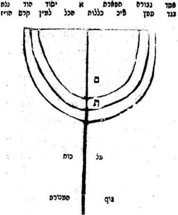
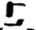
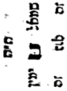
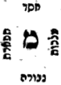

Pardes Rimmonim, English translation with the Hebrew.
We named it "The Gate of Letters" because in it is explained the matter of the twenty-two letters in general and in particular. Its chapters number twenty-seven. [The printed index omits the entry for the letter Dalet and passes from "chapter 7" (Heh) to "chapter 9" (Vav), although it states the count as twenty-seven. In the body, chapter 7 treats Dalet and chapter 8 treats Heh; the Dalet entry is supplied here in brackets and Heh is numbered 8, so that the list matches the chapters.]
27:1:1 The Gate of Letters, which is Gate Twenty-Seven [the Hebrew reads "Twenty-Six"]:
שער האותיות הוא שער כ"ו:
27:1:2 What is intended in this gate is to explain the hint of the letters, which are twenty-two things, and their dependence on the upper roots, as is expounded in the words of the commentators, and especially the words of Rashbi, peace be upon him; for they rise higher and higher. And the reason for this is that they are an entrance to this wisdom, as will be explained with the help of the Name:
הנרצה בשער הזה הוא לבאר רמז האותיות הם כ"ב חפצים ותלייתם בשרשים העליונים כפי הנדרש בדברי המפרשים ובפרט דברי הרשב"י ע"ה כי הם יעלו מעלה מעלה והטעם לזה להיות כי הם מבוא אל החכמה הואת כאשר יתבאר בעה"ו:
27:1:3 Chapter One:
פרק ראשון:
27:1:4 Before we enter into the explanation of each and every letter, as our Owner shall be gracious to us, our wish is to set first a fine introduction to the matter of the letters. Many thought that these letters are conventional; that is to say, the sages agreed to make signs for the outputs of speech. How so? They agreed that the movement divided at the lips, which are B V M P, should be expressed in the form of Bet and in the form of Vav and in the form of Mem and in the form of Peh; and likewise for the other movements that they agreed upon. And likewise the other languages of the nations have signs for everything they wish; and as the masters of number did, who invented for themselves ten signs, in which they included all number, according to the change of the places and according to the measure of their multiplications, as is well known to the masters of number. And according to this it is found that there is no difference between these letters and the other signs of the nations for their language in their lands, by their nations; except that these are conventional for the nation of Israel by the counsel of Moses, from the mouth of a prophetic spirit, and those are the convention of a foolish intellect that invented so for them. And according to this convention it would follow that there is no principal in that inscribed writing, but only the revealing of the intent of the speaker; like the wise physician who writes his wisdom in a book of medicine, where the intent is not that that book be healing at all, but his intent in his book is to reveal his opinion, or what he wishes, on the matter of healing; and when a man understands the principal of the wisdom written in the book, there remains no benefit at all in that book. And similar to this the philosopher said to his disciples: "My sons, do not trust in the skins of dead carcasses." And according to this the law would be that if a man studies in that book years without number, if he does not understand the learning of the wisdom it will not profit him anything, and he will not complete the soul by his learning at all, since he does not understand the inquiries of the wisdom; but on the contrary he has lost his time on what will harm him and not profit him: for the loss of his time and the exhaustion of his strength will harm him, and it will not profit him, since he learned no learning from it. And likewise their opinion on the matters of the Torah: that the intent is the revealing of the inwardness and the governance for the completeness of the soul; and whoever does not know the matters of its inquiries, no benefit reaches him in its study, God forbid. And this is impossible; for certainly the words of the Torah are "restoring the soul" (Ps. 19:8). And the proof is from what we are obliged in the completion of the Torah, "twice the Scripture and once the Targum," and even "Ataroth and Dibon" (Num. 32:3); and this points to the completeness of the Torah, and that it has an inwardness and concealment and spirituality and life. And so Rabbi Simeon explained in Parashat Beha'alotekha (fol. 152), and these are his words: "Rabbi Simeon said: Woe to that man who says that the Torah came to show mere stories and the words of a commoner. For if so, even at this time we could make a Torah from the words of commoners, and more praiseworthy than all of them. If to show the things of the world, even the rulers of the world have among them higher things; if so, let us go after them and make a Torah from them in this fashion. Rather, all the words of the Torah are upper words and upper secrets. Come and see: the upper world and the lower world are weighed in one balance: Israel below, upper angels above. Of the upper angels it is written (Ps. 104:4), 'Who makes His angels spirits' (this in the upper place). At the hour that they descend below they are clothed in the garment of this world; and if not, they cannot stand in this world, and the world cannot bear them. And if with angels it is so, the Torah, which created them and created all the worlds, and they stand for its sake, how much more so: since it descended to this world, if it were not clothed in these garments of this world, the world could not bear it. And therefore this story of the Torah is the garment of the Torah. Whoever thinks that that garment is the Torah itself, and not another thing, may his spirit expire, and he will have no portion in the world to come. Because of this David said (Ps. 119:18), 'Open my eyes, that I may behold wondrous things out of Your Torah': what is beneath the garment of the Torah. Come and see: there is a garment that is seen by all; and those fools, when they see a man in a garment that appears fine to them, do not look further. They think that that garment is the body; the importance of the body is the soul. In this fashion the Torah has a body; and the words of the Torah, which are called the bodies of Torah, this body is clothed in a garment, which are the stories of this world. The fools of the world look only at that garment, which is the story of the Torah, etc. And those who know more do not look at the garment, but at the body that is beneath that garment. The wise, the servants of the upper King, those who stood at Mount Sinai, look only at that soul, which is the principal of all, the Torah itself. And in the world to come they are destined to look at the soul of the soul of the Torah. Come and see: so too above there is a garment and a body and a soul and a soul to the soul. The heavens and their hosts are the garment; and the Assembly of Israel, this is the body that receives the soul, etc. The soul that we spoke of, this is the Beauty [Tiferet] of Israel, which is the Torah itself. And the soul to the soul, this is the Holy Ancient One; and all is held one in another. Woe to those wicked of the world who say that the Torah is nothing but a mere story; and they look at the garment and no further. Happy are the righteous who look at the Torah as is fitting. Wine sits only in a jar; so the Torah sits only in this garment. And therefore one should look in the Torah only at what is beneath the garment; and therefore all these words and all those stories are garments." Thus far his words.
קודם שנכנס בביאור כל אות ואות כפי אשר יחננו קוננו רצוננו להקדים הקדמה יפה אל ענין האותיות. רבים חשבו היות האותיות האלו הסכמיות ר"ל הסכימו החכמים לעשות סימניות מוצאות הדיבור כיצד הסכימו שתהיה התנועה הנחלקת בשפתים שהם בומף נהגות בצורת הב' ובצורת הוא"ו ובצורת המ"ם ובצורת הפ"א וכן לשאר התנועות שהסכימו. וכן שאר לשונות הגוים יש להם סמניות לכל הנרצה אליהם וכמו שעשו בעלי המספר שהמציאו להם י' סימנים שבהם כללו כל המספר לפי התחלפות המעלות וכפי שיעור רבויים כמפורסם לבעלי המספר. ונמצא לפי זה כי אין בין אותיות אלה לשאר סימני הגוים ללשונם בארצותם לגוייהם. אלא שאלו הם הסכמיות אל האומה הישראל בעצת משה מפי רוח נבואיי ואלו הם הסכמת שכל הסכל שהמציא להם כך ויעלה לפי זאת ההסכמה שאין עיקר בכתב הנרשם ההוא אלא גלוי כוונת המדבר. כמו החכם הרופא הכותב חכמתו בספר הרפואה שאין הכוונה שיהיה הספר ההוא רפואה כלל אבל כוונתו בספרו לגלות דעתו או הנרצה אליו בענין הרפואה וכאשר יבין האדם עיקר החכמה הכתובה בספר לא ישאר בספר ההוא תועלת כלל. וכיוצא בזה אמר החוקר לתלמידיו בני אל תבטחו בעורות הנבלות המתות. ולפי זה יהיה הדין שאם ילמוד האדם בספר ההוא שנים אין מספר אם לא יבין למוד החכמה לא יועילנו דבר ולא ישלים נפש בלימודו כלל אחר שאינו מבין דרושי החכמה אלא אדרבא אבד זמנו במה שיזיקוהו ולא יועילהו. כי יזיקהו אבוד זמנו ואפיסת כוחתיו ולא יועילהו כיון שלא למד ממנו שום לימוד וכן דעתם בענייני התורה שהכוונה גלוי הפנימיות וההנהגה אל שלימות הנפש ומי שלא ידע ענייני דרושיה לא יגיענו תועלת בלימודה ח"ו. וזהו מן הנמנע כי וודאי דברי תורה הם משיבת נפש וראיה ממה שחוייבנו בהשלמת התורה שנים מקרא ואחד תרגום ואפילו עטרות ודיבון וזה מורה על שלימות התורה ושיש לה פנימית והעלם ורוחניות וחיות וכן פירש ר' שמעון בפרשת בעלותך (דף קנ"ב) וז"ל רש"א ווי לההוא בר נש דאמר דהא אורייתא אתא לאחזאה ספורין בעלמא ומילין דהדיוטא. דא הכי אפילו בזמנא דא אנן יכלין למעבד אורייתא במלין דהדיוטא ושבחא יתיר מכלהו. אי לאחזאה מילי דעלמא אפי' אינון קפסירי דעלמא אית בינייהו מלין עלאין יתיר. אי הכי נזיל אבתרייהו ונעביד מנייהו אורייתא כה"ג. אלא כל מלין דאורייתא מילן עילאין אינון ורזין עילאין. תא חזי עלמא עלאה ועלמא תתאה בחד מתקלא אתקלו. ישראל לתתא מלאכי עלאי לעילא. מלאכי עילאי כתיב בהו (תהלים קד) עושה מלאכיו רוחות. (האי באתר עלאה). בשעתא דנחתין לתתא מתלבשי בלבושא דהאי עלמא, ואי לא כו' לא יכלין למיקם בהאי עלמא ולא סביל להון עלמא. ואי במלאכין כך אורייתא דברא להון וברא עלמין כלהו וקיימין בגינה עאכ"ו כיון דנחתת להאי עלמא אי לאו דמתלבשא בהני לבושין דהאי עלמא לא יכיל עלמא למסבל. וע"ד האי סיפור דאורייתא לבושא דאורייתא איהו. מאן דחשיב דההוא לבושא איהו אורייתא ממש ולא מלה אחרא תפח רוחיה ולא יהא ליה חולקא בעלמא דאתי. בגין כך אמר דוד (שם קיט) גל עיני ואביטה נפלאות מתורתך, מה דתחות לבושא דאורייתא. ת"ח אית לבושא דאתחזי לכולא ואינון טפשין כד חמאן לבר נש בלבושא דאתחזי לון שפירא לא מסתכלין יתיר. חשיבו דההוא לבושא גופא חשיבותא דגופא נשמתא. כהאי גוונא אורייתא אית לה גופא ומלין דאורייתא דאיקרון גופי תורה האי גופא מתלבשא בלבושא דאינון סיפורין דהאי עלמא. טפשין דעלמא לא מסתכלין אלא בההוא לבושא דאיהו סיפור דאורייתא כו'. ודידעי יתיר לא מסתכלין בלבושא אלא בגופא דאיהו תחות ההוא לבושא. חכימין עבדוי דמלכא עלאה אינון דקיימי בטורא דסיני לא מסתכלין אלא בההוא נשמתא דאיהו עיקרא דכולא, אורייתא ממש. ולעלמא דאתי זמינין לאסתכלא בנשמתא דנשמתא דאורייתא. ת"ח הכי נמי לעילא אית לבושא וגופא ונשמתא ונשמתא לנשמתא. שמייא וחיליהון אינון לבושא וכנסת ישראל דא גופא דמקבלא לנשמתא כו'. נשמתא דאמרן דא תפארת ישראל דאיהי אורייתא ממש. ונשמתא לנשמתא דא איהו עתיקא קדישא וכלא אחיד דא בדא. ווי לאינון חייבי עלמא דאמרין דהא אורייתא לאו איהי אלא סיפור בעלמא ואינון מסתכלין בלבושא ולא יתיר. זכאין אינון צדיקייא דאינון מסתכלין באורייתא כדקא יאות. חמרא לא יתיב אלא בקנקן כך אורייתא לא יתבא אלא בלבושא דא. וע"ד אורייתא לא בעי לאסתכלא אלא במה דאית תחות לבושא וע"ד כל אילין מילין וכל אינון ספורין לבושין אינון עכ"ל.
27:1:5 And behold, from this saying it appears explicitly that the divisions of the Torah are four, and under each one of these four are a thousand thousands of thousands of aspects. The first division is the one he titles by the name of the upper garment, which is the story of things, which was made corporeal so that it be understood by us. And one who learns in the Torah to know [only this], as one who learns in a book of chronicles, this certainly will not profit in learning, and no benefit will reach him from it; and would that he not lose. But when a man comes to learn in the Torah, his intent must be that he is learning that matter as being divine words whose great inwardness is concealed from him. And by this thing the breath of Torah that goes out of his mouth will please before the Holy One, blessed be He, "better than an ox or a bullock" (Ps. 69:32), even though he understands in it only the plainness of the story. And needless to say this; but even one who does not understand at all, because he is not expert in the language in its explanation, but occupies himself in the Scripture alone, he too has a good reward in his toil. And of these and the like it is said (Ps. 1:2), "and in his Torah does he meditate day and night"; and our Sages, of blessed memory, expounded (Avodah Zarah 19a): it does not say "and in the Torah," but "and in his Torah": the explanation, according to the measure of his knowledge. For even one who does not know how to join the words, he too, if he occupies himself in it day and night, "his reward is with him and his recompense before him" (Isa. 40:10); on condition that he always add; for if you do not say so, behold, our Sages, of blessed memory, said in the Mishnah (Avot, ch. 1), "And he who does not add, diminishes; and he who does not learn," etc. And the second division is those who occupy themselves in the understanding of the plain sense; that is to say, the laws and the midrashim, and the explanation of the commandments, and the explanations of the decisors, such as the six orders of the Mishnah, in their answers and their use, which they titled by the language of Talmud and the attendance on the disciples of the sages; and likewise the midrashim of aggadah of our Rabbis, of blessed memory, in their plain sense. For they gladden the heart and enlighten the eyes; may our Creator make us merit that our portion be in them and our lot with them; for they are those who sustain the world; and the length of the matter would not be sufficed by writing. And this division Rashbi, peace be upon him, titled by the name body. And to this the masters of the Mishnah intended in saying (Avot, ch. 3): "Bird offerings and the beginnings of menstruation, these, these are the bodies of the laws." The third division is those who occupy themselves in the pleasant Kabbalah, such as the secrets expounded in the Zohar, that a man enter into them, and through it add further like them and like them; for they have left us room. And on condition that the inquirer continue constantly the occupation with the inquiries of this book; for "then shall he walk in his way securely" (Prov. 3:23). And they are soul and inwardness certainly for the whole Torah; for all the midrashim and the mishnayot and all the laws and all the doing of the commandments have an inwardness and a pleasant secret. The fourth division is the spirituality of the letters and their manifestation, and their joining with one another, and their relationship; for whoever goes down to the depth of this matter can create worlds. And this is called the soul to the soul, which depends on Binah, which is called the world to come; and this is the joy that we hope for after the resurrection. And under each division of these four divisions there are many, many aspects, which a man can judge of himself. And it is found according to this that the matter of the Torah is the very self of the sefirot, as he explains: in the body, which is Malkhut; and the soul, which is Tiferet; and the soul to the soul, which is Binah. And the Torah itself is found to be a garment to the very Self of God, just as the sefirot are a garment to the very Self of the root that spreads out, as is expounded in the preceding gates. And for this cause the occupation with the Torah is above all, as is known, apart from other reasons.
והנה מתוך המאמר הזה נראה בפי' כי חלוקת התורה הם ד' ותחת כל א' מאלו הד' אלף אלפי אלפים בחינות. החלוקה הראשונה היא שמכנה אותה בשם לבוש עליון שהוא ספור דברים שנתגשמה כדי שתובן אלינו. והלומד בתורה לדעת כמי שלומד בס' הזכרונות זה ודאי לא יועיל בלימוד ולא יגיעהו ממנו תועלת והלואי שלא יפסיד אבל כאשר יבא האדם ללמוד בתורה צריך שיהיה כוונתו שהוא לומד הענין ההוא במה שהם דברים אלהיים שנעלם ממנו עוצם פנימיותם ובדבר הזה ייטב הבל תורה היוצא מפיו לפני הקב"ה משור פר. ועם היות שהוא לא ישכיל בה כי אם פשטיות הסיפור. ואין צריך לומר זה אלא אפי' מי שלא יבין כלל מפני שאינו בקי בלשון בביאורו אלא הוא מתעסק במקרא לבד גם לו יש שכר טוב בעמלו. ועל אלו וכיוצא בהן נאמר (תהלים א) ובתורתו יהגה יומם ולילה ודרשו חז"ל (ע"ז דף ט') ובתורה לא נאמר אלא ובתורתו. פי' כפי שיעור ידיעתו כי גם מי שלא ידע לחבר התיבות גם הוא אם יעסוק בו יומם ולילה שכרו אתו ופעולתו לפניו. ובתנאי שיוסיף לעולם דאי לא תימא הכי הא אמרו חז"ל במתניתין (אבות פ"א) ודלא מוסיף יסיף ודלא יליף וכו'. והחלוקה השנית היא אותם העוסקים בהשכלת הפשט רצה לומר הדינים והמדרשים ופי' המצות ופי' הפוסקים כמו שתא סדרי משנה בתשובתם ושימושם שכינו אותו בלשון תלמוד ושימוש תלמידי חכמים, וכן מדרשי אגדה לרבותינו ז"ל בפשטיות. כי הם משמחי לב מאירי עינים יזכנו בוראנו להיות חלקנו בהם וגורלנו עמהם כי הם מעמידי העולם והאריכות בענין לא יספיק הכתיבה. והחלוקה הזאת כינה הרשב"י עליו השלום בשם גופא. ואל זה כוונו מארי מתניתין באמרם (שם פ"ג) קינין ופתחי נדה הן הן גופי הלכות. החלוקה השלישית היא אותם העוסקים בקבלה הנעימה כמו הסודות הנדרשים בזוהר שיכנס בהם האדם ועל ידו יוסיף עוד כהם וכהם כי מקום הניחו לנו. ובתנאי שיתמיד המעיין העסק בדרושי הספר הזה כי ילך לבטח דרכו והם נשמה ופנימיות ודאי לכל התורה. כי כל המדרשים והמשניות וכל הדינין וכל מעשה המצות יש להם פנימיות וסוד נעים. החלוקה הרביעית היא רוחניות האותיות ומציאותם וחיבורם אלו באלו והתייחסם כי מי שירד לעומק הענין הזה יוכל לברוא עולמות וזה נקרא נשמה לנשמה שהוא תלוי בבינה שהיא נקרא העולם הבא וזו היא השמחה שנקווה אחר התחייה. ותחת כל חלוקה מד' חלוקות האלה יש כמה וכמה בחי' שאדם יכול לשפוט מעצמו. ונמצא לפ"ז ענין התורה הוא עצם הספירות כדמפרש בגוף שהיא מלכות ונשמה שהיא תפארת ונשמה לנשמה היא הבינה ונמצאת התורה עצמה לבוש אל עצם האלוה כמו שהספירות הם לבוש אל עצם השרש המתפשט כנדרש בשערים הקודמים ולסבה זו עסק התורה עולה על הכל כנודע בזולת טעמים אחרים.
27:1:6 And behold, the three preceding divisions Rashbi, peace be upon him, titled by the name masters of Scripture, masters of Mishnah, masters of Kabbalah. The first division is called masters of Scripture, and the second division is called masters of Mishnah, and the third division is called masters of Kabbalah. And the fourth division is hardly found, and therefore it did not come by name. And under it stand the Names and their action and their permutation from within the verses, with the joining to them of the knowledge of their drawing and their order in the upper Chariot, which is hardly found. And in the book Berit Menuchah it occupied itself in this matter somewhat. And the entrance to it is these three gates that we shall explain one after another; and they are the Gate of Letters, and the Gate of Vowels, and the Gate of Cantillation Marks, as will be explained with the help of the Name:
והנה אל ג' חלוקים הקודמים כינה הרשב"י ע"ה בשם מארי מקרא מארי משנה מארי קבלה. החלוקה הראשונה היא נקרא מארי מקרא, והחלוקה הב' נקרא מארי משנה, והחלוקה הג' נק' מארי קבלה. והחלוקה הרביעית אינה נמצא כמעט, ולכן לא באה בשם. ותחתיה תעמוד השמות ופעולתם וצרופם מתוך הפסוקים בהשתתף אליהם ידיעתם יניקתם וסדרם במרכבה העליונה מה שאינו נמצא כמעט. ובספר ברית מנוחה נתעסק בענין זה קצת. ומבוא אליה הם ג' שערים אלה אשר נבאר זה אחר זה. והם שער האותיות, ושער הנקודות, ושער הטעמים. כאשר יתבאר בעה"ו:
27:2:1 Before we enter into the explanation of the letters, our wish is to set first one introduction, with which was the opening of our speech in this gate in the previous chapter. And it is that the letters of the Torah are not conventional; rather they are spiritual, related in their form to the inwardness of their soul. And this is why our Rabbis, of blessed memory, were precise in the explanation of the manifestation of the form of the letters and their thorns and their crowns and their decorations: because they hint at a known spirituality of the upper sefirot. And each and every letter has a spiritual form and an honoured light, emanated from the very self of the sefirah, descending in a chain from rung to rung, after the manner of the chain of descent of the sefirot.
קודם שנכנס בביאור האותיות רצוננו להקדים הקדמה אחת שבה היה פתיחת דבורינו בשער זה בפרק הקודם. והיא שאין אותיות התורה הסכמיות אמנם הם רוחניות מתייחסות בצורתם אל פנימיות נשמתם. וזהו שדקדקו רז"ל בביאור מציאות צורת האותיות וקוציהם ותגיהם וזיוניהם לפי שהם רומזים אל רוחניות ידוע אל הספירות עליונות וכל אות ואות יש להם צורה רוחניות ומאור נכבד אצול מעצם הספי' משתלשל ממדרגה למדרגה כדרך השתלשלות הספירות.
27:2:2 And behold, the letter is a palace and a base for that spirituality. And when a man mentions and moves a letter of the letters, necessarily that spirituality is aroused; and from the breath of the mouth holy forms come into being from it; they rise and are bound in their root, which is the root of the Emanation. And not this alone, but also in their manifestation, that is to say in their writing, they have a spirituality that rests on those letters. And this is the reason for the holiness of a Torah scroll. And this is the reason that the Mem and the Samekh in the tablets stood by a miracle: because the spirituality held up that pure body. And this is the reason in the matter of the breaking of the tablets, which our Rabbis, of blessed memory, explained, that the letters flew off. And these are the words in the Midrash: "He looked at the tablets and saw that the writing in them had flown off; and they became heavy on Moses, and fell from his hands and were broken." Thus far.
והנה האות היכל ומכון לרוחניות ההוא. ובהיות האדם מזכיר ומניע אות מהאותיות בהכרח יתעורר הרוחניות ההוא והבל הפה ממנו יתהוו צורות קדושות יתעלו ויתקשרו בשרשם שהם שרש האצילות. ולא זה בלבד אלא גם במציאותם רצה לומר בכתיבתם להם רוחניות שורה על האותיות ההם. וזה טעם קדושת ספר תורה. וזהו טעם מ"ם וסמ"ך שבלוחות בנס היו עומדים, מפני שהרוחניות מעמיד הגשם הזך ההוא. וזה טעם בענין שבירת הלוחות שפירשו רז"ל שפרחו האותיות. וז"ל במדרש נסתכל בלוחות וראה הכתב שבהם שפרח וכבדו על ידי משה ונפלו מידיו ונשתברו עכ"ל.
27:2:3 Further, in the Jerusalem Talmud (Ta'anit, ch. 4) Rabbi Azariah explained the matter in the name of Rabbi Judah: "The tablets, their weight was forty se'ahs, and the writing bore them. When the writing flew off they became heavy on the hands of Moses, and they fell and were broken. So everything from which the Holy One, blessed be He, removes His Shekhinah no longer endures." And in the Midrash (Bamidbar Rabbah, ch. 2): "'And his banner [ve-diglo] over me was love' (Song 2:4). [At first, whoever pointed at the image of the king with the finger would be killed; and the children go to the house of the book and point at the Name with the finger. The Holy One, blessed be He, said: 'And his banner over me was love': do not read ve-diglo] but ve-dilugo [and his skipping]." Thus far.
עוד בירושלמי (תעניות פ"ד) פי' הענין רבי עזריה בשם ר"י הלוחות משאן מ' סאה והכתב היה סובלן כיון שפרח הכתב כבדו ע"י של משה ונפלו ונשתברו. כך כל דבר שהקדוש ברוך הוא מסלק שכינתו ממנו שוב אינו מתקיים. ובמדרש (רבה במדבר פ"ב) ודגלו עלי אהבה [בראשונה כל מי שמראה איקונין של מלך באצבע היה נהרג והתינוקות הולכים אל בית הספר ומורים את האזכרה באצבע אמר הקב"ה ודגלו עלי אהבה א"ת ודגלו] אלא וגודלו עכ"ל.
27:2:4 All this showed the spirituality of the letters. And this is the reason for the matter of a Torah scroll that was burned, God forbid, which our Rabbis, of blessed memory, said (Mo'ed Katan 26a) that one tears two tears; and they proved it from the verse "after that the king had burned the roll and the words" (Jer. 36:27): that he tears one for the parchment and one for the writing; that is, the spirituality of the letters. And many like these show the matter of the spirituality of the letters even in their writing alone; all the more in their reading; all the more in their intention. And the matter is that the written letters are a body and palace for the letters fixed in the mouth. The example of this: the written letters are corporeal, and those read by mouth are spiritual. And this is the reason for the Written Torah and the Oral Torah: for the Written Torah is spirituality in a high place, and needs a case, so that its light be clothed in corporeal letters; but the Oral Torah is itself a case, and does not need the garment of the case at all.
הורה כל זה על רוחניות האותיות. וזה טעם לענין ס"ת שנשרף ח"ו שאחז"ל (מ"ק ד"כו) שקורע שתי קריעות והכריחו כן מפסוק אחרי שרוף המלך את המגלה ואת הדברים דקורע חדא אגויל וחדא אכתב דהיינו רוחניות האותיות. וכאלה רבות מורות על ענין רוחניות האותיות אפילו בכתיבתן לבד, כ"ש בקריאתן, כ"ש בכוונתן. והענין האותיות הנכתבות הם גוף והיכל לאותיות הקבועות בפה. המשל בזה האותיות הנכתבות הם גשמיות והנקראות על פה הם רוחניות. וזהו טעם תורה שבכתב ותורה שבעל פה כי תורה שבכתב רוחניות במקום גבוה וצריך תיק להתלבש אורה באותיות גשמיות אבל תורה שבעל פה היא עצמה תיק ואינה צריכה אל לבוש התיק כלל.
27:2:5 And behold, the written letters are a body and palace for what is mentioned in the mouth; and those mentioned in the mouth are corporeal with respect to those of thought, which are in the heart; and those that are in the heart are the Emanation, known in the heart of the wise among the people of the children of Israel.
והנה האותיות הנכתבות הם גוף והיכל אל הנזכר בפה. ואותם הנזכ' בפה הם גשמיות בערך המחשביות שהם בלב. ואותם שהם בלב הם האצילות ידועות בלב משכילי עם בני ישראל.
27:2:6 And behold, the matter in this is with respect to the simple letters, each one alone. However, when the letters are joined and gathered and words are made from them, according to the measure of the word in the number of its letters, so is the measure of its spirituality. The example of this: Mem alone is Binah, and Yod alone is Chokhmah; and each one alone points to a matter of spirituality and power emanated from these two attributes. And when they are composed, there comes into being from them a more important spirituality. And not that the two preceding powers were included in the word Mi and there is there only the spirituality of Mi; rather it is a root, and rides upon two emanated powers, which are Mem by itself and Yod by itself; and that is Mi. Afterward there rides upon it a spirituality that includes them; and it is Mi, which points to Binah concealed in Chokhmah, in the secret of the aspects.
והנה הענין בזה הוא בערך האותיות פשוטות כל אחד ואחד לבדה. אמנם כאשר יתחברו האותיות ויתקבצו ויעשה מהם תיבות לפי שיעור התיבה במספר אותיותיה כן שיעור רוחניותה. המשל בזה מ' לבדה היא בינה וי' לבדה היא חכמה, וכל אחד לבדה יורה על ענין רוחניות וכח אצול משתי המדות האלה, וכאשר יורכבו יתהוו מהם רוחניות היותר חשוב ולא שנכללו הב' כחות הקודמים בתיבת מי ואין שם אלא רוחניות מ"י, אלא הוא שרש ורוכב על ב' כחות אצולים שהם מ' בפני עצמה וי' בפני עצמה והיינו מ"י. אחר כך רוכב עליה רוחניות כולל אותם והוא מ"י שמורה על בינה המתעלמת בחכמה בסוד הבחינות.
27:2:7 And behold, not because of this did the power of Binah lack from its place, nor did the power of Chokhmah lack; however, between the two of them there comes into being a fine manifestation, choicer than each letter alone; and it is Mi. And the example of this is two branches that spread out from the root; for not because of the spreading out did the root lack the power of the two of them, God forbid. And that is Mi, the root to Yod by itself and to Mem by itself; even though it is not a root in substance; but on the contrary, Mem and Yod are two branches to another great branch. And likewise the law for a word composed of three letters, like emet [truth]: for certainly Alef by itself is in Keter, and the Mem in Binah, and Tav in Malkhut; and they are thin branches. And when the three of them are joined, a high branch is made, emet, which hints at Tiferet. And we do not say because of this that the Alef and the Mem descended from their degree, for until now they were in Keter and Binah and now they are in Tiferet; for now they draw near to the root and the principal. And Alef may be the Keter that is in Tiferet or the Keter that is in Malkhut; and likewise in Mem; for each one is included of ten, and ten of ten. And there is a difference between the branches distant from the root, even if they hint at a high place, and the branches near to the root, even if they hint at a low place. And from this matter we may infer to a word of four and of five and the like. And this is the reason for the permutation: that the more the letters multiply, the more the permutation and the powers multiply, as we shall come to in the Gate of Permutation, with the help of Heaven.
והנה לא מפני זה חסר כח הבינה ממקומה וגם לא חסר כח החכמה. אמנם בין שתיהם יתהווה מציאות יפה מובחר מכל אות לבדו והוא מ"י. והמשל בזה אל שני ענפים מתפשטים מן השרש כי לא מפני ההתפשטות חסר השרש כח שתיהם חס ושלום, והיינו מ"י שורש ליו"ד בפני עצמה ולמ' בפני עצמה עם היות שאינו שרש בעצם אלא אדרבא מ' וי' הם שני ענפים אל ענף אחר גדול. וכן הדין אל מלה מורכבת משלשה אותיות כמו אמת שודאי א' בפני עצמה היא בכתר והמ' בבינה ות' במלכות והם ענפים דקים. וכאשר יתחברו שלשתן יעשה ענף גבוה אמ"ת שירמוז בתפארת. ולא נאמר מפני זה שירדו הא' והמ' ממעלתם שעד הנה היו בכתר ובינה ועתה הם בתפארת. כי עתה הם מתקרבים אל השרש והעיקר. וא' אפשר שהיא כתר שבתפארת או כתר שבמלכות, וכן במ' כי כל אחת כלולה מי' וי' מי'. ויש חילוק בין הענפים הרחוקים מן השרש ואף אם הם רומזים במקום גבוה, או לענפים הקרובים אל השרש ואף אם ירמזו במקום נמוך. ומענין זה נקיש אל תיבה בת ארבע ובת חמש וכיוצא בהן והיינו טעם הצירוף שכל עוד שיתרבו האותיות יתרבה הצרוף והכחות כאשר נבא בשער הצרוף בסייעתא דשמייא.
27:2:8 And behold, when a man mentions that word that hints at the letters, by the cause of the movement of those powers and their striking against one another by the hammer of the soul, apart from their being aroused in their upper root to do that action, there further comes into being from it, from the breath of his mouth, a spirituality and manifestation, which will be like an angel, which will rise and be bound in its root, so that it hasten to effect its action with alacrity and speed. And this is the secret of the mentioning of the Names and the intention of prayer. And after the fixing of this introduction in the heart of the inquirer, this too is needed by him: that even though the letters are equal in their form and their movement, they are not equal in their spirituality and their emanation. And likewise the words, even though they are equal words; and we have already explained this in the Gate of the Four-Letter Name. And the proof is from the four-letter name in the thirteen attributes, "YHVH, YHVH, God compassionate," etc. (Exod. 34:6): and Rashbi, peace be upon him, explained in the Idra that the first hints at the Supreme Crown and the second at Malkhut, even though the letters are equal. And the reason is that the principal is the spirituality and emanation and soul of the word or the Name. And so is the matter in EHYH three times (Exod. 3:14): each one points to a matter by itself, as Rashbi, peace be upon him, explained, and we copied it in the Gate of Names, chapter 2.
והנה בהזכרת האדם התיבה ההיא הרומזת באותיות בסבת תנועת הכחות ההם והכאתם זה בזה על ידי פטיש הנשמה. בזולת שיתעוררו הם בשרשם העליון לפעול הפעולה ההיא. עוד יתהווה ממנה מהבל פיו רוחניות ומציאות יהי' כמו מלאך שיעלה ויתקשר בשורשו שימהר להפעיל פעולתו בזריזות ומהירות וזהו סוד הזכרת השמות וכוונת התפלה. ואחר קביעות הקדמה זו בלב המעין. עוד זאת צריך אליו כי עם היות שיהיו האותיות שוות בצורתם ותנועתם לא ישתוו ברוחניותם ובאצילותם. וכן התיבות עם היותם תיבות שוות וכבר בארנו זה בשער בן ד'. וראייה משם בן ארבע שבי"ג מדות יהו"ה יהו"ה אל רחום וכו' ופי' הרשב"י ע"ה באדרא כי הראשון רומז בכתר עליון והב' במלכות עם היות האותיות שוות. והטעם כי העיקר הוא רוחניות ואצילות ונשמות התיבה או השם. וכן הענין באהי"ה שלשה פעמים וכל אחד מורה בענין בפני עצמו כדפי' הרשב"י ע"ה והעתקנוהו בשער השמות פ"ב.
27:2:9 And the matter of their division, even though they are equal, is caused according to the order of the words, whether it is second or first; and likewise in the letters, whether it is second in the word or first, such as the two Hehs in the Name; and likewise according to the letter adjacent to it. And the explanation of these matters Moses received from the mouth of the Gevurah. And this is why Moses our teacher, peace be upon him, tarried on the mountain forty days and forty nights for the second tablets: it was in the learning of the secrets, more and more than what he learned the first time. For the matter of the secrets of our holy Torah, imagination and thought cannot contain them. And this and the like is the fourth division of which we spoke in chapter 1, which we are destined to attain at the time of the resurrection of the dead. And near to this, in the world to come: for the righteous in the Garden of Eden sit and occupy themselves in the learning of the secrets; and this is their joy, when new insights of Torah and its secrets are renewed among them. And let us return to our matter: for the letters are palaces and castles for the spirituality, and they are vessels that draw the Emanation, after the manner of the body, which draws the soul within it. And according to this it is found that even if a man knows only the reading of the Torah, that is to say, the verse alone, necessarily he will receive reward for that reading, and his reward will be great. And one may not say that because of this the reward of reading the Written Torah will be greater than the reward of reading the Oral Torah; for this is nothing; for one who reads in the Torah is like one who reads everything without understanding. And in the reading of the words the principal is that he must intend to their soul and their source and their spirituality, which are their explanation. And if he occupies himself in the Torah without this, he is like one who reads in a body without a soul. For this, necessarily, he must occupy himself in the Oral Torah, which is the explanation of the Torah; and it is the soul of the Torah; that is to say, it reveals its spirituality, which is its explanations and its secrets. And so Rashbi, peace be upon him, wrote (in the Zohar, Terumah, fol. 176), and these are his words: "What is the Book of Concealment [Sifra di-Tzeni'uta]? Rabbi Simeon said: Five chapters there are, which are included in a great palace and fill the whole earth. Rabbi Judah said: If these are included, they are better than all. Rabbi Simeon said: So it is for one who entered and went out; and for one who did not enter and go out, not so. A parable of a man whose dwelling was among the rocks, and he did not know the dwellings of the city. He sowed wheat and ate wheat in its raw state. One day he entered the city; they brought him good bread. That man said: This, what is it for? They said to him: It is bread, to eat," etc. "He said: And from what is this made? They said: From wheat. Afterward they brought him cakes kneaded with oil; he tasted of them and said: And these, from what are they made? They said: From wheat. Afterward they brought before him royal pastries kneaded with honey and oil. He said: And these, from what are they made? They said: From wheat. He said: I am master of all these; for I eat the principal of all these, which is wheat. And because of that opinion he did not know the delicacies [ma'adanei] of the king, and they were lost to him. So is one who takes hold of the general principle and does not know all the enjoyable delicacies that go out from that general principle." Thus far his words.
וענין חלוקם עם היותם שוות גורם לפי סדר התיבות אם הוא שנית או ראשונה. וכן באותיות אם היא שנית בתיבה או ראשונה, כגון שני ההין שבשם. וכן לפי האות הסמוכה אליה. ופי' עניינים אלו קבל משה מפני הגבורה. וזהו שנתעכב משה רבינו ע"ה בהר ארבעים יום וארבעים לילה בלוחות שניות, הוא בלימוד הסודות, יותר ויותר ממה שלמד בפעם הראשון. כי ענין סודות תורתינו הקדושה לא יכילם רעיון ומחשבה. וזה וכדומה לו הוא החלוקה הד' שאמרנו בפ"א שאנו עתידין להשיג בזמן תחיית המתים. וקרוב לזה לעוה"ב שהצדיקים בגן עדן יושבים ועוסקים בלימוד הסודות וזהו שמחתם כשמתחדש ביניהם חדושי תורה וסודותיה. ונחזור לענייננו כי האותיות הם היכלות וטירות לרוחניות והם כלים שואבים האצילות כדרך הגוף שהוא שואב הנשמה בתוכו. ולפ"ז נמצא כי אף על פי שלא ידע האדם כי אם קריאת התורה ר"ל הפסוק לבד בהכרח יקבל שכר על הקריאה ההיא ויהיה שכרו מרובה. ואין לומר שמפני כך יהיה שכר קריאת תורה שבכתב מרובה משכר קריאת תורה שבעל פה כי זה אינו דבר כי הקורא בתורה הוא כמו שקורא הכל בלי הבנה. וקריאת המלות העיקר צריך שיכוין בנשמתם ובמקורם וברוחניותם שהם פירושם. ואם בלא זה יתעסק בתורה הוא כמו מי שקורא בגוף בלא נשמה לזה צריך בהכרח שיתעסק בתורה שבעל פה שהוא פירוש התורה והיא נשמת התורה רצה לומר מגלה רוחניותיה שהוא פירושיה וסודותיה. וכן כתב הרשב"י עליו השלום (בזהר תרומה קע"ו) וז"ל מאן צניעותא דספרא. אמר רבי שמעון חמשא פרקין אינון דכלילן בהיכל רב ומליין כל ארעא. אמר רבי יהודא אי כלילן הני מכלהו עדיפי. אמר רבי שמעון הכי הוא למאן דעאל ונפק ולמאן דלא עאל ונפק לאו הכי. מתלא לבר נש דהוה דיוריה ביני טינרין ולא ידע בדיורי דמתא זרע חטין ואכל חיטין בגופייהו יומא חד עאל למתא אקריבו ליה נהמא טבא. אמר ההוא בר נש דנא למה. אמרו ליה נהמא הוא למיכל כו'. אמר וממה אתעביד דא. אמרו מחיטין. לבתר אקריבו ליה גריצן דלישא במשחא. טעם מינייהו אמר ואילין ממה אתעבידו. אמרו מחיטין. לבתר אקריבו קדמוהי טריקי מלכין דלישין בדובשא ומשחא. אמר ואלין ממה אתעבידו. אמרו מחיטין. אמר אנא מארי כל אילין דאנא אכיל עקרא דכל אלין דאיהו הטה. ובגין ההוא דעתא מעדוני מלכא לא ידע ואתאבידו מניה. כך מאן דנקיט כללא ולא ידע בכלהו עדונין דמהניין דנפקין מההוא כללא עכ"ל.
27:2:10 And behold, Rabbi Simeon began to praise the Book of Concealment, which is five chapters, and in them he included all the wisdom of the Kabbalah. And therefore Rabbi Judah said: if so, it is found that a man needs only the learning of that book alone. And Rabbi Simeon answered him that so it is for one who entered the Idra and went out. And he said "and went out" because ten entered and only seven went out; for three departed, as is written in the Idra at its end. But one who did not enter, and did not know the introductions that were revealed there, cannot benefit from the secrets of that concealed book. And he gave the parable of the villager, etc. And likewise certainly it will overtake one who learns in the Written Torah and says that in it all is included: for he will remain empty of everything; the case of the villager will happen to him too. And therefore the principal of completeness in the understanding of the Written Torah is the Oral Torah, as was explained. And after we have explained the matter of the letters in the manifestation of their spirituality, we shall come to relate them in general to the roots, and afterward we shall relate them in particular, with the help of the Name:
והנה רבי שמעון התחיל לשבח ספרא דצניעותא שהם חמש פרקים ובהם כלל כל חכמת הקבלה. ולכן אמר רבי יהודא שא"כ נמצא שאין אדם צריך אלא לימוד הספר ההוא לבד. והשיבו ר"ש שכן הוא למי שנכנס באדרא ויצא. ואמר ויצא לפי שנכנסו עשר ולא יצאו אלא שבעה כי ג' נסתלקו כמו שכתוב באדרא בסופה. אבל מי שלא נכנס ולא ידע ההקדמות שנגלו שם לא יוכל להנות מסודות הספר ההוא הנעלם. והמשיל משל אל הבן כפר וכו' וכן ודאי ישיגהו מי שילמוד בתורה שבכתב ויאמר שבו כלול הכל כי ישאר ריקן מכל, כמקרה הבן כפר גם הוא יקרהו. ולכן עיקר השלימות בהשכלת תורה שבכתב היינו התורה שבעל פה כמו שנתבאר. ואחר שבארנו ענין האותיות במציאות רוחניותם נבא לייחסם בכלל אל השרשים ואח"כ נייחס אותם בפרט בעה"ו:
27:3:1 And concerning the letters in general the commentators said that some of them are judgment and some of them compassion and some of them intermediate. "A rule in the divine Torah: that Alef-Bet, Gimel-Dalet, Heh-Vav are complete compassion; Zayin, Chet, Tet, Yod, compassion without qualification; Kaf-Lamed, Mem-Nun, Samekh-Ayin are mixed of judgment and compassion; Peh-Tzadi, Kof-Resh, Shin-Tav are complete judgment. And when you wish to join names and prayers and words according to the action that you wish, you will make a composition in the matter of the names that point to the action, whether for compassion or for judgment: for compassion, let most of them be from the compassion; and if judgment, let most of them be from the judgment; and so with the rest." Thus far their words.
ובאותיות בכלל אמרו המפרשים שיש קצתם דין וקצתם רחמים וקצתם בינוניים. כלל בתורה האלהית כי א"ב ג"ד ה"ו הם רחמים גמורים, ז' ח' ט' י' רחמים סתם, כ"ל מ"ן ס"ע הן מזוגים מדין ורחמים, פ"צ ק"ר ש"ת הן דין גמור. וכשתרצה לחבר שמות ותפלות ומלות לפי הפעולה אשר תרצה תעשה הרכבה בענין השמות המורות לפעולה אם לרחמים אם לדין. לרחמים יהיו רובם מהרחמים, ואם דין יהיו רובם מהדין, וכן בשאר עכ"ל.
27:3:2 And their words are concealed; for we do not see that the things are right according to the manifestation of the letters. For letters that are compassion he counts in the secret of judgment; and especially Shin, which is in Binah, as we shall explain, and it is compassion according to what appears; and he counts it with the letters of complete judgment. And likewise Dalet, which is poor [dalah] and afflicted, and he said that it is compassion. And it is possible to say that their manifestation will be compassion even if they hint in the secret of judgment; and likewise we say that their manifestation is judgment even if they hint in the secret of compassion. And at all events their words are words of tradition. Further, we have found on this matter in the Sefer Yetzirah: it said that there are three Mothers, Alef-Mem-Shin; and we explained them in the entry Alef-Mem-Shin, that they are: Alef, Keter; Mem, Chokhmah; Shin, Binah. And it called them Mothers because they are mothers to the Emanation, as we explained in the Gate of Arbiters. And seven doubles, which are B G D K P R T; and they are the seven days of the building: Gedulah, Gevurah, Tiferet, Netzach, Hod, Yesod, Malkhut. And they are called doubles because they receive judgment and compassion, dagesh and rafeh; and likewise they are among the masters of judgment and compassion, which is not so in the three first ones, as we explained in the Gate of Essence and Governance. And in this way Rashbi, peace be upon him, explained them in the Tikkunim (Tikkun 70, fol. 124) and in the Ra'aya Meheimna. And twelve simples, which are H V Z Ch Ṭ Y L N S Ā Tz Q: they are twelve, corresponding to twelve boundaries. And even though we divide them in this way, not because of this will it be difficult that they are in specific places in such-and-such a sefirah; for they will be particulars in a branch of such-and-such a sefirah. As the example: the Mem of Alef-Mem-Shin, he said here that it is in Chokhmah; and not because of this will it be difficult that it is in Binah; for it will be the branch of Binah that is in Chokhmah, or the reverse. And likewise the letters H V etc. hint at twelve boundaries, which are in Tiferet, as we explained in the Gate of the Particulars of the Names; not because of this will Heh not hint at Binah or at Malkhut, and likewise Yod at Chokhmah. And in these things there is further to explain according to what we explained in a saying of Rashbi, peace be upon him, in the Gate of Names, chapter 6: that the order of the letters is: the Alef includes all the letters, and it is a source for them, and all of them draw from it. And afterward they are divided into seven sevens, which are twenty-one. How so? B G D H V Z Ch are the secret of the line of Chesed; Ṭ Y K L M N S are the secret of the line of compassion; Ā P Tz Q R Sh T are the line of judgment. How so? B G D are literally in Chesed; H V Z are in Netzach; Ch in Malkhut from the side of Chesed. Ṭ Y K are in Tiferet; L M N are in Yesod; S is Malkhut from the side of the middle line. Ā P Tz are in Gevurah; Q R Sh are in Hod; T in Malkhut from the side of the line of judgment. And behold, three in Malkhut, from the side of three lines; just as there are three in each and every sefirah, from the side of three lines. How so? Alef: Yod at its head, Chesed; Yod at its end, Gevurah; and Vav in the middle, Tiferet. And the Alef is a source for all the letters, in the secret that it includes all three lines, as we explained. Afterward B G D are bestowed to Chesed in the secret of three lines. From the side of Chesed it is Bet, that is to say, a house [bayit] for all the effluence to bestow. Afterward, from the side of judgment, Gimel, which is to say Gevurah; and nevertheless it does kindness [gomelet chesed]. And afterward Dalet, from the side of Tiferet; for it is the door [delet] of all the effluence that is bestowed. Or the reverse: Gimel in Tiferet, for it is third to them, and it does good kindnesses; and Dalet in Gevurah, for from there is the poverty [dalut] of the effluence and its diminishment. H V Z in Netzach: Heh from the side of Chesed, that is, the union of a man and his wife; and what was poor [Dalet] from the side of judgment was set right and became Heh in the secret of Chesed. Vav from the side of Tiferet, as its sense. Zayin from the side of judgment, that is, in the secret of lamp and fire, which is from the side of Gevurah; and likewise Yod over Vav is a lamp above, at the head of the shaft of the menorah. Chet, Malkhut from the side of Chesed; that is, literally Chesed or chayyim [life], for it is all one. Ṭ Y K in Tiferet; for so it comes in reckoning to tal [dew, 39], which is Y H V, which is in Tiferet; and it brings down the dew. Tet from the side of Chesed; that is, "YHVH is good [tov] to all" (Ps. 145:9); and it is compassion and life, as is proved in the Zohar in the explanation of the letter Tet. Yod from the side of Tiferet; for so it is compassion; Tiferet is glorified in ten sefirot, that is, Yod. And likewise Malkhut with respect to Tiferet is called Yod, the diadem of her husband. Kaf is from the side of Gevurah; for so it is said (Ezek. 21:19), "smite hand [kaf] to hand"; and likewise it is called the scale [kaf] of guilt; except that through Tiferet it becomes the scale of merit. L M N in Yesod: its permutation is namal [haven], and it is Yesod; and Malkhut is a ship to the haven.
ודבריהם נעלמים כי אין אנו רואים שיהיו הדברים צודקים לפי מציאות האותיות. כי אותיות שהם רחמים מונה אותם בסוד הדין. ובפרט ש' שהיא בבינה כאשר נבאר והיא רחמים לפי הנראה, ומונה אותה עם אותיות הדין גמור. וכן דלת שהיא דלה וענייה ואמר שהיא רחמים. ואפשר שנאמר כי מציאותה יהיה רחמים אף אם ירמזו בסוד הדין וכן נאמר שמציאותם דין אף אם ירמזו בסוד הרחמים. ועל כל פנים דבריהם דברי קבלה. שוב מצאנו בעינן זה בספר יצירה אמר כי שלש אמות אמ"ש וביארנום בערך אמ"ש שהם א' כתר, מ' חכמה, ש' בינה. וקראם אמות מפני שהם אמות לאצילות וכמו שפי' בשער המכריעים. ושבעה כפולות הם בג"ד כפר"ת. והם שבעה ימי הבנין גדול"ה גבור"ה תפאר"ת נצ"ח הו"ד יסוד מלכו"ת. ונקראות כפולות שהם מקבלות דין ורחמים דג"ש ורפ"ה. וכן הם מבעלי הדין והרחמים מה שאין בשלש ראשונות כדפי' בשער מהות וההנהגה. ובדרך זה ביארם רשב"י ע"ה בתיקונים (תקונא ע' דף קכ"ד) ובר"מ. וי"ב פשוטות שהם ה"ו ז"ח ט"ט לנ"ס עצ"ק הם י"ב כנגד י"ב גבולים. ואף על פי שנחלקם בדרך הזה לא מפני זה יקשה היותם במקומות מיוחדים בספירה פלונית, כי יהיו פרטיים בענף ספי' פלונית. כמו המשל מ' של אמ"ש אמר כאן שהיא בחכמה, ולא מפני זה יקשה היותה בבינה, כי יהיה ענף בינה שבחכמה או להפך. וכן אותיות הויה וכו' רומזים בי"ב גבולים שהם בתפארת כדפי' בשער פרטי השמות, לא מפני זה לא ירמוז ה' בבינה או במלכות וכן י' בחכמה. ובדברים האלה יש עוד לפרש לפי מה שפי' במאמר א' להרשב"י ע"ה בשער השמות פ"ו כי סדר האותיות הם הא' כוללת כל האותיות והיא מקור להם וכלם שואבים ממנה. ואחר כך נחלקים לשבעה שבע' שהם כ"א. כיצד בג"ד ה"ו ז"ח הם סוד קו החסד, ט"י כ"ל מנ"ס הם סוד קו הרחמים, ע"פ צ"ק רש"ת הם קו הדין. כיצד בג"ד הם ממש בחסד. הו"ז הם בנצח, ח' במלכות. מצד החסד, טי"כ הם בתפארת, למ"נ הם ביסוד, ס' המלכות מצד קו האמצעי. עפ"ץ הם בגבורה, קר"ש הם בהוד, ת' במלכות מצד קו הדין. והרי ג' במלכות מצד ג' קוים כמו שג' בכל ספירה וספירה מצד ג' קוים. כיצד א' י' בראשה חסד, יו"ד בסופה גבורה, וא"ו באמצעיתא תפארת. והא' מקור לכל האותיות בסוד שהיא כוללת כל הג' קוים כדפי'. אחר כך נשפעים בג"ד אל החסד בסוד שלשה קוים. מצד החסד היא בי"ת ר"ל בית לכל השפע להשפיע, אחר כך מצד הדין ג' שר"ל גבורה ועכ"ז היא גומלת חסד, ואחר כך ד' מצד התפארת כי הוא דלת כל השפע הנשפע. או להפך ג' בתפארת כי הוא שלישי להם והוא גומל חסדים טובים. וד' בגבורה כי משם דלות השפע ומעוטו. הו"ז בנצח, ה' מצד החסד דהיינו יחוד איש ואשתו ומה שהיתה דלה מצד הדין נתקנה ונעשתה ה' בסוד החסד. ו' מצד התפארת כמשמעה. ז' מצד הדין דהיינו בסוד נר ואש שהוא מצד הגבורה וכן יו"ד על וא"ו הוא נר למעלה בראש קנה המנורה. ח' המלכות מצד החסד דהיינו ממש חסד או חיים כי הכל א'. טי"כ בתפארת שכן עולה בחשבון ט"ל שהוא יה"ו שהוא בתפארת והוא מוריד הט"ל. ט' מצד החסד דהיינו טוב ה' לכל והיא רחמים וחיים כדמוכח בזוהר בפירוש אות ט'. י' מצד התפארת שכן היא רחמים תפארת מתפאר בעשר ספירות דהיינו י'. וכן המלכות לגבי התפארת נקרא י' עטרת בעלה. כ' הוא מצד הגבורה שכן נאמר (יחזקאל כ"א) הך כ"ף אל כ"ף. וכן נקרא כ"ף חובה. אלא שעל ידי התפארת נעשה כ"ף זכות. למ"ן ביסוד צרופו נמ"ל והוא היסוד. והמלכות ספינה לנמל.
27:3:3 And further, Malkhut is called nemalah [ant], and of her it is said (Prov. 6:6), "consider her ways, and be wise." And Yesod is namal without the foreskin [orlah], which is circumcision [milah]; and likewise the Shekhinah is called pure, fine flour without bran; she is called nemalah. Lamed from the side of Chesed; for so Lamed is in Binah, in the secret of the tower that flies in the air; and it is bestowed from the side of Chesed. Mem in the secret of Tiferet, for through it the waters [mayim] of Chesed are bestowed to it. Nun from the side of Gevurah; in it is falling [nefilah]. Samekh is Malkhut, which is supported [semukhah] from the side of the line of compassion; and in it "YHVH upholds [somekh] all that fall" (Ps. 145:14). Ā P Tz in Gevurah. Ayin from the side of Chesed; for in it are springs [einot] of water; and the arousal of love is in the eyes; and this is the right eye; and of it it is said (Ps. 33:18), "Behold, the eye of YHVH is upon them that fear Him"; and likewise the eye sees, and seeing is in Chesed. Peh [mouth] from the side of Tiferet, which comes to milah [word/circumcision, 85]; and likewise "Who has made man's mouth," etc., "is it not I, YHVH?" (Exod. 4:11): Binah through Tiferet; and likewise the voice goes out from the mouth, which is Tiferet. Tzadi from the side of Gevurah; for even though it is judgment, "the place of judgment, that wickedness was there" (Eccl. 3:16), there righteousness [tzedek], judgment, the Righteous One [Tzaddik]. Q R Sh in Hod; and when it is turned to the attribute of judgment, the letters are turned to sheker [falsehood]; for it prevails in the secret of the husk that prevails through judgment. Kof from the side of Chesed: there "YHVH is near [karov] unto all them that call upon Him" (Ps. 145:18); and there is the kometz [handful]; and with all this it is a serpent because of the left, as we shall explain. Resh from the side of Tiferet, which is head [rosh] to the Patriarchs, binding the three of them. And so he explained in the Sefer ha-Bahir why it is called heavens: that it is round like a head; and I explained it in the Gate of Arbiters. Shin from the side of Gevurah; for there is Binah, the root [shoresh] of the tree. Tav in Malkhut from the side of Gevurah, of which it is said (Ezek. 9:4), "and set a mark [ve-hitvita tav]." Sometimes Tav is "you shall die" [tamut], and sometimes Tav is "you shall live" [tichyeh]; all according to the receiving. This is the order of the letters according to what we hold, following Rashbi, peace be upon him. Therefore we shall portray the letters in general after the manner of the menorah, like this:

ועוד מלכות נקראת נמלה ועליה נאמר (משלי ו ו) ראה דרכיה וחכם. ויסוד נמל בלא ערלה שהוא מילה וכן השכינה נקראת ברה סולת בלא סובין נקראת נמלה. ל' מצד החסד שכן ל' בבינה בסוד מגדל הפורח באויר. והוא נשפע מצד החסד. מ' בסוד התפארת שעל ידו נשפעים מימי החסד אליו. נ' מצד הגבורה בו נפילה. ס' היא המלכות שהיא סמוכה מצד קו הרחמים ובו סומך ה' לכל הנופלים. עפ"ץ בגבורה. ע' מצד החסד שבו עינות מים והתעוררת האהבה הוא בעינים וזהו עין ימין ועליו נאמר (תהלים ג יח) עין ה' אל יריאיו. וכן עין רואה וראיה בחסד. פ"ה מצד הת"ת שעולה מילה. וכן מי שם פה לאדם כו' הלא אנכי ה' (שמות ד יא). בינה ע"י התפארת. וכן קול יוצא מפ"ה שהוא התפארת. צ' מצד הגבורה כי עם היות שהוא דין מקום המשפט שמה הצדק דין צדי"ק. קר"ש בהוד וכאשר מתהפכת למדת הדין האותיות מתהפכות לשק"ר כי הוא גובר בסוד הקליפה הגוברת ע"י הדין. ק' מצד החסד שם קרוב ה' לכל קוראיו ושם קומץ ועל כל זה הוא נחש מפני השמאל כמו שנבאר. ר' מצד התפארת שהוא ראש לאבות קושר לשלשתן. וכן פירש בספר הבהיר למה נקרא שמים שהוא עגול כראש ופירשתי בשער המכריעין. ש' מצד הגבורה כי שם הבינה שרש האילן. ת' במלכות מצד הגבורה שעליה נאמר (יחזקאל ט ד) והתוית תיו. לפעמים ת' תמות ולפעמים ת' תחיה. הכל לפי הקבלה. זהו סדר האותיות למאי דסבירא לן אליבא דרשב"י ע"ה. ע"כ נצייר האותיות בכללות על דרך המנורה כזה
27:3:4 And now we shall come to the explanation of each and every letter by itself, according to what is found in the words of Rashbi, peace be upon him, and the other commentators, with the help of YHVH and His salvation:
ועתה נבא בביאור כל אות ואות לבדה כפי הנמצא בדברי הרשב"י ע"ה ושאר המפרשים בעזרת ה' וישועתו:
27:4:1 The letter Alef: the author of the Sefer ha-Temunah explained that its principal is in Keter, with the joining of the two attributes, which are Chokhmah and Binah; and this is the Vav in the middle, it is Keter. And it is above them all; and especially when we set it upright like this, א, and two Yods on its two sides are the two attributes. For to this hint the Yod that is in it on the right side is found looking upward, like this, א, hinting at Chokhmah, which looks upward to receive. The second Yod, which is Binah, looks downward, like this, א, to bestow to the lower ones; for she is the mother crouching upon the children to nurse them; and therefore she is called Shekhinah, for she causes to dwell and binds the two first ones with the seven days of the building. And he said further that the Alef is hinted, that it is Vav with two Yods, which comes to twenty-six. And the intent is to say that the Alef is the three first ones, and the principal is in Keter. And it is known that Keter bestows in Tiferet; for it is raised up to it by way of the middle line. And therefore the revealing of this letter is through Keter. And if so, it is found that the spirituality of this letter is a hint of its being included of the manifestation of the three first ones, Keter being principal and prevailing; and the portraying [of the Alef] is by way of Tiferet. And he said there that the dominion of this form and spirituality is at the hour of Venus [Nogah]. And there is one who explained that Tiferet is hinted in the Vav, and the two Yods are its two arms, and they are open to receive Malkhut and to embrace her. Or it may mean that the Vav is the arms stretched out to receive Malkhut, as we explained; and the first Yod is a hint to Chokhmah, from where it was emanated; and the second Yod a hint to Malkhut, the last Heh. And according to this the whole four-letter name is found in the form of Alef. And there is one who explained that Alef hints at the Supreme Crown, which is called Alef; and it is pele [wonder], from the language of "if there arise a matter too hard [yippale]" (Deut. 17:8); for it is concealed and hidden from the eye of all. And there is one who explained in another sense, and these are his words: "Alef has three sides: head and middle and end. The head is from the upper side, to which it is attached; and it points to the substance of wisdom and the memory of the power from which it is emanated. And the middle points to the substance of the intellect that multiplies from the wisdom; and the end points to the knowledge that multiplies from the intellect. And this is its form, ready to understand the work of the upper ones; and it is a beginning to found the lower ones. Therefore it is made one thing; and they are like the firstborn of knowledge, these three sides, an absolute effluence; and they draw power from this part that is before it, from the side of their equalization. And by their merit and their radiance they bore a receptacle for the emanated power, and the one lacking from them; which is the Gedulah seen in the ten sefirot, which is the totality of the branches of Chokhmah, which are in the upper roots beside Keter, in order to draw the power of strengthening in all the sefirot." And there is one who explained: the Supreme Crown is a great Alef, and it is a spirituality in the secret of the upper alphabet; the spirituality is head to every alphabet; and it is called Alef because it is true and first; and on it everything depends, in the secret of the form of Alef and "the middle bar," which bears the upper and the lower ones. And Rashbi, peace be upon him, explained in the Tikkunim (Tikkunei Zohar Chadash, fol. 117a), these are his words: "Alef: Yod above, Yod below; wisdom at the head and wisdom at the end; Vav, the binding of the two of them." Thus far his words.
אות אלף פי' בעל ס' התמונה עקרה בכתר עם הצטרפות שתי המדות שהם חכמה ובינה וזהו ו' באמצע הוא כתר. והוא עליון על כלם ובפרט כשנקימה כזה א' ושני יודין משני צדדיה הם הב' מדות. כי לזה הרמז נמצא היו"ד שבה שבצד ימין מביט כלפי מעלה כזה א' רמוז אל החכמה שהיא מבטת כלפי מעלה לקבל. יו"ד שניה שהיא בינה מבטת כלפי מטה כזה א' להשפיע אל התחתונים כי היא האם הרובצת על הבנים להניקם. ולכן נקראת שכינה כי היא משכנת וקושרת הב' ראשונות עם הז' ימי הבנין. ואמר עוד כי הא' נרמזת שהוא ו' עם ב' יודי"ן שעולה כ"ו. והכונה לומר שהא' הם ג' ראשונות והעיקר בכתר וידוע הוא שהכתר משפיע בתפארת כי הוא מתעלה עדיו דרך קו האמצעי. ולכן גלוי האות הזה ע"י הכתר. ואם כן נמצא רוחניות האות הזה רמז היותו כלול ממציאות ג' ראשונות בהיות הכתר עיקר וגובר. והצטייר [א] דרך הת"ת. ואמר שם כי ממשלת הצורה והרוחניות הזה הוא בשעת נוגה. ויש שפי' כי תפארת רמז ו'. ושני יודי"ן הם ב' זרועותיו והם פתוחות לקבל המלכות ולחבקה. או ירצה הו' הם הזרועות הפשוטות לקבל המלכות כדפי', והיו"ד ראשונה רמז לחכמה שמשם נאצל, ויו"ד שנייה רמז למלכות ה' אחרונה. ולפי זה נמצא כל שם בן ד' בצורת א. ויש מי שפי' כי א' רומז לכתר עליון שנקרא אל"ף והוא פל"א מלשון כי יפלא (דברים יז ח) שהוא נעלם ונסתר מעין כל. ויש מי שפי' בענין אחר וז"ל א יש לה ג' צדדין ראש ואמצע וסוף. הראש הוא מצד העליון שהוא אדוק בו ומורה על ממשות החכמה וזכרון הכח שהיא נאצלת ממנו והאמצע מורה על ממשות השכל המתרבה מן החכמה והסוף מורה על המדע המתרבה מהשכל וזהו צורתה מזומנת להבין מעשה העליונים והיא תחלה לייסר התחתונים ע"כ נעשה דבר אחד והם כבכור הדעת אלו הג' צדדים שפע מוחלט ויונקים כח מזה החלק שלפניו מצד השוואתם. ובזכותם ובזיוום נוקבים בית קיבול לכח הנאצל והנעדר מהם שהיא הגדולה הנראית בע"ס שהיא כלל ענפי החכמה שהם בשרשי העליון אצל הכתר כדי למשוך כח החזוק בכל הספי'. ויש מי שפי' כ"ע אלף גדולה והיא רוחניות בסוד האלפא ביתא העליונה הרוחניות ראש לכל אלפא ביתא ונקרא אלף לפי שהוא אמתי וראשון ובו תלוי הכל בסוד צורת א' והבריח התיכון הסובל עליונים ותחתונים. והרשב"י ע"ה פי' בתיקונים (תקוני ז"ח דף קי"ז.) ז"ל א' יו"ד לעילא יו"ד לתתא חכמה בראש וחכמה בסוף ו' כריכא דתרווייהו עכ"ל.
27:4:2 And its matter is that in the form of the Alef is the inclusion of three sefirot, which are Chokhmah and Malkhut, and they are two Yods (for Malkhut too is called Yod, as is explained in the Gate of Manifestations), and the Vav that is in the middle of the two of them is Tiferet, which unites them together; for through Tiferet Malkhut rises to Chokhmah. And elsewhere he said: "the second, Binah, as they established: at all events Alef is Binah," etc. And it appears that in Keter Alef is from the language of pele, which points to the utmost concealment.
ועניינו כי בצורת האלף כללות שלש ספירות שהם חכמה ומלכות והם שני יודי"ן כי המלכות ג"כ נקראת יו"ד כמבואר בשער המציאות והוא"ו שבאמצע שניהם הוא הת"ת המיחדם יחד כי ע"י הת"ת תעלה המלכות אל החכמה. ובמ"א אמר תניינא בינה כמה דאוקמוה מ"מ אלף בינה וכו'. ונראה כי בכתר אלף מלשון פלא המורה על תכלית ההעלם.
27:4:3 And further, just as Alef is first to the letters, so the Supreme Crown is the beginning of the Emanation. And in Binah, the language of alef is the language of teaching, from the language of "and I shall teach you [a'allefkha] wisdom" (Job 33:33); and likewise she is called Binah, the language of understanding.
ועוד כמו שאלף ראשונה לאותיות כן כ"ע תחלת האצילות ובבינה לשון אלף הוא לשון לימוד מלשון ואאלפך חכמה (איוב לג לג) וכן נקראת בינה לשון הבנה.
27:4:4 And further, in the Supreme Crown it is the large Alef specifically.
ועוד כי בכ"ע הוא אלף רבתי דוקא.
27:4:5 And further, in the Supreme Crown it is from the language of alluf [chief], that is to say, great; for the Supreme Crown is chief to all the Emanation. And by all the explanations it points in it to the concealment. And in Tiferet it is also the large Alef, when it is concealed in Keter, as we explained in the Gate of Manifestations.
ועוד כי בכ"ע מלשון אלוף ר"ל גדול שכ"ע אלוף לכל האצילות. ולכל הפי' הוא מורה בו על ההעלם. ובת"ת הוא ג"כ אלף רבתי כשהוא מתעלם בכתר כדפי' בשער המציאות.
27:4:6 And further, there is a small Alef, and it is hinted in Malkhut, to hint that she is first from below to above. And others explained: to hint that she is concealed from the lower ones, from the language of pele. And it is already possible to explain it in the language of alluf: for as the relation of Keter to the Emanation, so is the relation of Malkhut to all that is beneath her. And it is possible that it is the language of teaching, as "and I shall teach you wisdom"; for she is what makes the prophets wise and shows them the upper Emanation. Further, Alef hints at Gedulah, Gevurah, Tiferet; and likewise it hints at three in the manifestation of Chesed, and all is Chesed. And likewise it hints: Binah, the upper Yod; Malkhut, the lower Yod; Vav in the middle, Tiferet, which holds the two of them in the secret of the union. And these three explanations Rashbi, peace be upon him, explained, and we wrote them in the Gate of Names, with the help of Heaven. And in the Zohar, Parashat Acharei (fol. 73a), these are his words: "And come and see: the first word of the Torah that they give to children, Alef-Bet: this is a word that the people of the world cannot cleave to with understanding and cannot raise with desire; and all the more to speak with their mouth. And even upper angels, and the upper ones of the upper ones, cannot cleave to it, because they are the closed things of the holy Name. And a thousand and four hundred and five myriad worlds all hang on the thorn of the Alef. And seventy-two holy names engraved in inscribed letters, on which the upper and the lower ones stand, the heavens and the earth and the Throne of glory of the King, hang from one side to one side. For the extension of the Alef is the sustaining of all the worlds, and the supports of the upper and lower ones, in the secret of wisdom. And enclosed tracks and deep rivers and ten utterances all go out from that lower thorn that is beneath the Alef. From here onward the Alef begins to spread out into the Bet. And there is no reckoning to the wisdom that is engraved here." Thus far his words, as relevant to our matter. And the reason for the concealment of these worlds in the Alef is because the Alef is a hint at Keter. And it is already known that in Keter all the worlds and all the Emanation were included before the spreading out, as we explained in the preceding gates. And therefore all the things mentioned in the saying were included in it: the letter Alef, which is Keter, pele, alef. Or it is possible, as we explained above, that Alef is in Chesed, the head of the revealing in seven days; and it is a letter that includes all the letters, as we explained above in the previous chapter. Further, he explained (in the Zohar Chadash, Song of Songs, fol. 77) that Alef is a Yod at the head, Chokhmah; Vav, Tiferet; and a Yod below, Malkhut; and the thorn of the lower Yod is a hint at all the camps that are beneath her, small and great, outer and inner, included in Malkhut, who is the very self of the Yod:
ועוד יש אלף קטנה והיא רמוזה במלכות לרמוז שהיא ראשונה ממטה למעלה. ואחרים פי' לרמוז שהיא נעלמת מן התחתונים מלשון פלא. וכבר אפשר לפרשו בלשון אלף כי כערך הכתר אל האצילות כן ערך המלכות לכל אשר תחתיה. ואפשר להיות לשון למוד כמו ואאלפך חכמה כי היא המחכמת הנביאים ומראה להם האצילות העליון. עוד אלף היא רומזת גדולה גבורה ת"ת. וכן רומז שלשה במציאות החסד וכלא חסד. וכן רומז בינה יו"ד עליונה, מלכות יו"ד תחתונה, ו' באמצע ת"ת האוחז בשתיהן בסוד היחוד. וג' פי' האלו פירשם הרשב"י ע"ה וכתבנו בשער השמות בס"ד. ובזהר פ' אחרי (דף ע"ג.) וז"ל ות"ח מלה קדמאה דאורייתא דיהבין לינוקי אלף בית דא מלה דלא יכלין בני עלמא לאדבקא בסוכלתנו ולסלקא ליה ברעותא וכ"ש למללא בפומיהון ואפילו מלאכי עילאי ועילאי דעילאי לא יכלין לאדבקא בגין דאינון סתימין דשמא קדישא. ואלף וד' מאה וחמש רבוא עלמין כולהו תליין בקוצא דאל"ף. וע"ב שמהן קדישין גליפין באתווי רשימין דקיימי בהו עלאי ותתאי שמיא וארעא וכרסייא יקרא דמלכא תליין מסטרא חדא לסטרא חדא. דפשיטותא דאלף קיומא דעלמין כלהו וסמכין דעלאין ותתאין ברזא דחכמתא. ושבילין סתימין ונהרין עמיקין ועשר אמירן כלהו נפקין מההוא קוצא תתאה דתחות א'. מכאן והלאה שארי לאפשטא אלף בבית. ולית חשבן לחכמתא דהכא אתגליף עכ"ל לענייננו. וטעם העלם העולמות האלה באלף הוא מפני שהא' הרמז בכתר. וכבר נודע שהכתר בו היו נכללים כל העולמות וכל האצי' קודם ההתפשטות כמו שפי' בשערים הקודמים. ולכן נכללו בו כל הדברים הנזכר במאמר אות אלף שהיא כתר פלא אלף. או אפשר כדפי' לעיל כי אלף הוא בחסד ראש ההתגלות בז' ימים והיא אות כוללת כל האותיות כדפי' לעיל בפ' הקודם. עוד פי' (בז"ח שה"ש דף ע"ז) כי אלף הוא יו"ד בראש חכמה, ו' ת"ת, ויו"ד למטה מלכות, ועוקץ של יו"ד התחתון הוא רמז לכל המחנות אשר תחתיה קטנים וגדולים חצוניים ופנימיים כלולים במלכות שהיא עצם היו"ד:
27:5:1 On the letter Bet we shall copy the language of the Sefer ha-Temunah and what appears to us in its explanation: "Bet: from its form they make Dalet-Vav; and this is its form:

. And it is two paths, to the upper and the lower Wisdom; and its portraying points to two attributes; for it includes Tiferet, that is to say, the court of the Holy One, blessed be He," etc. Thus far his words.
באות בי"ת נעתיק לשון ספר התמונה והנראה לנו בפירושו. ב' מצורתה עושים ד' ו' וזו צורתה
והיא ב' נתיבות לחכמה עלאה ותתאה וציורה מורה שני מדות כי היא כוללת לת"ת ר"ל בית דינו של הקב"ה [ב] וכו' עכ"ל.
27:5:2 And his intent is to say that the Bet hints at Chokhmah. However, the hint in it is that it is Dalet-Vav [du, two]; and they are the two faces [du partzufin], which are Tiferet and Malkhut, of which it is said, "they were created with two faces." And they are two together when they are in Chokhmah; for then she rises in the degree of the rib, which was in Chokhmah, a rib to Tiferet. For one should not think that the diminishment of the moon and the matter of "and He took one of his ribs" (Gen. 2:21) are all one matter. Rather, "and He took one of his ribs" is in their emanation in Chokhmah, where they were included as one, united, like Adam, who was with his wife two-faced. And there, from Chokhmah, they were divided into two, and he entered Binah and she brought her to him; and there they were "two great lights" (Gen. 1:16). And afterward was the diminishment of the moon; for it is a matter by itself. And because they are du in Chokhmah, therefore the filling of the Yod is Dalet-Vav; for the filling and the impregnation of the Yod is Chokhmah, and its paths are the two faces. And it has already been explained that the Bet that is in Chokhmah is the hint to the paths, as it is written (Prov. 8:2), "in the house [beit] of the paths she stands." And therefore the portraying of the Bet is a hint to the two faces, which are two sefirot below. And this is what he said, "and its portraying, two attributes." And we explained this matter at length in the Gate of the Diminishment of the Moon, chapter 4. And what he said, that it is a house for Tiferet: the intent is that the thirty-two paths are also in Tiferet, as is explained in the preceding gates; and likewise thirty-two [LaV] and lulav are hinted in it; for the four-letter name comes to twenty-six, and six extremities, they are thirty-two. And therefore Malkhut too is a house, for she is a house for Tiferet, to conduct the world, whether for judgment or for compassion. The rule that emerges: the spirituality of the Bet hints at Chokhmah with its thirty-two paths that are in the two faces; and it includes Malkhut, who draws from Gevurah; for the force of judgment is the cause of her blemish and her fullness, as is known; therefore its dominion is at the hour of the moon. Thus far. And there is one who explained that the Bet is Malkhut; and because she was united with her husband, his two arms with which he embraced her were portrayed in her, and he is in the middle, like this:

. And this is in the secret of "Set me as a seal" (Song 8:6): that his form remain engraved in her. And the thorn of the Bet is a Yod, to hint that she was emanated from Chokhmah. And close to this matter is found in the Tikkunim: that the Bet is three Vavs, three pillars, which are V H V, Y L Y, S Y Ṭ, the Patriarchs supporting the Shekhinah, as we explained in the Gate of Manifestations, in the manifestation of the Heh that is in Malkhut. And most of the commentators agreed that the Bet is in Chokhmah; and Rabbi Moshe [de León] explained the reason: that it is second; and its thorn is to show that there is above a manifestation subtler than all subtle. And there is one who explained close to this matter in another sense, and these are his words: "Bet has two sides in its substance, going out on the side; two sides, behind it and before it; and it is open, in order to receive the addition of the holy spirit from the side of the Alef, like words in the mouth of a disciple; and it is the house; and its form is ready to contain the principal of the unity. And this is the explanation of its matters and the understanding of its proofs, in the discernment of wisdom and the precision of intellect." And Rashbi, peace be upon him, in the Ra'aya Meheimna (Pinchas, fol. 256b), explained, these are his words: "Anokhi [I] (Exod. 20:2): in it Kaf, Keter; and in it Ayin. And it is called Keter from the side of the upper Mother; for the going out from Egypt is mentioned toward her fifty times in the Torah. And she is the Bet of Bereshit, which includes ten utterances from the side of Chokhmah, the daughter of Yod," etc. Thus far his words.
וכוונתו הוא לומר כי הב' רומז לחכמה. ואולם הרמז בה כי היא ד"ו והם ד"ו פרצופין שהם ת"ת ומלכות שעליהם נאמר ד"ו פרצופין נבראו. והם ד"ו ביחד כאשר הם בחכמה כי אז תעלה היא במעלת הצלע שהיתה בחכמה צלע אל התפארת. כי אין לחשוב כי מיעוט הירח וענין ויקח אחת מצלעותיו הכל ענין אחד. אלא ויקח אחת מצלעותיו הוא באצילותם בחכמה שהיו שם נכללים כאחד מיוחד כאדם שהיה עם אשתו ד"ו פרצופין. ושם מחכמה נתחלקו לשנים ונכנס בבינה והביאה אליו ושם היו שני מאורות גדולים. ואחר כך היה מיעוט הירח כי הוא ענין בפני עצמו. ולפי שהם ד"ו בחכמה לכן מלוי היו"ד ד"ו כי מלואו ועבורו של יו"ד היא חכמה ונתיבותיה הם ד"ו פרצופין וכבר נתבאר כי בית שבחכמה הרמז אל הנתיבות. כדכתיב (משלי ח') בית נתיבות נצבה. ולכן ציור הב' רמז לד"ו פרצופין שהם למטה ב' ספירות. וז"ש וציורה שני מדות. ובארנו הענין הזה בארוכה בשער מיעוט הירח פ"ד. ומ"ש כי הוא בית לתפארת, הכונה כי הל"ב נתיבות הם גם כן בתפארת כמו שנתבאר בשערים הקודמים וכן נרמז בו הל"ב ולול"ב כי שם בן ד' עולה כ"ו ושש קצוות הם ל"ב. ולכן המלכות היא גם כן בית כי היא בית לתפארת לנהג העולם אם לדין אם לרחמים. הכלל העולה כי רוחניות הב' רומז לחכמה עם ל"ב נתיבותיה שבד"ו פרצופין והיא כוללת המלכות היונקת מן הגבורה כי תוקף הדין סבת פגימתה, ומלואה כנודע לכן בשעת הלבנה ממשלתה ע"כ. ויש מי שפי' כי הב' היא מלכות ומפני שנתייחדה בבעלה נצטיירו בה ב' זרועותיו שחבקה בהם והוא באמצע כזה
וזהו בסוד שימני כחותם שישאר צורתו חקוק בה. ועוקץ הבית הוא יוד לרמוז שנאצלה מחכמה. וקרוב לענין זה נמצא בתקונים כי הבי"ת היא ג' ווי"ן ג' עמודים שהם ויס"ע ויב"א וי"ט אבות סומכים לשכינה כדפירש בשער המציאיות במציאות ה' שבמלכות. ורוב המפרשים הסכימו כי הבית בחכמה וביאר רבי משה הטעם שהיא שניה. ועוקצה להורות שיש למעלה מציאות דק מכל דק. ויש מי שפירש קרוב לענין זה בענין אחר וז"ל ב' יש שני צדדין בממשותה יוצא על הצד השני צדדים מאחריה ומלפניה והוא פתוחה כדי לקבל תוס' רוח הקודש מצד האל"ף כמו דברים בפי תלמיד והיא הבית וצורתה מזומנת להכיל עיקר האחדות וזהו ביאור ענייניה ותבונת ראיותיה בהבחנת החכמה ובדקדוק שכל. והרשב"י ע"ה בר"מ [פנחס דרנ"ו ע"ב) פי' ז"ל אנכי ביה כ' כתר וביה אי"ן, וכתר אתקרי מסטרא דאימא עילאה דאדכר לגבה חמשין זמנין יציאת מצרים באוריי', ואיהי ב"ת מן בראשית דכלילא י' אמירן מסטרא דחכמה בת י' כו' עכ"ל.
27:5:3 And its explanation: he comes to explain "I am YHVH your God"; and he said that in the word Anokhi is the hint to Keter; and in Anokhi are the letters Ayin, which is Keter; and there is Kaf, which is Keter. And he explained to us that it is called Keter from the side of Binah, as we explained in the Glossary of Titles; and for this reason the going out from Egypt is mentioned there; as it is known that fifty times the going out from Egypt is mentioned in the Torah, to hint at the fifty gates of Binah, as we explained in the Gate of Fifty Gates. And he said that Binah is the Bet of Bereshit. The intent of this length is to explain how the ten Commandments were divided, five in the first and five in the last; it is from the side of the ten Commandments that are in Chokhmah, which are bestowed to Binah. And for this reason he said of her "Yod": "Through wisdom is a house built" (Prov. 24:3).
וביאורו כי הוא בא לבאר אנכי ה' אלהיך ואמר כי במלת אנכי הרמז לכתר ובאנכי יש אותיות אי"ן שהוא הכתר ויש כ' שהוא הכתר. ופי' לנו כי נקרא כתר מצד הבינה כאשר בארנו בערכי הכנויים ומטעם זה שנזכר שם יציאת מצרים כמו שנודע שחמשים פעמים נזכר יציאת מצרים בתו' לרמוז אל נ' שערי בינה כאשר ביארנו בשער נ' שערים. ואמר כי הבינה היא בית מבראשית. כוונת האריכות הזה הוא לבאר איך נתחלקו י' דברות ה' בה' ראשונה וה' בה' אחרונה היא מצד י' דברות אשר בחכמה הנשפעות אל הבינה. ומטעם זה אמר בה י'. בחכמה יבנה בית (משלי כד ג) [ג].
27:5:4 And behold, according to this saying, Bet is Binah.
והנה לפי המאמר הזה ב' היא הבינה.
27:5:5 And further, in the Song of Songs of Rashbi, peace be upon him: "Alef, male; Bet, female." And behold, the female is not in Chokhmah, as is known. And in truth all this is the reverse of his words in other places, where he explained that Bet is always in Chokhmah. And to answer this it seems to me to say that by what he said, "Through wisdom is a house built," and likewise in other places, that Yod is the spring to the garden, which is Binah, everything is answered. For since the Yod builds the house, if so it is required that the root of the house and its subtle manifestation be concealed in its source; and if so they are two houses: a house concealed in Chokhmah, and a house in Binah. Further, there is a small house; it is Malkhut; and its source is Tiferet, and the spring Yesod, as this is explained in the words of Rashbi, peace be upon him:
ועוד בשיר השירים להרשב"י ע"ה א' דכר ב' נוקבא והנה נקיבה אינה בחכמה כנודע. ועל האמת כל זה הפך דבריו במקומות אחרים שפי' כי ב' לעולם היא בחכמה. ולתרץ זה נ"ל לומר כי במה שאמר בחכמה יבנה בית וכן במקומות אחרים כי י' מעיין אל הגן שהיא הבינה יתורץ הכל כי אחר שהיו"ד היא בונה הבית א"כ חוייב היות שרש הבית ומציאותה הדק נעלם במקורה וא"כ הם שני ביתים בית נעלמת בחכמה ובית בבינה. עוד יש בית זעירא היא המלכות ומקורה הוא הת"ת והמעיין היסוד כמו שנתבאר זה בדברי הרשב"י ע"ה:
27:6:1 The letter Gimel. What is explained from the words of the author of the Sefer ha-Temunah is that the power of this letter is in Binah; and therefore it is third. And it is called Gimel from the language of gomel [bestowing], for it bestows on all through the completion of the extremes to the mean; that is to say, judgment and compassion are changed, and through it the actions go out to act with speed; for it is also from the language of "and bore [va-yigmol] almonds" (Num. 17:23). And these two things are clear: for from her Gevurah receives compassion and is washed in the milk of the mother, as we explained in the Gate of Essence and Governance, chapter 6. And therefore, when she (receives) [sweetens] the judgment, peace is found between judgment and Chesed. And likewise all seven sefirot of the building receive from her, and through her act with speed. And in their form, Vav and Zayin; for the Zayin is a hint in Netzach, and the Vav a hint in Tiferet, as will be explained. Therefore this spiritual form hints that its principal drawing is from Binah, and it is portrayed in its form through Tiferet and Netzach; and therefore its dominion is through the sun, which is in Tiferet, as is known. And there are those who explained: the head of the Gimel is a Yod that has four thorns, which are Keter above, and Chokhmah to the right, and Binah to the left, and Chesed beneath the three of them; this is the form of the head of the Gimel. And the Vav, which is upright, is Tiferet; and the leg, which is stretched out, is the right hand stretched out to receive those who return; and the thorn is a hint to Malkhut; and it is the recompense [gemul] of the righteous, who sit with their diadems on their heads. And there is one who explained that Gimel hints at Chesed, because it does good [gomel tov] to the guilty and purifies them. And there is one who explained in another sense, these are his words: "Gimel has two sides: a staff, and the wood of the staff is held in its middle, after the pattern of radiance, made to receive the effluence of the letters from above to below; and it is open in front, in order to bestow of that power in the letters that are below it. And it has a window after its pattern; because all the letters are forms standing in the equalization of the windows that were created within them; and they are like shining mirrors, like glass dyed in kinds of colors, ready to complete a work with them." And there are those who explained as an acronym of B G D: Binah gomel dallim [Binah bestows on the poor]. And the poor are Yesod and Malkhut, and they were called poor, as is explained in the Glossary of Titles; and they receive from Binah. And likewise she also does kindnesses, in the secret of her bestowal by way of Chesed; and that is its thorn toward the right, the channel of the effluence:
באות ג'. המתבאר מתוך דברי ס' בעל התמונה כי האות הזה כחה בבינה ולכן היא שלישית. ונקראת גימ"ל מלשון גומל כי גומלת לכל ע"י השלמת הקצוות אל המצוע. ר"ל ישתנה הדין והרחמים וע"י תצאנה הפעולות לפעול במהירות כי הוא ג"כ מלשון ויגמל שקדים (במדבר יז כג). ושני הדברים האלה מבוארים כי ממנה מקבלת הגבורה רחמים ומתרחצת בחלב האם כדפי' בשער מהות והנהגה פ"ו. ולכן כשהיא (מקבלת) [ממתיק] הדין נמצא שלום בין הדין והחסד. וכן כל ז' ספי' הבנין מקבלות ממנה ועל ידה פועלות במהירות. ובצורתם ו' ז' כי הזיין רמז בנצח והו' רמז בת"ת כאשר יתבאר. לכן ירמוז הצורה הרוחניות הזאת עיקר יניקתה מן הבינה ומצטיירת בצורתה ע"י הת"ת והנצח ולפי' ממשלתה ע"י החמה שהוא בת"ת כנודע. ויש שפי' ראש ג' הוא יו"ד שיש לה ד' עוקצים שהם כתר למעלה וחכמה אל הימין ובינה אל השמאל וחסד תחת שלשתם זהו צורת הראש של הג'. והו"או שהיא זקופה הוא הת"ת והרגל שהוא מתוח הוא הימין הפשוטה לקבל שבים והעוקץ רמז למלכות והוא גמול הצדיקים היושבים ועטרותיהם בראשיהם. ויש מי שפי' גימ"ל רומז לחסד בשביל שגומל טוב לחייבים ומטהרם. ויש מי שפי' בענין אחר ז"ל ג' יש לה ב' צדדים מטה ועץ המטה אחוז באמצעיתו דוגמא של זוהר עשוי לקבל שפע האותיות של מעלה למטה והיא פתוחה לפנים כדי להשפיע מאותו כח באותיות שלמטה ממנה ויש לה חלון כדוגמתה מפני שכל האותיות הם צורות עומדת בהשוואת החלונות שנבראו בתוכם והם כמו אספקליראות מאירות דומות לזכוכית צבוע במיני צבעונים מזומנים לגמור בהם מעשה. ויש שפי' בראשי תיבות בג"ד בינה גמול דלים. והדלים הם יסוד ומלכות ונקראו עניים כמו שנתבאר בערכי הכנויים והם מקבלים מן הבינה. וכן היא ג"כ גומלת חסדים בסוד השפעתה דרך החסד והיינו עוקצה אל הימין צנור השפע:
27:7:1 The letter Dalet: he said in the Sefer ha-Temunah that it is hinted in Chesed; and so it is fourth in the simple number. And he said that it is a simple form, which has no joining with another; and it looks to Tiferet, which is the Vav. And he did not say that it looks to the Heh, because in the Heh too there is the Dalet; and through this it looks to the Vav. And it is found according to this that the spirituality of the letter receives from Chesed and from compassion, which is Tiferet. And he said that it is called Dalet from the language of "and the hair [dallat] of your head like purple" (Song 7:6), whose explanation is the matter of separation, from the language of singleness; as the part of the head that is separated from its fellow. And likewise this letter is single in its form, for it does not join in another form. And he said that its dominion is at the hour of Mercury [Kokhav]. And there is one who explained that the Dalet is the explanation of the Gimel; that is, as he explained above concerning the Gimel, that at its head it has four thorns, etc.; except that this one is reversed, to hint at the wicked, who overturn the upper things and confound "their father's couch" (Gen. 49:4); and therefore death is turned for them from life, God forbid. But the Gimel, which is the recompense of the righteous, they sit with their crowns on their heads, as we explained above in the letter Gimel. And there is one who explained that Dalet hints at the Diadem, who stands at the door [delet] of the King like a poor woman. And there is one who explained in another sense, and these are his words: "Dalet has two sides, a stretched side and a supported side; and it is a mould to complete the matter of the elements, attached in the middle of the Gimel; and its window has substance in it, to contain from all its sides, from below and not from above; and nevertheless it is called the essence of formation." And therefore, according to the Zohar, the Shekhinah is called delet; and she is so called when she is poor [dalah] in poverty; and the thorn of the Dalet hints at Yesod, which joins her with Tiferet, in the secret of "for all [kol] that is in the heaven and in the earth" (1 Chron. 29:11). And this is explained in the Ra'aya Meheimna and in many places. Also it hints at Binah; for so Rashbi, peace be upon him, explained (in the Zohar, Mishpatim, fol. 123b), these are his words: "Heh was Dalet; when the male joined with her, she conceived one son and was called Heh." Thus far his words; and we copied it in the Gate of Names, chapter 1.
באות ד' אמר בספר התמונה כי היא נרמזת בחסד וכן היא רביעית במספר הפשוט. ואמר כי היא צורה פשוטה שאין לה חיבור עם זולתה והיא מבטת לתפארת שהוא הו"או. ולא אמר שהיא מבטת לה' מפני שבה"א ג"כ הדל"ת ועי"ז מבטת לוא"ו. ונמצא לפי זה רוחניות האות מקבלת מהחסד ומרחמים שהוא הת"ת. ואמר כי נקרא דל"ת מלשון ודלת ראשך כארגמן (שה"ש ז ו) שפי' ענין הבדלה מלשון יחידות. כמו חלק הראש המובדלת מחברתה וכן האות הזאת יחידה בצורתה שאינה מצטרפת בצורה אחרת ואמר כי ממשלתה בשעת ככב. ויש מי שפי' כי הד' פי' של ג' דהיינו כמו שפי' למעלה בגימ"ל שבראשו יש לה ד' עוקצים וכו' אלא שזאת הפוכה. לרמוז אל הרשעים המהפכים הדברים העליונים ומבלבלים יצועי אביהם ולכן נהפך להם מות מחיים ח"ו אבל הג' שהוא גמול הצדיקים הם יושבים ועטרותיהם בראשיהם כדפי' לעיל באות גימ"ל. ויש מי שפי' ד' רומזת לעטרת שעומדת בדלת של המלך כעניה. ויש מי שפי' בענין אחר וז"ל ד' יש לה ב' צדדים צד נטוי וצד סמוך והיא דפוס להשלים חומר היסודות דבוקה באמצע הג' וחלון שלה יש בו ממשות להכיל מכל צדדיה מלמטה ולא מלמעלה ועכ"ז נקרא מהות היצירה. ולכן ע"פ הזהר השכינה נקראת דלת ונקרא כן כשהיא דלה במסכנות וקוצה של הדלת רומז ליסוד המחברה עם התפארת בסוד כי כל בשמים ובארץ (דה"א כט). וזה נתבאר בר"מ ובמקומות רבים. גם היא תרמוז בבינ"ה כי כן באר הרשב"י ע"ה (בזהר משפטים דף קכ"ג ע"ב) וז"ל ה' ד' הות מדאתחבר דכורא עמה אתעברת מחד בן ואקרי ה' עכ"ל, והעתקנוהו בשער השמות בפ"א.
27:7:2 And behold, he said that Binah, which is Heh, its principal is Dalet; and the manifestation of the Dalet is its thorn, which is Chokhmah; and "the river spreads out from here and from here": that is, the spreading out of Binah from the right, which is Chesed, and from the left, which is Gevurah. You are found to say that the manifestation of the Dalet is also in Binah, in the secret of her spreading out in Chesed and Gevurah; and we have already spoken at length on this, all that is needed, in the gate mentioned. And the language of dalet in Binah will not be the language of poverty, but the language of "my eyes are lifted [dallu] upward" (Isa. 38:14); and likewise the language of the Mishnah (Pe'ah, ch. 4), "on a trellis [dalit] and on a palm," which is the language of height:
והנה אמר כי הבינה שהיא ה' עיקרה דלת ומציאות הדלת היינו עוקצה שהיא חכמה ופשיט נהרא מכאן ומכאן דהיינו התפשטות הבינה מן הימין שהוא החסד ומן השמאל שהיא הגבורה. נמצאת אומר שמציאות הד' גם בבינה בסוד התפשטותה בחסד וגבורה, וכבר הארכנו בזה כל הצורך בשער הנזכר. ולשון דלת בבינה לא תהיה לשון דלות, אלא לשון דלו עיני למרום (ישעיה לח יד). וכן לשון משנה (פאה פ"ד) בדלית ובדקל, שהוא לשון גובה:
27:8:1 The letter Heh: he explained in the Sefer ha-Temunah that its principal is in Gevurah. However, it is also in Malkhut, as is known in the matter of the four-letter name. And he said that it is a hint that the attribute of judgment can act harshly and softly; and he said that all this is by the power of Binah. And it is true that through her the judgment is softened or strengthened, as we explained above; and therefore it hints also at Binah. And its form is yad [hand, Yod-Dalet]; and we have found yad for good, as "with a high hand," "the great hand" (Exod. 14:8, 31), "Is YHVH's hand waxed short?" (Num. 11:23); and yad for judgment: "For indeed the hand of YHVH was against them" (Deut. 2:15). And likewise there are many hands, as we explained in the Gate of the Glossary of Titles. In brief: the spiritual form of this letter receives its principal from Gevurah, but receives also from Binah; and through her the judgment is softened, and it becomes soft below in its receiving from her. And its dominion is at the hour of the moon; for therefore it is hinted in Malkhut, the power of the moon. And there is one who explained that the letter Heh is Malkhut; and its Dalet points to half a round threshing floor; and in the middle of the half threshing floor, which are the seventy of the Sanhedrin, the father of the court stands, and he is the small Vav that is beneath the Dalet. And all is hinted in Malkhut; for she is the source of judgment; and she is the moon that stands like half a threshing floor, like the moon; and the point in the middle is its fullness. Further, he explained in another manner: that the Dalet is a hint to Malkhut, and the small Vav a hint to Metatron, the son of the Shekhinah; and he sucks from between the breasts of his mother. And this is somewhat right according to what we wrote on the matter of the explanation of the Heh in the Gate of Names, in the four-letter name. Further, he said a correct matter: that the Heh is the Shekhinah standing upon the four living creatures of the Chariot, and they are A B G D; and it is fine. And there is one who explained in another sense, these are his words: "Heh stands in its pattern, open, in order to receive effluence from every side; and open opposite it, before it; for all the letters draw from it, after the manner of the effluence that it draws. And it is closed from above, so that the effluence not spread out to go outside it." And likewise we have already explained in the Gate of the Four-Letter Name and in the Gate of Gates that the manifestation of the Heh is in two places, which are Binah and Malkhut; and in both of them in one way; for the manifestation of the form of the Heh is three Yesods [three Vavs]; and they are in Binah because they were emanated through her, and in Malkhut because they bestow in her, and she is adorned through them in the secret of the coupling, as we explained in the Gate of the Order of the Emanation.
באות ה' פי' בספר התמונה כי עקרה בגבורה. אמנם היא ג"כ במלכות כנודע בענין שם בן ד'. ואמר כי הוא רמז שמדת הדין יכול לפעול בקש"ה ורפ"ה. ואמר כי כל זה בכח הבינה, ואמת כי על ידיה יתרפה הדין או יתחזק כמו שפי' למעלה ולכן תרמוז ג"כ בבינה. וצורתה י"ד ומצינו י"ד לטובה כמו בי"ד רמה, את הי"ד הגדולה (שמות יד). היד ה' תקצר (במדבר יא כג). וי"ד לדין וגם יד ה' היתה בם (דברים ב טו). וכן יש ידות הרבה כמו שבארנו בשער ערכי הכנויים. הקיצור הצורה הרוחניות של אות זה מקבלת עיקרה מגבורה אבל מקבלת גם מבינ"ה ועל ידה יתרפה הדין ותעשה רפה למטה בקבלתה ממנה. ובשעת לבנה ממשלתה כי על כן היא נרמזת במלכות כח הלבנה. ויש מי שפי' כי אות ה' היא המלכות והד' שלה מורה על חצי גורן עגולה ובאמצע החצי גורן שהם ע' סנהדרין האב ב"ד עומד והוא הוא"ו קטנה שתחת הדלת. והכל נרמז במלכות כי היא מוצא הדין והיא הירח העומדת כחצי גורן כירח והנקודה באמצע מלואו. עוד פי' באופן אחר כי הדלת רמז למלכות והוא"ו קטנה רמז למטטרון בנה של השכינה והוא יונק מבין שדי אמו. וזה צודק קצת לפי מה שכתבנו בענין פי' הה' בשער השמות בשם בן ד'. עוד אמר ענין נכון כי הה"א היא השכינה עומדת על ד' חיות המרכבה והם א"ב ג"ד ויפה הוא. ויש מי שפי' בענין אחר ז"ל ה' נצבת בדוגמתה פתוחה כדי לקבל שפע מכל צד ופתוחה כנגדה לפניה כי להיות שיונקות כל האותיות ממנה כדרך השפע שהיא יונקת. והיא סתומה מלמעלה כדי שלא יתפשט השפע לצאת חוץ ממנה. וכן כבר בארנו בשער שם בן ד' ובשער השערים כי מציאות הה' היא בשני מקומות שהם בינה ומלכות ובשתיהן על דרך א' כי מציאות צורת הה"א ג' יסו"ד. והם בבינה מפני שנאצלו על ידה. ובמלכות מפני שמשפיעים בה והיא מתקשטת על ידם בסוד הזיווג כדפי' בשער סדר האצילות.
27:8:2 And behold, Malkhut is poor [Dalet] when she draws from the two extremes, from the right and from the left; and then the serpent seeks to suck; until she receives from the middle and her husband is portrayed in her, that is, Vav, whether it be the Vav of Tiferet itself or the Vav of Yesod; then she is full of all good; and that is Heh, made a vessel:
והנה המלכות היא דלה בהיותה יונקת משתי הקצוות מן הימין ומן השמאל. ואז הנחש מבקש לינק. עד שמקבלת מן האמצע ומצטיירת בעלה בה דהיינו ו' בין שיהיה ו' של ת"ת ממש או ו' של יסוד אז היא מלאה כל טוב והיינו ה' עשויה כלי:
27:9:1 The letter Vav: he said in the Sefer ha-Temunah that it is in Tiferet; and it is well known. And he said that it is simple, to hint that it is a pillar for the world. And it is possible to say the reason: that at first the Holy One, blessed be He, created the world in judgment; and when He saw that the world would not endure, He associated compassion with it; behold, the compassion is the cause of the endurance of the world; and therefore the compassion is a pillar supporting the world. And he said that its face is turned away from the Heh, to hint that the Heh is judgment in which there is no compassion. And it is possible to say the reason is that it inclines toward Chesed and turns its face from judgment. Or it is possible that it looks to the Zayin that is before it, for it bestows in it, as we shall explain. And he said that it watches above, toward Keter, to receive, and watches below, to bestow to Malkhut, as is known. And he said that its dominion is at the hour of the sun; for so it is titled, as it is said (Ps. 84:12), "For YHVH God is a sun and shield."
באות ו אמר בספר התמונה שהיא בת"ת ומפורסם הוא ואמר כי היא פשוטה לרמוז כי הוא עמוד לעולם. ואפשר לומר הטעם כי קודם ברא הקב"ה העולם בדין וכשראה שאין העולם מתקיים שתף עמו רחמים הרי שהרחמים הם סבת קיום העולם ולכן הרחמים עמוד סומך העולם. ואמר כי פניו הפוכים מן הה"א לרמוז כי הה"א הוא דין שאין בו רחמים. וכן אפשר לומר הטעם כי הוא מטה כלפי חסד ומחזיר פניו מן הדין. או אפשר כי הוא מביט לזיי"ן שלפניה שהוא משפיע בה כאשר נבאר. ואמר כי הוא משגיח מעלה כנגד הכתר לקבל ומשגיח מטה להשפיע למלכות כנודע. ואמר כי ממשלתה בשעת חמה כי כן הוא מכונה שנאמר כי שמש ומגן ה' אלדים (תהלים פד יב).
27:9:2 And there is one who explained in another sense, these are his words: "Vav stands in this form, to inscribe in it the form of nature, and to find in it a hidden pattern; and what is recognized in this form is called the primordial matter." And therefore it is true that the place specific to it is Tiferet; however, the hint to it is when it is bound and included of six extremities, which are Gedulah, Gevurah, Tiferet, Netzach, Hod, Yesod. And to hint at its beauty in this inclusion, it is called Vav, which comes to six. And it is long; for it is the river that waters, by way of concealment, in the secret of Da'at, all the other plantings of the garden, as is explained in the preceding gates; and almost then it is called the soul of Tiferet, as we hinted there. And when the Vav is in Tiferet, it is called the upper Vav, or Vav without qualification; however, sometimes Yesod is called the small Vav or the lower Vav; because it too is included of six extremities, like Tiferet itself; for "all that happened to Jacob happened to Joseph," for "body and covenant are counted as one," as is explained in the words of Rashbi, peace be upon him, in many places. However, there is another Vav, and it is at the head of Keter; we explained it in the Gate of Arbiters at its end. And sometimes the Vavs also go round on Gedulah, Gevurah, Tiferet, three Vavs; and that is V H V, Y L Y, S Y Ṭ, three Vavs; and likewise Netzach, Hod, Yesod, as we explained in the Gate of Manifestations. And these are the words of Rabbi Moshe de León, of blessed memory, in the Sefer ha-Shem, on "the hooks [vavei] of the pillars" (Exod. 27:10): "The hooks of the pillars, in the secret of the Vav of 'in Yah is His name' (Ps. 68:5), which is the staff of Moses, six sefirot," etc. "And there is no Vav without two Vavs" [Vav-Alef-Vav]; "and it is a hint to Yesod, which takes hold of it":
ויש מי שפירש בענין אחר וז"ל וא"ו היא עומדת בזאת הצורה לרשום בה צורת הטבע ולמצוא בה דוגמא נסתרת ונכרת בזו הצורה נקרא חומר קדמון ולכן אמת שהמקום המיוחד לה הוא הת"ת. אמנם הרמז אליו בהיותו קשור וכלול משש קצוות שהם גדולה גבורה ת"ת נצח הוד יסוד. ולרמוז על יופיו בכללות הזה נקרא ו' שעולה שש. והיא ארוכה שהוא הנהר המשקה בדרך העלם בסוד הדעת לשאר כל נטיעות הגן כאשר נתבאר בשערים הקודמים. וכמעט שאז נקרא נשמת הת"ת כאשר רמזנו שם. וכאשר הוא"ו בת"ת תקרא וא"ו עילאה או ו' סתם אמנם לפעמים היסוד נקרא וא"ו זעירא או וא"ו תתאה להיות כי הוא ג"כ כלול מו' קצוות כת"ת עצמו כי כל מה שאירע ליעקב אירע ליוסף דגוף וברית חשבינן חד כמבואר בדברי הרשב"י ע"ה במקומות רבים. אמנם יש וא"ו אחרת והיא בראש הכת"ר בארנוהו בשער המכריעין בסופו. ולפעמים תסובינה הואוי"ן ג"כ על גדולה גבורה ת"ת ג' ואוי"ן והיינו ויס"ע ויב"א וי"ט ג' ואוי"ן. וכן נצח הוד יסוד כאשר בארנו בשער המציאיות. ואלה דברי ר' משה דילאו"ן ז"ל בספר השם בווי העמודים. ווי העמודים בסוד וא"ו של בי"ה שמ"ו שהוא מטה משה שש ספירות וכו' ואין וא"ו בלא שני ווי"ן והוא רמז ליסוד הנאחז בו:
27:10:1 The letter Zayin: he explained in the Sefer ha-Temunah that its form is in Netzach; and it is a hint to a weapon [klei zayin], to be victorious [lenatze'ach] in judgment. And likewise it is the attribute of Moses, and by it he was victorious in the war of Amalek; for he would raise his hand, and then Israel prevailed; and it is the raising of the right hand, which is Netzach, over the left, which is Hod; and then the power of compassion prevails. And likewise in the lifting of the hands [of the priests] one must raise the right over the left. And when a man raises his hand it will be seen like a Zayin in the stretching of his fingers; and it is hinted in Netzach, where the victory is, through the Zayin. And he said that its dominion is at the hour of the sun, for the reason that the power of compassion prevails over it through Tiferet; and therefore it rules at the hour of the dominion of the sun, which is the planet of Tiferet. In brief: the spirituality of this letter hints at the side of Netzach alone.
באות ז פי' בספר התמונה כי צורתה בנצח והיא רמז לכלי זיין לנצח בדין. וכן היא מדתו של משה ובה היה נוצח במלחמת עמלק כי היה מרים ידו ואז וגבר ישראל והוא הרמת יד ימין שהוא נצח על השמאל שהוא הו"ד ואז גובר כח הרחמים וכן בנשיאות כפים צריך להגביה הימין על השמאל וכאשר ירים האדם ידו יראה כזיי"ן בפשיטות אצבעותיו והוא נרמז בנצח ששם הנצחון ע"י הזיי"ן. ואמר כי ממשלתה בשעת החמה מטעם שגובר עליו כח הרחמים ע"י הת"ת ולכן מושל בשעת ממשלת חמה שהוא ככ"ב הת"ת. הקצור רוחניות האות הזה רומז בצד הנצח לבד.
27:10:2 And there is one who explained that the Zayin is Yesod; and it is the secret of the covenant; and it is the secret of the Sabbath. And just as the Sabbath is a diadem over the six days of work, so in the Zayin there is a diadem over the Vav; and this diadem is the diadem that is in the covenant. And just as the Sabbath gives sustenance to all the other days of the week, so this letter is called Zayin on account of the sustenance [mazon] bestowed from it. And it is the covenant drawn from Tiferet, which is the body hinted in the Vav; and the Zayin, the covenant; and the Chet, the female, standing to receive, and opening her legs to receive the effluence of the male.
ויש מי שפירש כי הזיין הוא יסוד והא סוד הברית והוא סוד שבת וכמו ששבת עטרה על ששת ימי המעשה כן בזיי"ן עטרה על הוא"ו והעטרה הזאת היא עטרה שבברית. וכמו שהשבת נותן מזון לכל שאר ימי השבוע כן האות הזה נק' זיי"ן על שם המזון הנשפע ממנו והוא הברית הנמשך מהת"ת שהוא הגוף הנרמז בוא"ו והזי"ן ברית והחי"ת נקבה העומדת לקבל ופוסקת את רגליה לקבל שפע הזכר.
27:10:3 And there are those who explained in another sense: "Zayin stands in this form in order to set right the equalization and division for the emanated golem and what is made from matter." And there is one who explained that Zayin hints at the attribute of Gevurah, which takes weapons to fight against the wicked; and therefore Zayin. What is well known in the words of Rashbi, peace be upon him, in the Tikkunim on the matter of this letter is that its form is a hint to Vav and Yod. And behold, it is explained in two things. For Malkhut, in her rising to her first place, "unto her father's house, as in her youth" (Lev. 22:13), does she not rise by way of the rungs of the ladder? And in her rising to the head of the Righteous One, then she is a diadem on the head of every righteous one. And the intent is that the garment of the righteous in the world to come is from the side of Malkhut; and this is "and Esther put on royalty [malkhut]" (Esth. 5:1); for she saw her world in her lifetime. However, this is from the side of Malkhut, when she is below, reigning in this world; but in her rising above, from the side of Binah, for through her being the mother she rises to her father's house, she is a diadem on the head of the Righteous One, the Foundation of the World. And this is "In the world to come there is neither eating," etc., "but the righteous sit with their crowns on their heads"; for the world to come is Binah, as is explained in its entry. And this is "And Mordecai went forth from the presence of the king" (Esth. 8:15), which is Binah, "in royal apparel," from the side of Malkhut, as is explained, "and with a great crown of gold," from the side of the diadem on the head of each and every righteous one. And this is that he saw his world in his lifetime. And by this is understood why a diadem [atarah] was not given to Esther, but a royal crown [keter malkhut]. And because the diadem is on the head of the Righteous One, there is found Yod over Vav, and it is Zayin; therefore it is the seventh day; and this is not the place for its explanation. And this is the small Zayin, for its name was not made well known.
ויש שפי' בענין אחר זיין עומדת בזו הצורה כדי לתקן ההשוואה וחלוק לגולם הנאצל והנעשה מן החומר. ויש מי שפי' ז' רומזת למדת הגבורה שלוקח כלי זיין להלחם ברשעים ולכן זיין מפורסם בדברי הרשב"י ע"ה בתיקונים בענין האות הזה הוא היות צורתה רמז אל ו' וי'. והנה היא מתפרשת על ב' דברים כי המלכות בעלותה אל מקומה הא' אל בית אביה כנעוריה הלא תעלה דרך מדרגות הסולם ובעלותה בראש צדיק אז היא עטרה בראש כל צדיק. והכונה כי לבוש הצדיקים בעולם הבא הוא מצד המלכות וזהו ותלבש אסתר מלכות (אסתר ה א) כי ראתה עולמה בחייה. אמנם זהו מצד מלכות שהוא בהיותה למטה מולכת בעה"ז אבל בעלותה למעלה מצד הבינה כי ע"י שהיא האם תעלה אל בית אביה היא עטרה בראש צדיק יסוד עולם וזהו עוה"ב אין בו לא אכילה וכו' אלא צדיקים יושבים ועטרותי' בראשיהם כי עולם הבא היא הבינה כאשר נתבאר בערכו. וזהו ומרדכי יצא מלפני המלך (שם ח טו) שהיא הבינה בלבוש מלכות מצד המלכות כמבואר ועטרת זהב גדולה מצד עטרה בראש כל צדיק וצדיק. וזהו שראה עולמו בחייו. ובזה יובן למה לא נתנה עטרה לאסתר אלא כתר מלכו"ת. ומפני שעטרה בראש הצדיק נמצא י' על ו' והוא ז' ע"כ הוא יום הז' ואין זה מקום ביאורו. וזאת הזי"ן זעירא כי לא נתפרסם שמה.
27:10:4 And further, there is a diadem on the head of the Torah scroll; and it is called, in the language of Rashbi, peace be upon him (in Tikkun 10, fol. 23a), "the crown [taga] of the Torah scroll"; and this is in her rising by way of the rungs up to Chokhmah above; and this is the diadem of her husband; and then she is Yod over Vav, and she is Zayin. And to these Zayins is the hint of the crowns [tagin]; and this is that Tiferet too is the seventh day. And sometimes this Yod settles on the head of the three Patriarchs, and they make three Zayins, like the matter of Shin; and likewise in Netzach, Hod, Yesod. And all this is ears of gleaning from the field of Rashbi, peace be upon him:
ועוד יש עטרה בראש ס"ת והיא נקרא בלשון הרשב"י ע"ה (בתקונא י' דף כ"ג.) תג"א דס"ת וזהו בעלותה דרך המדרגות עד החכמה למעלה וזהו עטרת בעלה ואז היא י' על ו' והיא זיי"ן ואל הזיינין האלה הם רמז התגין וזהו שג"כ הוא תפארת יום הז'. ולפעמים תתיישב היו"ד הזאת בראש ג' אבות ויעשו ג' זיונין כענין ש וכן בנצח הוד יסוד. וכל זה שבלי הלקט משדה הרשב"י עליו השלום:
27:11:1 The letter Chet: he explained in the Sefer ha-Temunah that it is in Hod, which is eighth from above to below; and he said that it also hints at Binah from below to above; and both of them are judgment, as is known. And he said that because it is in Hod, the attribute of Aaron the priest, he had eight garments, as is known. And likewise Aaron was a man of Chesed, as he says (Deut. 33:8), "Your Thummim and Your Urim be with Your pious one," to hint that it too receives from Binah, which is over Chesed; but its principal is in Hod. And he said that the form of this letter includes [two letters], which are Dalet-Vav, to hint that it receives effluence also from Chesed, which is Dalet, as we explained; and all is ten [Dalet-Vav, 4+6], to hint that all is included in Malkhut, which is tenth. And he said that the language of Chet is from the language of "And your mighty men, O Teman, shall be dismayed [ve-chattu]" (Obad. 1:9), to hint at the judgment of Hod; for it is the principal. And he said that its dominion is at the hour of the moon, for the reason that the moon is (the crown) [the power] in Malkhut; and this, all is included in ten, as we explained. And his words are supported in the words of Rashbi, peace be upon him, as we explained in the Gate of Fifty Gates: that Hod comes to the number fifty, which is five times Vav-Dalet [ten]; all comes to fifty; for up to Hod fifty gates spread out, and all of them are revealed through Malkhut, as we explained there. And the rule of his words is that the spiritual form of this letter receives from Binah and Chesed, and from Tiferet, and from Hod.
באות ה פירש בספר התמונה שהוא בהוד שהיא שמינית ממעלה למטה ואמר שרומז גם כן בבינה ממטה למעלה ושתיהן דין כנודע. ואמר כי לפי שהיא בהוד מדתו של אהרן הכהן היו לו ח' בגדים כנודע. וכן אהרן היה איש חסד כאמרו (דברים לג) תומיך ואוריך לאיש חסידך לרמוז שהיא ג"כ מקבלת מהבינה שהיא על החסד אבל עיקרה בהוד. ואמר שצורת אות זה כוללת [ב' אותיות] שהם ד"ו לרמוז שהיא מקבלת ג"כ שפע מחסד שהיא ד' כדפי'. והכל עשר לרמוז שהכל נכלל במלכות שהיא עשירית. ואמר שלשון חי"ת מלשון (עובדיה א ט) וחתו גבוריך תימן לרמוז אל דין ההוד כי הוא העיקר. ואמר כי ממשלתה בשעת לבנה מטעם כי הלבנה היא (כתר) [כח] במלכות וזה נכלל הכל בי' כדפי'. ודבריו סמוכים בדברי הרשב"י ע"ה כמו שבארנו בשער נ' שערים שהוד עולה למנין נ' שהם ה' פעמים ו"ד עולה הכל נ' שעד הוד מתפשטים חמשים שערים וכלם מתגלים ע"י המלכות כדפי' שם וכלל דבריו כי הצורה הרוחניות של האות הזה מקבלת מבינה וחסד ומת"ת ומהוד.
27:11:2 And there is one who explained that the Chet is a hint to the Shekhinah, open below, after the way of the woman, who is closed on three sides and open on a fourth side to receive the effluence of her husband. And further, it is a portico in which is the dwelling of the souls. And it has two sides: the right side corresponding to the congregation that saves, and the left side corresponding to the congregation that judges; and the body of the Shekhinah over the two of them; and the fourth side open to receive: whoever wishes to plead merit, let him come and plead; and the Righteous One is placed between the two bands, to declare righteous and to declare guilty. And further, three sides are a hint to the three Patriarchs: the right arm to the right side, and the left arm to the left side, and the body, which is Tiferet, over them; and that is three Vavs, V H V, Y L Y, S Y Ṭ, as we explained. …
ויש מי שפי' כי החי"ת רמז לשכינה הפתוחה למטה כדרך האשה שהיא סתומה מג' רוחות ופתוחה מרוח רביעי לקבל שפע בעלה. ועוד היא אכסדרה שבה משכן הנשמות. ולה שני צלעות, צלע ימין כנגד עדה מצלת וצלע שמאל כנגד עדה שופטת וגוף השכינה על שניהם ורוח רביעי פתוח לקבל לכל הרוצה ללמד זכות יבא וילמד והצדיק נתון בין שתי הכתות להצדיק ולהרשיע. ועוד ג' צדדין רמז לג' אבות זרוע ימין לצד ימין וזרוע שמאל לצד שמאל וגוף שהוא הת"ת עליהם והיינו ג' ווי"ן ויסע ויבא ויט כדפי'. ...
27:11:3 And there is one who explained in another sense, and these are his words: that Chet hints at Gevurah, from the language of "and the terror [chittat] of God was" (Gen. 35:5), which is fear.
ויש מי שפי' בענין אחר וז"ל כי ח' רומז לגבורה מלשון (בראשית לה ה) ויהי חתת אלדים שהיא פחד.
27:11:4 And there is one who explained in another sense, and these are his words: "Chet is so called on account of its being a mould for the cause of the golem, a spiritual golem and a bodily golem; the likeness of the Chet is a form for all things that are natural living beings; and therefore it is called in the language of chayyim [life]." And the hint of this letter Rashbi, peace be upon him, explained (in the Zohar, Pinchas, fol. 257a) in the word echad [one]: that the Chet is hinted in eight sefirot, from Chokhmah downward to Yesod. And these are his words: "Echad: ach [Alef-Chet] includes nine sefirot: for Alef is Ayin, Keter; Chet, eight sefirot from Chokhmah to Yesod; Dalet, Malkhut," etc. And in other places he explained that Binah is called Chet because she is eighth from below to above; and these are his words: "Binah, which is eighth of ten sefirot from below to above." Thus far. And it is possible to settle and say that when Binah includes the eight from below to above, then she is called Chet. And possibly Chet because she is the bestowal of the life [chiyyut] to all the sefirot from Chokhmah, which is the source of the life that flows in her. And by this the words of Rashbi, peace be upon him, are settled and reconciled.
ויש מי שפי' בענין אחר וז"ל ח' נקראת כך ע"ש שהיא דפוס לסבת' הגולם גולם רוחני וגולם גופני דמות החי"ת שהוא צורה לכל הדברים שהם בעלי חיים הטבעיים וע"כ נק' בלשון חיים. ורמז האות הזה פי' הרשב"י ע"ה (בזהר פנחס רנ"ז.) במלת אחד כי החית נרמז בשמונה ספי' מהחכמה ולמטה עד היסוד. וז"ל אחד א"ח כליל ט' ספיראן דאינון א' אין כתר. ח' תמניא ספיראן מחכמה עד יסוד ד' מלכות וכו'. ובמקומות אחרים פי' כי הבינה נקראת ח' מפני שהיא שמינית ממטה למעלה וז"ל בינה דאיהי תמינאה מי' ספי' מתתא לעילא ע"כ. ואפשר ליישב ולומר כי כשהבינה כוללת הח' ממטה למעלה אז תקרא חית. ואפשר חי"ת מפני שהיא השפעת החיות לכל הספי' מן החכמה שהיא מקור החיות השופעת בה. ובזה נתיישבו ונתפשרו דברי הרשב"י ע"ה.
27:12:1 The letter Tet: the author of the Sefer ha-Temunah explained that this letter is in Yesod, which is ninth. And he said that this attribute is seventh in the number of the days, even if it is ninth in the number of the sefirot; and the reason is as we explained in the Gate of the Glossary of Titles, in the entry yamim. And he said that it is called Sabbath, the language of rest, and the language of ceasing and annulment and destruction; and it is called Kol, the language of desire and the language of destruction. And therefore for the good, tovah [good]; and for the wicked, Tet from the language of "and I will sweep it [ve-te'teti'ha] with the besom of destruction" (Isa. 14:23). And for this reason the dominion of this spiritual letter is in the planet Saturn.
באות ט' פי' בעל ס' התמונה כי האות זה ביסוד שהוא ט' ואמר שהמדה הזאת היא ז' למספר הימים ואם היא תשיעית למספר הספירות. והטעם הוא כדפי' בשער ערכי הכנויים בערך ימים. ואמר שנקרא שבת לשון מנוחה ולשון השבתה ובטול וחרבה. ונקרא כל, לשון חמדה ולשון כלייה. ולכן לטובים טובה ולרשעי' טי"ת מלשון וטאטאתיה במטאטא השמד (ישעיה יד). ומטעם זה ממשלת האות הרוחניות הזאת בככב שבתי.
27:12:2 And there is one who explained that the Tet shows in its portraying that when Tiferet embraces Malkhut with its holy arms, Malkhut remains pregnant with several souls and several angels and other matters. And behold, its form points to the embrace of the arms; and its inner thorn points to the embryo sitting in its mother's womb, as we explained. And therefore the pregnant woman gives birth at nine months, as the number of Tet. And at the head, on the left side, a Yod, to show that from there, from the Yod, the river and the effluence are drawn round about. And he said further that this letter is a hint to the attribute of Chokhmah, ninth from below to above, and receives from Keter; for Chokhmah is second to it. And therefore our Rabbis, of blessed memory, said (in Menachot 34b): "Tat in Katpi is two." And by it the whole world was conceived, and from it it went out, as it is written (Ps. 104:24), "In wisdom You have made them all." Therefore it is in the form of a Yod at its head, and pregnant with the beings of the world that came into being from it, as we explained. And there is one who explained that Tet hints at Gevurah, from the language of "and I will sweep it with the besom of destruction," which is the language of destruction; for it destroys all in judgment.
ויש מי שפי' כי הטי"ת מורה בציורה כי בהתחבק התפארת עם המלכות בזרועותיו הקדושים נשארה המלכות מעוברת מכמה נשמות וכמה מלאכים ועניינים אחרים. והנה צורתה מורה על חבוק הזרועות וקוצה הפנימי מורה על העובר היושב במעי אמו כדפי'. ולכן המעוברת יולדת לט' חדשים כמנין טי"ת. ובראש בצד השמאל י' להראות שמשם מהיו"ד משך הנהר והשפע סביב סביב. ואמר עוד שהאות הזה רמז למדת חכמה תשיעי' ממטה למעלה ומקבלת מהכתר כי החכמה שני לו ולכן ארז"ל (במנחות דף ל"ד) ט"ט בכתפי שתים ובו נתעבר כל העולם וממנו יצא כדכתיב (תהלים קד) כלם בחכמה עשית לכן היא בצורת יו"ד בראשה ומעוברת בהוייות העולם שנתהוו ממנה כדפי'. ויש מי שפי' ט' רומז לגבורה מלשון וטאטאתיה במטאטא השמד שהוא לשון כלייה שהוא מכלת הכל בדין.
27:12:3 And there is one who explained in another sense, and this is what he said: "Tet is bent in front and upright on all its sides; and from it are emanated all the things that are the garment of the intellect and the knowledgeable; that is to say, the hidden, which are hidden within it." And on the matter of this letter they explained in the Zohar (Terumah, fol. 151) a great matter: that it is the source of life. And this is the cause that there is a known place in the world in which people do not die, as is explained also from the words of our Rabbis, of blessed memory (Sotah 46b). And the reason is that on its air depends the letter Tet, of the permutation of the letters by which the world was created. And in the Song of Songs (in the Zohar Chadash, fol. 83a–b) Rashbi, peace be upon him, explained the verse (Eccl. 9:14) "a little city" in the manifestation of the Yod; for then there is none who understands it, for it is concealed and small for the apprehension of human beings; and therefore "and few men within it"; and therefore she says (Song 1:6), "Look not upon me, because I am black"; the explanation, do not think that you will apprehend me, for I am concealed. "And there came a great king against it … and built great bulwarks against it": that is the manifestation of the building of the rib, the building of a wall surrounding round about the city. And this is that Binah, her manifestation is Lamed, as was explained; and when she surrounds Malkhut round about, from the Lamed a Tet is made, like this. And I have found those who say that Tet is in Malkhut, in the secret of the manifestation of the light of Binah, which adorns her. And there is no doubt that the manifestation of the Tet is choicer than the manifestation of the Heh; and it is the secret of "For I, says YHVH, will be unto her a wall of fire round about" (Zech. 2:9):
ויש מי שפי' בענין אחר וז"ש טי"ת היא כפופה מלפניה וזקופה מכל צדדיה וממנה מתאצלים כל הדברים שהם לבוש השכל והמדעי ר"ל הנסתר שהם נסתרים בתוכה. ובענין האות הזה בארו בזהר (תרומה דף קנ"א) ענין גדול שהיא מקור החיים וזו היא סבה שיש מקום ידוע בעולם שאין מתים אנשים בתוכו כמבואר גם מתוך דברי רז"ל (סוטה דף מ"ו ע"ב) והטעם מפני שעל אוירו תלויה אות ט' מצירוף אותיות שבהם נברא העולם. ובשיר השירים (בז"ח דף פ"ג ע"א וע"ב) ביאר הרשב"י ע"ה הפסוק (קהלת ט יד) עיר קטנה במציאות היו"ד שאז אין מי שישכיל בה שהיא נעלמת וקטנה אל השגת בני אדם ולכן ואנשים בה מעט ולכן היא אומרת (שה"ש א) אל תראוני שאני שחרחרת. פי' לא תחשבו כי תשיגוני שאני נעלמת. ובא אליה מלך גדול וגו' ובנה עליה מצודים גדולים היינו מציאות בנין הצלע בנין שור מקף סחור לקרתא. וזהו כי הבינה מציאותה ל כמו שנתבאר וכאשר יקיף סביב למלכות מהל' נעשית ט' כזה. ומצאתי אומרים כי ט' היא במלכות בסוד מציאות אור הבינה המקשטת אותה. ואין ספק כי מציאות הט' היא נבחרת ממציאות הה' והוא סוד (זכריה ב ט) ואני אהיה לה נאם ה' חומת אש סביב:
27:13:1 The letter Yod: he explained in the Sefer ha-Temunah that it is Malkhut, the tenth attribute; and it is directed over against Chokhmah, which is called Yod like her. And he explained that the reason for the Yod is that even in her there is no likeness and form, but like a small Yod, a point simple of form and likeness, as it is written (Isa. 40:18), "To whom then will you liken God?" And it is the sign of the covenant, as is known. And the language of Yod is from the language of "Let them give thanks [yodu] to YHVH for His mercy" (Ps. 107:8); for she is the place of thanksgiving and praise, as is well known from David. And its dominion is at the hour of the moon, for it is her attribute, as is known. And he said that up to here [from Alef to Yod they hint at ten sefirot] in their order; and from here onward, as we shall explain, they are not in order.
באות י' פי' בספר התמונה כי היא המלכות מדה עשירית והיא מכוונת כנגד החכמה הנקרא יו"ד כמותה. ופי' כי טעם היו"ד כי אפילו בה אין דמיון וצורה אלא כיו"ד קטנה נקודה פשוטה מצורה ודמיון כדכתיב (ישעיה מ יח) ואל מי תדמיון אל. והיא אות ברית כנודע. ולשון יו"ד מלשון (תהלים קז) יודו לה' חסדו כי היא מקום ההודאה וההלול כמפורסם מדוד. וממשלתה בשעת לבנה כי היא מדתה כנודע ואמר כי עד כאן כלל הספי' כסדרן [מא' ועד י' רומז לי"ס כסדרן] ומכאן ואילך כפי אשר נבאר הם שלא על הסדר.
27:13:2 And there is one who explained: in the Yod four sefirot are hinted, Keter, Chokhmah, Binah, Chesed; and I explained them above. And he said that its upper thorn, which is Keter, bestows effluence to two extremes, which are to two sides, this to the right and this to the left, which are Chokhmah and Binah; and below them Chesed, which bestows to the whole spinal cord, which is the Vav; and from there the whole body of the Emanation is (silenced) [watered]. And he said that this is the explanation of Yod in its filling: that Yod is the head that bestows; and the Vav, the body, Tiferet, and the holy covenant; and the Dalet, two legs and two arms; and all is included in the word Yod.
ויש מי שפי' היו"ד רמוזים בה ד' ספי' כתר חכמה בינה חסד ובארתים למעלה. ואמר שקוצה העליון שהוא הכתר משפיע שפע לשתי קצוות שהם לשני צדדים זה לימין וזה לשמאל שהם חכמה ובינה ולמטה מהם החסד המשפיע לכל חוט השדרה שהוא הוא"ו ומשם (מושתקה) [מושקה] כל גוף האצילות ואמר שזה פי' יו"ד במלואה שהוא י' הראש המשפיע. והו' גוף התפארת וברית קדש. והד' ב' רגלין וב' דרועין והכל נכלל במלת יוד.
27:13:3 And further he explained: ten sefirot, Yod; six extremities, Vav; four legs of the Chariot, Dalet, "whose troops are without number." Thus far.
ועוד פי' עשר ספירות י', שש קצוות ו', ארבע רגלי המרכבה ד'. אשר אין מספר לגדודיו ע"כ.
27:13:4 And there is one who explained: Yod hints at Chokhmah, which is called Yod, which is a golem without form.
ויש מי שפי' י' רומז לחכמה שנקרא י' שהוא גולם בלא צורה.
27:13:5 And there is one who explained in another sense, and these are his words: "Yod is a spiritual form that receives effluence and blessing, and becomes an equalization for all of them; and all of them draw from it; and it gathers all of them, and becomes like the likeness of an upright form, silent, and sits at the head, and becomes head to all of them; and it is with all of them and outside all of them. And the other letters are hidden in the reversal of their purpose, up to the Shin, which is the knot of the tefillin. For so he said: that twenty-two letters, and their equalization and their preparation, and the reversed letters that change in them, all of them are Vav, bound to one another, to complete an action and to prepare a work; and this is the knot of the tefillin; that is to say, that all of them cleave to the power of the Shin and from the power of the Tav; and Alef becomes head to all of them, and the Yod the inclusion of all of them. And all points to the stature of the Holy One, blessed be He; and this is what it says (Exod. 33:23), 'and you shall see My back; but My face shall not be seen'; its Targum: 'and you shall see what is after Me': that is to say, you shall apprehend what cleaves to Me and is joined to Me, all a completed creature. (But what was before the cause of My existence you cannot apprehend; so that you not say of Me as (of) all the others, until it be said: So-and-so went out from such-and-such a place, and So-and-so was from such-and-such a place; and My unity would be found profane. And the place of holiness is swallowed, like the sword that is swallowed within its sheath.)" Thus far his words. And for us it has already been explained in what preceded that the Yod is in Chokhmah; and likewise according to the manifestation, sometimes in Malkhut; and in strangeness, sometimes it is in Binah. Further, Rashbi, peace be upon him, explained that in the Yod there are three thorns; and these are his words in the Tikkunim (Tikkun 5, fol. 18a): "Yod in every place: its thorn above, and its inside in the middle, and its end below: the totality of the letters, a body for the two of them; and its thorn below, in the secret of the vowels." Thus far his words. And his intent is that the three first ones are included in the Yod: which are the cantillation marks in Keter, and the vowels in Chokhmah, and the letters in Binah; and this is clear and will be explained in this gate and in the Gate of Vowels and in the Gate of Cantillation Marks, with the help of the Rock and His salvation. And they are the secret of three brains, hinted in Chokhmah, which are the three Yods that are in the four-letter name in the filling Yod-Vav-Dalet, Heh-Yod, Vav-Alef-Vav, Heh-Yod. And of this it is said (Isa. 44:6), "I am the first," in the secret of the upper thorn, the first Yod; "and I am the last," in the secret of the lower thorn, the third Yod; "and beside Me there is no God," in the secret of the middle, the middle thorn, the second Yod. And all this is hinted in the secret of the Yod; and this is the very secret of "Alef, the thorn above," etc. Further, the Yod hints at the thirteen attributes of compassion that are within Keter, which are revealed by means of Chokhmah; and that is: Yod, its totality ten, and three Yods; behold, they are the thirteen measures of compassion:
ויש מי שפי' בענין אחר וז"ל י' היא צורה רוחניות מקבלת שפע וברכה ונעשית השוואה לכלם וכלם יונקות ממנה והיא קובצת כלם ונעשית כמו דמות צורה זקופה דוממת ויושבת בראש ונעשית ראש לכלן והיא עם כלן וחוץ לכלן והאותיות האחרות הם נסתרות בהיפוך תכליתן עד השי"ן שהוא קשר של תפילין כי כך אמר שכ"ב אותיות והשוואתם והכנתם ואותיות הפוכות משתנות בהם כלם הם וא"ו קשורות זו בזו לגמור פועל ולהכין מעשה וזהו קשר של תפילין ר"ל שכלן הן דבקות בכח השי"ן ומכח התי"ו ונעשית אלף ראש לכלן והיו"ד כלל כלן והכל מורה על קומתו של הקב"ה וז"ש (שמות לג כג) וראית את אחורי ופני לא יראו תרגומו ותחזי ית דבתראי. כלומר תשיג מה שידבק בי ויתחבר אלי הכל ברואי גמור (אבל מה שהיה קודם סבת מציאותי לא תוכל להשיג כדי שלא תאמר עלי כאשר (על) כל האחרים עד שנאמר פ' יצא ממקום פ' ופלוני ממקום פלוני היה ונמצא יחודי חול. ומקום הקדושה בלוע כמו החרב הבלוע בתוך נרתיקו עכ"ל). ולנו כבר נתבאר במה שקדם שהיו"ד היא בחכמה וכן לפי המציאות פעמים במלכות ובזרות פעמים היא בבינה. עוד פי' הרשב"י ע"ה כי ביו"ד ג' קוצים וז"ל בתקונים (תקונא ה' דף י"ח.) יו"ד בכל אתר קוצא דיליה לעילא וגיו דילה באמצעיתא וסופא דילה לתתא כללא דאתוון גופא לתרווייהו וקוצא דילה לתתא ברזא דנקודי עכ"ל. וכוונתו שג' ראשונות נכללות ביו"ד שהם טעמים בכתר ונקודות בחכמה ואותיות בבינה וזה מבואר ויתבאר בשער הזה ובשער הנקודות ובשער הטעמים בעזר הצור וישועתו. והם סוד ג' מוחות הנרמזים בחכמה שהם ג' יודי"ן שבשם בן ד' במלוי יו"ד ה"י וא"ו ה"י. וע"ז נאמר (ישעיה מד ו) אני ראשון בסוד קוצא דלעילא יו"ד קדמאה ואני אחרון בסוד קוצא דלתתא יו"ד תליתאה. ומבלעדי אין אלהים בסוד האמצע קוצא מציעאה יו"ד תניינא. וכל זה נרמז בסוד היו"ד והיינו ממש סוד אלף קוצא לעילא וכו'. עוד רומזת הי' י"ג מדות של רחמים שבתוך הכתר המתגלים באמצעות החכמה והיינו י' כללותה עשר וג' יודין הרי הם י"ג מכילין דרחמי:
27:14:1 The letter Kaf: he wrote in the Sefer ha-Temunah that this letter is hinted in Malkhut, all her vessels being prepared to receive from above; and it is from the language of "one golden spoon [kaf] of ten shekels" (Num. 7:14). And he explained: as the spoon is made to receive, so this is made to receive from Binah, which is the Lamed, as we shall explain. And its dominion is at the hour of the moon; for so it is fitting for it, as is explained above.
באות כ כתב בספר התמונה כי אות זה נרמזת במלכות עם היות כל כליה מוכנת לקבל מלמעלה והוא מלשון (במדבר ז) כף אחת עשרה זהב. ופי' כמו כף העשויה לקבל כן זאת עשויה לקבל מבינה שהיא הלמ"ד כאשר נבאר. וממשלתה בשעת לבנה כי כן ראוי לה כמבואר למעלה.
27:14:2 And there is one who explained that the Kaf is the Shekhinah in the secret of the moon, for she is like half a round threshing floor, in the secret of "Your navel is like a round goblet" (Song 7:3); and it is the Chamber of Hewn Stone, the place of the session of the Sanhedrin.
ויש מי שפי' כי הכ' היא השכינה בסוד הירח שהיא כחצי הגורן עגולה בסוד (שה"ש ז ג) שררך אגן הסהר והיא לשכת הגזית מקום מושב הסנהדרין.
27:14:3 And there is one who explained: Kaf hints at the two pans [kapot] of the just balances, which are Netzach and Hod; as it is written (Lam. 3:41), "Let us lift up our heart with our hands [kappayim]."
ויש מי שפי' כף רומזים לשתי כפות מאזני צדק שהם נצח והוד הה"ד (איכה ג) נשא לבבנו אל כפים.
27:14:4 And there is one who explained in another sense, and these are his words: "Kaf: and the ways and the paths are of one matter. The Kaf of the twenty-two letters is called glory [kavod]; and it is the form of the fixed intellect; and it is its path." Thus far. And for us this letter hints at Binah, which is the upper Mother; and she is "one golden spoon of ten," for "out of the north comes gold" (Job 37:22); and she is full of incense, which is what binds all the worlds, and by her power they are united. Or it is possible that they are: the Kaf with dagesh, in the secret of the scale-pan of liability, Gevurah; the soft Kaf, in the secret of the pan of merit, Gedulah. And it is possible that it is in Malkhut, as it is written (Exod. 33:23), "And I will take away My hand [kappi]," with respect to the lower aspects that are in her; and it is with dagesh at the time of her receiving from Gevurah and soft at the time of her receiving from Gedulah. And in the Tikkunim (in the Introduction, fol. 6a), and many times, he explained: Kaf, Keter, in the secret of Yod from above to below and Yod from below to above; they are two Yods, that is, Kaf [20], whose explanation is Keter; and that is Keter in the aspect of Binah. And this is proved from several places, and we copied it in the Gate of From Below to Above, chapter 1:
ויש מי שפי' בענין אחר וז"ל כ' והדרכים והנתיבות מענין א' נטען הכף של כ"ב אותיות נקראת כבוד והיא צורת שכל קבוע והוא הנתיב שלה ע"כ. ולנו האות הזה רומזת בבינה שהיא אמא עלאה [ד] והיא כף אחת עשרה זהב כי מצפון זהב יאתה (איוב לז כב). והיא מלאה קטרת שהיא הקושרת העולמות כלם ומכחה מתייחדים. או אפשר שהם כ' דגושה בסוד כף חובה גבורה. כף רפויה בסוד כף זכות גדולה. ואפשר שתהיה במלכות כדכתיב (שמות לג כג) והסרותי את כפי. בערך בחינות התחתונות שבה והיא דגושה בעת קבלתה מן הגבורה ורפויה בעת קבלתה מן הגדולה. ובתקונים (בהקדמה ד"ו.) ופעמים רבות פי' כ' כתר בסוד י' ממעלה למטה וי' ממטה למעלה הם שני יודין דהיינו כף שפי' כתר והיינו הכתר בבחינת הבינה וזה מוכרח מכמה מקומות והעתקנוהו בשער ממטה למעלה פ"א:
27:15:1 The letter Lamed: see in the Sefer ha-Temunah that it is in Binah; and its language proves it; for it is the language of learning [limmud] and understanding. And its form shows that it is high over all. And its form is two attributes, Kaf-Vav, which are Malkhut and Tiferet: Malkhut beneath Tiferet, like a horse to the rider, standing beneath it to receive; and over her Tiferet, like a rider on the horse, raised up above to receive from Binah. And it seems to me that therefore the Vav is on the left side of the Kaf, to hint that it receives from Binah; for there is the principal of its place. And the commentator spoke at length there: that the four letters of the four-letter name testify to the bond of the sefirot and their union in the manifestation of its letters, as we explained in the Gate of the Four-Letter Name, chapter 3; and therefore these letters too testify to the union, and the testimony in them is double. How so? Alef in its filling is Alef: Alef points to the four-letter name, two Yods and the Vav that is in it; and it is also twenty-six [Lamed-Peh, as Kaf-Vav]; behold, the letter Alef testifies to the union, and its testimony is double, a seal within a seal. The second, the Lamed and the Mem that is with it. The third, the Mem: Mem itself is twenty-six, and the Mem that is with it is also twenty-six; behold a seal within a seal. The fourth, Samekh and the Mem that is with it; behold a seal within a seal. Behold four witnesses, which are the letters A L M S; and their testimony, that they testify to the union, is double. And it is possible to say that the union to which they testify is the union of Tiferet and Malkhut, which are twenty-six, as is explained above. And let us return to our matter: this spiritual form has its principal in Binah, and her bestowal is hinted in Malkhut through Tiferet. And he said that its dominion is at the time of Saturn; and possibly the reason is because Binah is also the Great Sabbath, and on the Sabbath day the constellation is Saturn, as is known. And there is one who explained: in the whole of the Lamed, in its form above, is a Yod; and it is a hint to Keter, Chokhmah, Binah, Chesed, in the secret of its four extremities, as we explained concerning the Yod itself; and beneath the Yod a Vav, to hint at Tiferet; and beneath the Vav a Dalet, to hint at Malkhut; and beneath the Dalet a bent thorn, to hint at Metatron, the Prince of the Face, who sits first in the Kingdom. Further, he explained concerning the Lamed that the Lamed is a hint to Chesed, and the closed Mem hints at Gevurah; and therefore it is closed, a hint to the judgment and to the holding back of the effluence; and the open Mem hints at Tiferet in the middle, in the secret of the compassion that is intermediate between Chesed and judgment.
באות ל' עי' בספר התמונה כי הוא בבינה ולשונה מוכיח עליה כי הוא לשון למוד ובינה. וצורתה מורה כי היא גבוה על כל. וצורתה שתי מדות כ"ו שהם מלכות ותפארת מלכות תחת הת"ת כסוס לרוכב עומדת תחתיו לקבל ועליה התפארת כרוכב על הסוס ומתעלה עד למעלה לקבל מהבינה. ונ"ל כי לכן הוא"ו לצד שמאל של כף לרמוז כי הוא מקבל מהבינה כי שם עיקר מקומה. והאריך המפרש שם כי ד' אותיות של שם בן ד' הם מעידים על קשר הספירות ויחודם במציאות אותיותיו כדפי' בשער שם בן ד' פ"ג ולכן גם האותיות האלה מעידים על היחוד והעד בהם כפול. כיצד א' במילואו היא אל"ף. א' מורה על שם בן ד' שני יודין ו' שבו. הוא ג"כ כ"ו הרי אות א' מעידה היחוד ועדותה כפול חותם בתוך חותם. השנית הל' ומ' שעמה. השלישית המ"ם מ' עצמה הוא כ"ו ומ' שעמה ג"כ כ"ו הרי חותם בתוך חותם. הרביעית ס' [ה] ומ' שעמה הרי חותם בתוך חותם הרי ד' עדים שהם אותיות אלמ"ס ועדותם שמעידים על היחוד כפול ואפשר שנא' שהיחוד שמעידים עליו היינו יחוד ת"ת ומלכות שהם כ"ו כמבואר לעיל. ונחזור לענייננו הצורה הרוחניות הזאת עיקרה בבינה ונרמזות השפעתה במלכות ע"י הת"ת ואמר שממשלתה בעת שבתי ואפשר הטעם מפני שבינה שבת הגדול גם כן וביום שבת מזל שבתי כנודע. ויש מי שפי' כל הל' בצורתה למעלה יו"ד והוא רמז לכתר חכמה ובינה חסד בסוד ד' קצוותיה כדפי' לגבי יו"ד עצמה, ותחת הי' וא"ו לרמוז אל התפארת, ותחת הוא"ו ד' לרמוז אל המלכות, ותחת הד' קוץ עקום לרמוז מטטרון שר הפנים היושב ראשונה במלכות. עוד פי' בל' שהל' רמז לחסד והמ"ם סתומה רומז לגבורה ולכן סתומה רמז אל הדין ואל עכוב השפע ומ"ם פתוחה רומז לת"ת באמצע בסוד הרחמים הממוצעים בין החסד והדין.
27:15:2 And there is one who explained that the Lamed hints at Malkhut, as it is said (Ps. 144:1), "who teaches [ha-melammed] my hands to war."
ויש מי שפי' שהלמד רומז למלכות שנאמר (תהלים קמד א) המלמד ידי לקרב.
27:15:3 And there is one who explained in another sense, these are his words: "The Lamed is the form of a wondrous light, standing like the mirror of the intellect, from within which all is seen; and it is its path." And this letter Rashbi, peace be upon him, explained in the Song of Songs: that it hints at Binah. And likewise you will find that this letter is above all the letters, to hint that, even though all the letters have their beginning from Chesed downward, as we explained in chapter 3, nevertheless it has an ascent over them, in the secret of Binah, which is high over the seven days of the building:
ויש מי שפי' בענין אחר ז"ל הלמ"ד היא צורת אור מופלא עומדת כמו מראה השכל שהכל נראה מתוכה והוא הנתיב שלה. והאות הזה פי' הרשב"י ע"ה בשה"ש שרומזת בבינה וכן תמצא כי האות הזה למעלה מכל האותיות לרמוז כי עם היות שכל האותיות תחלתן מחסד ולמטה כדפי' בפ"ג עכ"ז יש לה עלייה עליהם בסוד הבינה הגבוה על ז' ימי הבנין:
27:16:1 The letter Mem: the author of the Sefer ha-Temunah explained that whether closed or open, both of them are a hint to Malkhut. The first, when she receives from the compassion and bestows below; and therefore it is open below, showing that her effluence goes down to the abyss and subdues it, so that its waters not rise and overturn the earth, and so that the springs not withhold from giving water to the world as is fitting. And the closed, to show that it gathers the power of judgment and holds it back so that it not descend. And the two of them come together to show the force of the double witness that testifies to the union, as we explained in the previous chapter. And the two of them together are the power of compassion: this in the holding back of judgment, and that in the bestowal of compassion. And its dominion is in Jupiter [Tzedek].
באות מ' פי' בעל ספר התמונה בין סתומה ובין פתוחה שתיהם רמז למלכות. הא' כשהיא מקבלת מן הרחמים ומשפעת למטה ולפיכך היא פתוחה למטה מורה כי שפעה הולך עד התהום וכובש אותו שלא יעלו מימיו ויהפכו הארץ. ושלא ימנעו המעיינות מלתת מים לעולם כראוי. והסתומה להורות כי הוא מאסף כח הדין ומעכבו שלא ירד. ובאו שניהם יחד להורות על תוקף העד הכפול המעיד על הייחוד כדפי' בפ' הקודם. ושניהם יחד כח הרחמים זה בעכוב הדין וזה בהשפעת הרחמים וממשלתה בצדק.
27:16:2 And there is one who explained that the Mem: its nose is in the likeness of Vav, it is Tiferet, Jacob; and its upper roof is Abraham, Chesed; and its lower floor is Isaac; and the wall that is behind it is the Shekhinah; the Mem is found to be the four living creatures of the Chariot, like this:

. And its principal is in the Shekhinah, Malkhut (the closed); except that the open hints at the drawing of effluence, and the closed points to holding back (God forbid). Further, he explained concerning the closed Mem that it is in the form of two Dalets joined, a hint to the two Hehs bound to one another through Tiferet, which unites the upper world and the lower world. And it seems to me according to this that therefore the one Dalet turns upward and the one turns downward: the upper turns to bestow in the lower, and the lower turns upward to receive from the upper.
ויש מי שפי' כי המ"ם חוטמה הוא בדמות ו' הוא תפארת יעקב וגגה העליון הוא אברהם חסד וקרקעיתה התחתון הוא יצחק וכותל שהוא מאחריה הוא השכינה נמצאת המ' ד' חיות המרכבה כזה
ועיקרה בשכינה מלכות (הסתומה) אלא שהפתוחה רומז אל המשכת שפע והסתומה מורה על עכוב (ח"ו). עוד פי' במ"ם סתומה שהוא בצורת ב' דלתי"ן מחוברים רמז לשני ההי"ן מקושרים זה בזה ע"י התפארת המיחד עולם עליון ועולם תחתון. ונ"ל לפי זה כי לכן הד' הא' פונה למעלה והא' פונה למטה העליונה פונה להשפיע בתחתונה והתחתונה פונה למעלה לקבל מן העליונה.
27:16:3 And there is one who explained: the open Mem is a hint to the male, who does not need guarding; the closed Mem is a hint to the female, who needs guarding.
ויש מי שפירש מ"ם פתוחה רמז לזכר שאינו צריך שמירה מ"ם סתומה רמז לנקבה שהיא צריכה שמירה.
27:16:4 And there is one who explained: the open Mem, clear light [or tzach]; and the other Mem, closed; and all is one thing; and its path is called clear and refined light. And according to the opinion of Rashbi, peace be upon him, Mem, whether open or closed, its hint is in Binah. And the difference between them is that when she bestows below she is open, and when the light is gathered within her and she does not bestow in the sefirot, then she is called closed Mem. However, it is square, to show that she crouches [rova'at] upon the belly of the four living creatures of the upper Chariot and is ready to bestow; which is not so in the Samekh, as we shall explain. And Rabbi Moshe [de León] explained in the Sefer ha-Shem that the closed Mem is in Malkhut (and see the Zohar, Acharei, fol. 66b, and in the Mikdash Melekh there, that there are two ways there):
ויש מי שפי' מ' פתוחה אור צ"ח והמ"ם אחרת סתומה והכל דבר א'. והנתיב שלה נקרא אור צח ומצוחצח. ולדעת הרשב"י [ו] ע"ה כי מ"ם בין פתוחה בין סתומה רמיזתם בבינה. והחילוק שביניהם הוא כי כשהיא משפעת למטה היא פתוחה וכשאור מתאסף לתוכה ואינה משפעת בספירות אז נקרא מ"ם סתומה. אמנם היא מרובעת להורות על שהיא רביעא על בטן ד' חיות המרכבה העליונה ומזומנת להשפיע. משא"כ בסמך כאשר נבאר. ור' משה פי' בס' השם כי מ"ם סתומה במלכות (וע' זהר אחרי דף ס"ו: ובמק"מ שם שיש שם ב' אופנים):
27:17:1 The letter Nun: he explained in the Sefer ha-Temunah that its form is in Binah, and it hints at the fiftieth gate, which bestows and acts through Malkhut. And the language of Nun hints as "let us destroy them [ninam] together" (Ps. 74:8), which is the language of multiplicity; and the intent is that from her effluence is drawn to the multitude of the creatures and the offspring that are in the world; and all through Malkhut, who receives from her and bestows abundant effluence to her maidens, as it is written (Prov. 31:15), "She rises also while it is yet night, and gives food to her household." And therefore its dominion is at the hour of the moon. And there is one who explained concerning the bent Nun and the straight: that the principal in the Nun is Tiferet; and therefore it is hinted in the Vav; for its principal is when it receives from the side of the right the compassion and the Chesed, and there is merit to bestow; and then it is the straight Nun, to bestow below. And when the merit is diminished and the effluence is held back, then it is the bent Nun, to hint at the gathering of the effluence within it and its holding back. Further, he explained the two Nuns in Malkhut; and the difference between them: when she has received the effluence and completed the matter of her receiving, then she is bent, to hint that she sits among her chariots to give food to her household; and when she stands upright to receive upon herself the diadem of Tiferet her husband, then she is straight, to hint at her standing for the honour of her husband. And there is one who explained Nun from the language of nunei, which are fishes, a hint to Yesod, which is "leviathan the piercing serpent": the crooked Nun hints at Malkhut, and the straight Nun hints at Yesod, which receives from above and bestows below. And there is one who explained in another sense, and these are his words: "Nun: two things, corresponding to the hidden light and the disposition of the primordial; and all became one thing; and therefore Moses was called faithful [ne'eman]; and it is from the derivation of faith; for from his power is faith, on the name of the verse (Isa. 25:1), 'O YHVH, You are my God; I will exalt You, I will praise,' etc.; that is to say, the father of faith, from whom it was emanated; and He is faithful in His creatures." And therefore there are two Nuns: the straight, its principal in Binah; the bent, its principal in Malkhut. However, its particulars are many: for the head of the Nun is a Yod, which points to Chokhmah; and beneath it a Vav, which points to Tiferet; and its bent tail is Malkhut; this is the law of the bent one. And the straight, in this way, except that it is straight, extending down to Yesod; and its lower thorn points to Malkhut; and all in straightness, in the secret of the middle line, to rise by way of there to her high house; which is not so with the bent one; for it is bent, falling beneath his feet. And because of this our Rabbis, of blessed memory, said (Berakhot 4b) that "Nun, in it is falling." And the head of the Nun includes the three first ones, in the secret of the Yod, which includes them: a thorn at the head and two thorns at its sides, to show the secret of the segolta. And there is no wonder in this at those who say that the straight Nun is in Keter. And in the Zohar, Parashat Acharei Mot (fol. 66b): (Yesod, Vav; the bent Nun, over it Vav; the straight Nun, over it Vav.) And there is a difference between Vav and Vav: the Vav of the bent Nun is the small Vav, Yesod; the Vav of the straight Nun is the upper Vav, Tiferet. And these are his words: "The bent Nun, this is the Lady; and the small Vav, which is Yesod, is adjacent to her, in order to be blessed from it. The straight Nun, the spreading out of Tiferet." He explained that when Tiferet bestows in the Lady, behold, its bestowal suffices to raise her up. And in the Zohar, Parashat Beha'alotekha (fol. 155b), he said that the bent Nun is female, and the straight is the inclusion of male and female as one, over which is Tiferet; and the bent is female alone, in which there is not Tiferet, which is the principal of the thing:
באות נ' פי' בספר התמונה כי צורתה בבינה ורומז אל שער החמשים המשפעת ופועלת ע"י המלכות. ולשון נו"ן רומז כמו נינם יחד (תהלים עד ח) שהוא לשון רבוי. והכונה כי ממנה נמשך שפע אל רבוי הבריות והתולדות שבעולם והכל ע"י המלכות המקבלת ממנה ומשפעת שפע רב לנערותיה. כדכתיב (משלי לא) ותקם בעוד לילה ותתן טרף לביתה. ולכן בשעת הלבנה ממשלתה. ויש מי שפי' בנו"ן כפופה ופשוטה כי העיקר בנו"ן הת"ת ולכן נרמזה בוא"ו כי עיקרה כאשר תקבל מצד הימין הרחמים והחסד ויש זכות להשפיע. ואז היא נו"ן פשוטה להשפיע למטה. וכאשר נתמעט הזכות והשפע מתעכב אז היא נ' כפופה לרמוז אל קיבוץ השפע לתוכו ועכובו. עוד פי' ב' הנונין במלכות. והחלוק שביניהם כאשר קבלה השפע והשלימה ענין קבלתה אז היא כפופה לרמוז כי היא יושבת בין מרכבותיה לתת טרף לביתה וכאשר היא עומדת בעמידה לקבל על עצמה עטרת ת"ת בעלה אז היא פשוטה לרמוז על עמידתה לכבוד בעלה. ויש מי שפי' נ' מלשון נוני שהם דגים רומז ליסוד שהוא לויתן נחש בריח נ' העקום רומז למלכות ונ' הפשוט רומז ליסוד שהוא מקבל ממעלה ומשפיע למטה. ויש מי שפי' בענין אחר וז"ל נו"ן שני דברים כנגד אור הנסתר ותכונת הקדמון ונעשה הכל דבר א' וע"ז נקרא משה נאמן והוא מגזרת אמונה שמכחו אמונה ע"ש הכתוב (ישעיה כה א) ה' אלהי אתה ארוממך אודה וכו'. ר"ל אב האמונה שממנו נאצלה והוא נאמן בבריותיו. ולכן ב' נונין הם. פשוטה עיקרה בבינה, כפופה עיקרה במלכות. אמנם פרטיה הם רבים כי ראש הנו"ן הוא יוד המורה על החכמה ותחתיה ו' המורה על הת"ת וזנבה הכפוף היא המלכות זה משפט הכפופה. והפשוטה על דרך זה אלא שהיא פשוטה ממשכת עד היסוד ועוקצה התחתון מורה על המלכות. והכל ביושר בסוד קו האמצעי לעלות דרך שם אל ביתה הרמתה מה שאין כן בכפופה כי היא כפופה נופלת תחת רגליו. ומפני כן ארז"ל (ברכות ד' ע"ב) שנו"ן בה נפילה. וראש הנון כוללת ג' ראשונות בסוד היו"ד הכוללת אותם קוץ בראש ושני קוצות בצדיו להורות על סוד סגולתא. ואין לתמוה בזה על האומרים שנון פשוטה בכתר. ובזוהר פ' אחרי מות (דף ס"ו ע"ב) (יסוד ו' נון כפופה עליה וא"ו נו"ן פשוטה עליה וא"ו) [ז]. ויש חילוק בין וא"ו לוא"ו. ו' דנו"ן כפופה היא ו' זעירתא יסוד, ו' דנון פשוטה הוא וא"ו עלאה תפארת. וז"ל נון כפופה דא מטרוניתא וסמיכה לה ו' זעירא דאיהי יסוד בגין לאתברכא מניה. נון פשוטה אתפשטותא דת"ת. פירש כי בהיות התפארת משפיע במטרוניתא הן השפעתו מספיק להקימה. ובזוהר פ' בהעלותך (דף קנ"ה ע"ב) אמר כי נון כפופה נוק' ופשוטה כללא דדכר ונוקבא כחדא שעליה הת"ת. וכפופה היא נקבה לבד שאין בה הת"ת שהוא עקר הדבר [ח]:
27:18:1 The letter Samekh: and he explained in the Sefer ha-Temunah that the spirituality of the letter Samekh is Malkhut; and the hint to her is that she is supported [semukhah] in the exile; and it is enclosed on every side, to show that "the mountains are round about Jerusalem" (Ps. 125:2), which are the powers that rebuke the husks, so that they not enter to defile the palace of the King, "and there shall no more come into her the uncircumcised and the unclean" (Isa. 52:1). And its dominion is at the hour of Venus [Nogah]. And there is one who explained that the Samekh is the Shekhinah supported by Tiferet, as it is said (Ps. 111:8), "They are established [semukhim] for ever and ever"; and therefore the Samekh is the Shekhinah, adjacent to the letter Nun, which is Tiferet, according to one of the explanations that he explained above; and the Nun turns its face toward her to water her. And there is one who explained that Samekh hints at Gedulah, which supports the upper and the lower ones. And there is one who explained in another sense, and these are his words: "Samekh: its path is a bright light, because it is covered over in its enclosure on every side." And in the Zohar (Terumah, fol. 127) Rashbi, peace be upon him, explained that its hint is in Binah, when she departs from over the children and is closed and concealed in the three upper sefirot and does not bestow; and because she increases to support the fallen, which are Yesod and Malkhut, therefore it is said of it (Ps. 145:14), "YHVH upholds [somekh] all that fall." And in Parashat Bereshit (fol. 35a) he explained that it is Malkhut; and therefore Samekh was not mentioned in the matter of the creation of Adam until it said va-yisgor ["and He closed up," Gen. 2:21]; for Tiferet is supported by Malkhut and Malkhut is supported by Tiferet; and of both of them it is said, "They are established for ever and ever." And it is possible to say that they do not disagree; for through the two faces being supported, in the secret of the bestowal of Binah, they are raised to Binah; and Binah is called Samekh [60], which is six extremities, included of ten; and that is Dalet-Vav [du]; and they are raised to Chokhmah; that is, Yod with Vav-Dalet, that is, Yod in its filling:
באות ס'. ופי בס' התמונה כי האות ס' רוחניותה המלכות והרמז אליה כי היא סמוכה בגלותא והיא סתומה מכל צד להורות כי ירושלים הרים סביב לה שהם הכחות הגוערים בקליפות לבלתי יכנסו לטמא היכל מלך ולא יבא בה עוד ערל וטמא וממשלתה בשעת נוגה. ויש מי שפירשו כי הס' היא השכינה נסמכת בת"ת כד"א (תהלים קיא) סמוכים לעד לעולם ולכן הס' היא השכינה סמוכה לאות נון שהוא הת"ת לא' מן הפי' שפי' למעלה והנון הופך פניו אליה להשקותה. ויש מי שפי' כי ס' רומז לגדולה שהוא סומך עליונים ותחתונים. ויש מי שפי' בע"א וז"ל ס' הנתיב שלה הוא אור בהיר מפני שהיא מחופפת בסתימותה בכל צד. ובזוהר (תרומה דף קכ"ז) פי' הרשב"י ע"ה כי הרמז שלה בבינה בהיותה מסתלקת מעל הבנים ומסתתמת ומתעלמת בג' ספי' עליונות ואינה משפעת ומפני שמתרבה לסמוך נופלים שהם יסוד ומלכות לכן נא' בו (תהלים קמה) סומך ה' לכל הנופלים. ובפ' בראשית (דף ל"ה.) פי' שהיא המלכות ולכן לא נזכרה סמ"ך בענין בריאת אדם עד שנא' ויסגור. כי תפארת נסמך במלכות ומלכות נסמך בת"ת ועל שניהם נאמר סמוכים לעד לעולם. ואפשר לומר דלא פליגי כי ע"י שנסמכים ד"ו פרצופין בסוד השפעת הבינה ומתעלים אל הבינה והבינה נקראת ס' שהוא שש קצוות כלול מעשר והיינו ד"ו ומתעלים לחכמה דהיינו י' עם ו"ד דהיינו י' במילואה:
27:19:1 The letter Ayin: and he explained in the Sefer ha-Temunah that this letter has its principal in Yesod, which is called eye [ayin]: "the eye of YHVH is upon them that fear Him" (Ps. 33:18). And it is "the fountain [ein] of Jacob" (Deut. 33:28), which is Tiferet over Malkhut. And its form shows Nun, Zayin, Vav, whose explanation is that Yesod receives from Binah through Netzach and Tiferet. And its dominion is at the hour of Mercury; for it is over the moon as Yesod is over Malkhut. And there is one who explained: the Ayin is in Yesod, and it has two branches, right and left; from the right the side of holiness draws, and from the left the side of impurity draws, in the secret of the two sources that are in the covenant, one for the pure seed and the second for the filthy surplus. We have already explained this matter at length in the Gate of Channels, and there we copied his language letter by letter. Further, he explained that the Ayin is a hint to Malkhut and Tiferet; and Malkhut is the branch that sits within the great branch, to hint that she lies in the bosom of her beloved. And there is one who explained: Ayin hints at Malkhut; the explanation, that all the eyes and the visions and the colors are seen in her, and all of them act through her, as we explained in the Gate of Colors. And there is one who explained in another sense, and these are his words: "Ayin: its path is the throne of brightness; and it has two heads; and it is a standing body, open to receive the action of the work." And according to what is heard from the Zohar in some places, Ayin is Yesod; and it is called "he that has a bountiful eye shall be blessed" (Prov. 22:9), like the matter of their saying, "Say of the righteous, that it shall be well" (Isa. 3:10); and likewise "Blessings are upon the head of the righteous" (Prov. 10:6). And therefore the evil eye, which is from the side of the left, does not rule over it. And this is what is expounded (Berakhot 20a): "I come from the seed of Joseph," etc.; and the proof: "above the eye" [alei ayin] (Gen. 49:22). And there is another eye, and it is the open eye, over which there are no eyebrows at all; and it is in the upper secret, in Arikh Anpin, as is expounded in the Idra (Naso, fols. 129 and 130a):
באות ע'. ופי' בספר התמונה כי האות הזה עיקרה ביסוד שהוא נקרא עין, עין ה' אל יראיו (תהלים לג יח). והוא עין יעקב שהוא הת"ת על המלכות וצורתה מורה נו"ן זיי"ן וא"ו שפי' כי היסוד מקבל מהבינה ע"י נצח ותפארת. וממשלתה בשעת ככ"ב. כי הוא על לבנה כיסוד על מלכות. ויש מי שפי' העין היא ביסוד ויש לה ב' ענפים ימין ושמאל מהימין יונק צד הקדושה ומהשמאל יונק צד הטומאה בסוד ב' המקורות שבברית א' לזרע הטהור והב' למותר המטונף. [כבר פי' הענין הה בארוכה בשער הצנורות ושם העתקנו לשונו אות באות. עוד פי' כי העי"ן רמז למלכות ותפארת. והמלכות הוא הענף היושב בתוך הענף הגדול לרמוז שהיא שוכבת בחיק דודה. ויש מי שפי' עין רומז למלכות פי' שכל העינים והמראות והגוונים נראים בה וכלן פועלות על ידה כדפי' בשער הגוונים. ויש מי שפי' בע"א וז"ל ע' הנתיב שלה כסא הנגה ויש לה שני ראשים והיא גוף עומד פתוחה לקבל פועל המעשה. ולפי הנשמע מהזוהר מקצת מקומות כי ע' הוא היסוד ונקרא טוב עין הוא יבורך (משלי כב ט) כענין אמרו צדיק כי טוב (ישעיה ג י) וכן וברכות לראש צדיק (משלי י ו) ולפיכך אין עין הרע שהוא מסטרא דשמאלא שולט בו. וזהו הנדרש (ברכות ד"כ.) אנא מזרעא דיוסף קאתינא וכו' וראיה מעלי עין (בראשית מט כב). ויש עין אחר והוא עין פקוח שאין גבות עינים עליו כלל. והוא בסוד עליון באריך אנפין כנדרש באדרא (נשא דף קכ"ט ודף ק"ל ע"א):
27:20:1 The letter Peh: he explained in the Sefer ha-Temunah that this letter is in Malkhut; and it is from the language of "for the one side [pe'ah]" (Exod. 27:9), "for the north side" (and likewise "the west side"; and she is called keren [corner], for she is "a precious corner stone"; and the uncircumcised Arameans "have the corners of their hair polled" [Jer. 9:25]). And the form of the letter shows that Kaf is the Shekhinah, and within her the sign of the holy covenant, which is Yesod, which is at her head, and is folded inward and enters within her; as our Rabbis, of blessed memory, said: "the Holy One, blessed be He, brings a great vessel into a small vessel." And its dominion is at the hour of Jupiter. And there is one who explained that Peh is a hint to the Holy One, blessed be He, and His court: for the Kaf is a hint to the Vav, Tiferet, rounded in the secret of the seventy of the Sanhedrin; and Malkhut, who is the Yod, agrees with them in judgment. And it seems to me, according to his way, that the Yod that is within the Kaf is a hint to Tiferet, the husband of the Lady; the Kaf is Malkhut, the court, in the form of the Chamber of Hewn Stone, as we explained in its entry.
באות פ'. פי' בס' התמונה כי האות הזה הוא במלכות והוא מלשון לפאה האחת (שמות כז ט), לפאת צפון, (וכן פאת ים. ונקראת קרן כי היא פנת יקרת. והארמאים הערלים הם קצוצי פאה). וצורת האות מורה כ' היא השכינה ובתוכה אות ברית קדש שהוא היסוד שהוא על ראשה ונכפל כלפי פנים ונכנס לתוכה כמו שארז"ל הקב"ה מכניס כלי גדול בתוך כלי קטן. וממשלתה בשעת צדק. ויש מי שפי' כי פ' רמז להקב"ה ובית דינו כי הכף רמז לוא"ו תפארת מעוגל בסוד ע' סנהדרין ומלכות שהיא היו"ד מסכמת עמהם בדין. ונ"ל על פי דרכו כי היו"ד שבתוך הכף רמז לתפארת בעלה דמטרוניתא הכף היא המלכות הבית דין בצורת לשכת הגזית כדפירשנו בערכו.
27:20:2 And further he explained: Peh is Yod-Kaf, the union of Tiferet and Malkhut through the Righteous One, which is the covenant; for the covenant is Yod, the head of the Righteous One.
ועוד פי' פ' הוא יו"ד כף יחוד תפארת ומלכות ע"י הצדיק שהוא הברית. דהברית היא י' רישא דצדיק.
27:20:3 And further he explained that the Yod is Chokhmah, and the Kaf spreads out and rolls from its thorn; the upper Yod is Keter, which crowns and surrounds Chokhmah on its three sides. And there is one who explained: Peh and final Peh are Tiferet and Malkhut; and this is the secret of "With him do I speak mouth to mouth [peh el peh]" (Num. 12:8): the explanation, in the bestowal of Tiferet in Malkhut; and therefore the prophecy of Moses our teacher, peace be upon him, was in the shining mirror. And there is one who explained in another sense, and these are his words: "Peh and final Peh are one matter; they are called forms of intellect; and their path is called the light of greatness, which is called Chazchazit; that is to say, the place of the source of the vision of the seers." And therefore Malkhut is called Peh, for she is the place of entry and the gate to all the Emanation. And apart from this she is the mouth that speaks and reveals the upper Emanation. And the secret: in the Heh, the manifestation of the Yod, that is, her concealed manifestation; and the manifestation of "the round goblet" (Song 7:3), which surrounds the point of the navel; and that is Yod within the moon; and this is the secret of Heh; and likewise exactly the manifestation of Peh. And this is Heh-Yod, Heh-Yod that are in the four-letter name in the filling of Yods, like this: Yod, Heh-Yod, Vav, Heh-Yod. And its true form is like this. And the matter is that Binah too is a mouth; for she is what reveals every secret of the three first ones; and this is that both of them are called the upper and lower Shekhinah; and likewise mouths, and likewise the Hehs. And there is no doubt, in the secret of their bestowal with speed; and therefore they are open; and they are called mouths, for sometimes they are open and sometimes locked, bestowed upon and not bestowing; and therefore bent, concealed, open from the side. And the point of the Yod is to the left side, as the law of Heh-Yod, and not to the right, as the law of Yod-Heh, which is compassion, as is explained in the Gate of From Below to Above:
ועוד פי' כי היוד היא החכמה והכ"ף מתפשטת ומתגלגלת מקוצה של י' העליון הוא הכתר הכותר וסובב החכמה מג' רוחותיה. ויש מי שפי' פ"ף ת"ת ומלכות וזהו סוד (במדבר יב ח) פה אל פה אדבר בו פי' בהשפעת הת"ת במלכות ולכן היתה נבואת מרע"ה באספקלריאה המאירה. ויש מי שפי' בע"א וז"ל פ"ף הם ענין א' נקראים צורות שכל והנתיב שלהם נקרא אור הגדולה הנקרא חזחזית כלומר מקום מוצא חזיון החוזים ולכן המלכות נקראת פ' כי הוא מקום הכניסה והשער לכל האצילות. ובזולת זה היא הפ"ה המדברת ומגלה האצילות העליון. והסוד בה' מציאות י' דהיינו מציאותה הנעלם ומציאות אגן הסהר הסובב על נקודת הטיבור והיינו י' בתוך הירח וזהו סוד ה' וכן ממש מציאות פ"ה וזהו ה"י ה"י שבשם בן ד' במלוי יודין כזה יוד ה"י וא"ו ה"י. וצורתו האמתי כזה. והענין כי הבינה ג"כ פה כי היא המגלה כל סוד ג' ראשונות וזהו שנקראות שתיהן שכינתא עלאה ותתאה וכן פיו"ת וכן ההי"ן. ואין ספק בסוד השפעתן במהירות ולכן פתוחות ונקראות פיות שפעמים פתוחות ופעמים נעולות מושפעים ולא משפיעים ולכן כפופות נעלמות פתוחות מן הצד. ונקודות היו"ד לצד השמאל כמשפט ה"י ולא לימין במשפט י"ה שהוא רחמים כמבואר בשער ממטה למעלה:
27:21:1 The letter Tzadi: he explained in the Sefer ha-Temunah that it is hinted in the Righteous One, the Foundation of the World; and in it are Nun, Yod: the Nun in Binah and the Yod in Malkhut; and both of them in Yesod, to hint that Yesod [joins] the two attributes together. Further, another explanation; and this is the principal. And he said that its dominion is at the hour of the sun. And possibly the reason is that the sun is by the power of Tiferet; and the joining of these attributes is principally through Tiferet; and therefore its dominion is at the hour of the sun, "for YHVH God is a sun and a shield" (Ps. 84:12).
באות צ' פירש בס' התמונה כי רמוזה בצדיק יסוד עולם ובה נו"ן י'. הנון בבינה והיוד במלכות ושתיהן ביסוד, לרמוז כי היסוד [מחבר] שתי המדות יחד. עוד פי' אחר [ט] וזה עקר. ואמר כי ממשלתה בשעת חמה. ואפשר הטעם כי החמה מכח הת"ת וחבור אלו המדות העיקר ע"י הת"ת ולכן ממשלתו בשעת חמה כי שמש ומגן ה' צבאות.
27:21:2 And further, for the matter of the sun is also related to Yesod, as is explained in its entry, with the help of Heaven. And there is one who explained that the Tzadi is in the Righteous One, the Foundation of the World; and its two branches are a hint to its two channels, the right and the left, as we explained in chapter 19 and in the Gate of Channels.
ועוד שגם יתייחס ענין שמש אל היסוד כאשר נתבאר בערכו בס"ד. ויש מי שפי' כי הצדי"ק בצדיק יסוד עולם ושתי ענפיו רמז אל שני צנורותיו הימני והשמאלי כדפי' בפ' י"ט ובשער הצנורות.
27:21:3 And further he explained that Tzadi is a hint to Malkhut, and its two heads are a hint to the two upper apples, on account of which she is called the field of apples, as we explained in the entry sadeh. And there is one who explained: Tzadi and final Tzadi are Tiferet and Malkhut; for they were created side by side until He separated them. And there is one who explained in another sense, and these are his words: "Tzadi and final Tzadi are intellected and bestowed; and their path is called the wheel of the Chariot; and it is the place of purity, where all the words of purity are equalized; and it points to them." And according to what is agreed in the Zohar and in the Sefer ha-Bahir, this letter, according to its sense, is in Yesod, when it is united in Malkhut; and its form proves it: for it is Yod, Yesod, and the bent Nun, Malkhut. And likewise it is not called Tzaddik except when it is united in Tzedek. And in the Zohar, Parashat Bereshit (in the Introduction, fol. 2b), he explained that the Tzadi, its principal is Nun-Yod. However, the Yod is the Yod of the Foundation of the World, of the male; and the Nun is of Malkhut. And behold, the Yod turns its face away from the Nun, to hint at the two faces that were before, at the beginning of the creation, as it is written (Ps. 139:5), "You have hemmed me in behind and before"; and the cherubim were not face to face. And therefore Yod rides upon Nun and turns its face from her. And nevertheless the principal of the Tzadi is in Yesod, and its name proves it; and possibly the reason is that it is what unites them, even if they are not face to face. And the long Tzadi they explained in the Tikkunim (in the Introduction, fol. 15a): that it is a hint to the Righteous One, the Foundation of the World, in the union of Binah; and this is the good that is treasured for the righteous in the time to come. And in chapter 26 we shall widen the explanation on the letters MaNTzPaKh, with the help of the Name:
ועוד פי' כי צ' רמז למלכות ושני ראשיה רמז לב' התפוחים העליונים שעל שמה נקראת שדה התפוחים כדפי' בע' שדה. ויש מי שפי' צ"ץ ת"ת ומלכות כי צד לצד נבראו עד שהפרידם. ויש מי שפי' בענין אחר וז"ל צ"ץ הוא מושכל ומושפע והנתיב שלהם נקרא גלגל המרכבה והוא מקום הטהרה ששם משתוים כל דברי הטהרה והוא מורה עליהם. ולפי המוסכם בזוהר ובספר הבהיר כי האות הזה כמשמעו ביסוד עם התיחדו במלכות וצורתו מוכיח עליו שהוא י' יסוד ונון כפופה מלכות. וכן לא נקרא צדיק אלא בהיותו מתייחד בצדק. ובזוהר פרשת בראשית (בהקדמה דף ב' ע"ב) פי' כי הצדיק עיקרה נ' י'. אמנם היו"ד היא י' של יסוד עולם של זכר והנו"ן של המלכות והנה הי' הופכת פניה מן הנון לרמוז אל ד"ו פרצופין שהיו קודם בתחלת הבריאה כדכתיב (תהלים קלט ה) אחור וקדם צרתני ולא היו הכרובים פנים אל פנים ולכן יוד רוכב על נון והופך פניה ממנה. ועכ"ז עיקר הצדיק ביסוד ושמה מוכיח עליה ואפשר הטעם כי הוא המייחד' ואף אם אינם פנים בפנים. ובצדיק ארוכה בארו בתקונים (בהקדמה דף ט"ו.) כי היא רמז לצדיק יסוד עולם ביחוד הבינה וזהו הטוב הצפון לצדיקים לעתיד לבא. ובפ' כ"ו נרחיב הביאור באותיות מנצפ"ך בע"ה:
27:22:1 The letter Kof: he explained in the Sefer ha-Temunah that it is in Tiferet, from the language of "and his circuit [u-tekufato] unto the ends of it" (Ps. 19:7); for it is what goes round and surrounds. And its principal is in Malkhut; and it is the Kaf that is over the Vav, which is Tiferet, receiving from Binah. The rule of the matter: the Vav receives from Binah and bestows to Malkhut; and this is the intent of the letter. And its principal is in Malkhut; and it is open below, to bestow in the secret of the circuit. And its dominion is at the hour of the moon; for so it is in Malkhut. And there is one who explained in another sense, these are his words: "Kof: a matter and form of radiance, from where were the tablets of the covenant that were given by Moses our teacher, peace be upon him. And therefore the Holy One, blessed be He, is called the holy God, for He is holy in all matters of holiness. And the matter: the path of this light is called the Throne of Glory." And in the Zohar, especially in the Song of Songs, it appears explicitly that this letter is a hint to the serpent crooked in its tail; and it draws near to holiness, and appears "like an ape [kof] before human beings." And it is possible that the hint is to the Malkhut [of the husk]; and she is called kof, the explanation, from the language of kuppah [basket], for she receives everything:
באות ק' פי' בספר התמונה כי היא בת"ת מלשון (תהלים יט) ותקופתו על קצותם. כי הוא הסובב והמקיף. ועיקרה במלכות והיא הכ' שעל הוא"ו שהוא תפארת מקבלת מהבינה. כלל הדברים כי הו' מקבלת מהבינה ומשפיע למלכות וזה כונת האות. ועקרה במלכות ופתוחה למטה להשפיע בסוד ההקפה. וממשלתה בשעת לבנה שכן היא במלכות. ויש מי שפי' בע"א ז"ל ק' ענין וצורה של זוהר שמשם היו לוחות הברית שנתנו ע"י משרע"ה וע"כ נקרא הקב"ה אלהים קדושים שהוא קדוש בכל ענייני קדושות והענין הנתיב של זה האור נקרא כסא הכבוד. ובזוהר בפרט בשיר השירים נראה בפי' כי האות הזה רמז אל הנחש העקום בזנבו והוא מתקרב אל הקדושה ונראה כקוף בפני בני אדם. ואפשר שיהיה הרמז אל המלכות [דקליפה] ונקראת קוף פי' מלשון קופה שהיא מקבלת הכל:
27:23:1 The letter Resh: he explained in the Sefer ha-Temunah that this letter is in Yesod; and it is a simple letter, which has no composition with another; and its extension reaches to Malkhut. And it is the language of inheritance, from the language of "go up, possess [resh]" (Deut. 1:21); for it is the inheritance of the righteous in the world to come; for there is the rest of the souls; and it is the world to come, a world that is wholly Sabbath; and therefore its dominion is in the constellation Saturn. And there is one who explained that the hint in it is in Malkhut, who is poor and wretched, from the language of "give me neither poverty [reish] nor riches" (Prov. 30:8); and close to this he explained in the Zohar in some places. And there is one who explained in another sense, these are his words: "Resh is the matter of the foundation of the beings; and it is its path, of the foundations of all the beings." And in the Zohar too it appears that it is Chokhmah; and he explained Resh, Reshit, Chokhmah. And behold, according to the language of Resh, its explanation is head [rosh]; and Chokhmah is head to the revealing of the Emanation, as we explained in the Gate of Whether the Ein Sof Is Keter. And elsewhere he explained that it is the language of poverty and wretchedness, as we explained above.
באות ר' פי' בספר התמונה כי האות הזה היא ביסוד והיא אות פשוטה שאין לה הרכבה באחרת ומשך שלה מגיע למלכות. והיא לשון ירושה מלשון (דברים א כא) עלה רש כי היא ירושת הצדיקים לעוה"ב כי שם מנוחת הנפשות והוא עה"ב עולם שכולו שבת ולכן במזל שבתי ממשלתה. ויש מי שפי' כי הרמז בה במלכות שהיא ענייה ודלה מלשון (משלי ל ח) ריש ועושר אל תתן לי. וקרוב לזה פי' בזוהר בקצת מקומות. ויש מי שפי' בע"א וז"ל ריש הוא ענין יסוד ההויות והוא הנתיב שלה מיסודי כל ההויות. ובזוהר ג"כ נראה שהיא חכמה ופי' ר' ראשית חכמה והנה לפי לשון רי"ש פירושו ראש והחכמה היא ראש לגלוי האצילות כדפי' בשער אם הא"ס הוא הכתר. ובמקום אחר פי' שהוא לשון עניות ודלות כדפי' לעיל.
27:23:2 And behold, there is a great difference between Dalet and Resh, even though the hint of both letters is to wretchedness and poverty. For the Dalet has a thorn in it, and this thorn is a hint to Yesod, as we explained in chapter 7; but Resh has no thorn at all, to hint at poverty more; for even Yesod is not with her, but she is alone. And in it are two Vavs: the one drawn to the right is in Chesed, and the left roof is Gevurah; and over it a thorn at the end of the left roof, to hint that Yesod was diminished and draws from the side of Gevurah, in the secret of Isaac [Yitzchak], which is ketz [end] Chai, Yesod, taken to the left, as we explained in the preceding gates. And because of its departure to Gevurah, Malkhut remained poor from poverty, until YHVH looks down and has compassion:
והנה יש חילוק גדול בין ד' לרי"ש עם היות שרמז שתי האותיות בה אל הדלות והעוני כי הדלת יש בה קוץ והעוקץ הזה רמז אל היסוד כדפי' בפ"ז אבל רי"ש אין בה עוקץ כלל לרמוז על העניות יותר שאפילו היסוד אינו עמה אלא היא לבדה. ובה שני ווי"ן הא' המשוך אל הימין הוא בחסד והגג השמאלי הוא גבורה ועליו עוקץ בסוף הגג השמאל לרמוז שנתמעט היסוד ויונק מצד הגבורה בסוד יצחק שהוא קץ ח"י יסוד נטיל לשמאלא כדפי' בשערים הקודמים. ומפני הסתלקו אל הגבורה נשארה המלכות דלה מן הדלות עד ישקיף ה' וירחם:
27:24:1 The letter Shin: he explained in the Sefer ha-Temunah that the hint of this letter is in Binah: and three Yods are the three first ones, and three Vavs are the three Patriarchs; and the Kaf, reversed upward, is Malkhut, in the secret of Yesod, to receive effluence from these sefirot. And its principal is in Netzach; for through it this fine joining is joined. And it is also in Binah, as we explained. And its dominion is at the hour of Mercury. And there is one who explained: Shin hints at Malkhut, from the language of "your teeth [shinnayikh] are like a flock of ewes" (Song 6:6); the explanation, that it is the teeth [crags] of the mountain, where the inhabitants of the city sit, so that the enemies not enter the city; so she sits at the gates of the King and guards herself so that a stranger not enter her. And there is one who explained in another sense, and these are his words: "Shin: I have already said at the letter Yod that it hints at the knot of the tefillin; and its path is called the substance of the action." And what is agreed in the words of Rashbi, peace be upon him, in the Zohar is that the Shin hints at the three Patriarchs, which are Gedulah, Gevurah, Tiferet; and the hint in it is the three Vavs of V H V, Y L Y, S Y Ṭ, which are the three Patriarchs. And it hints also at Netzach, Hod, Yesod, in the generality of the Vavs, in the secret that they are included with the lines: the line of Chesed, the line of judgment, the line of compassion. And nevertheless the root of the Shin, that is, the point beneath it, in its base, the hint to it is in Binah or in Malkhut, in the secret of from below to above or from above to below, as we explained in the Gate of From Below to Above:
באות ש'. פי' בס' התמונה כי רמז האות הזה היא בבינה ושלשה יודין הם שלש ראשונות ושלשה ווי"ן הם ג' אבות והכ' ההפוכה למעלה היא מלכות בסוד היסוד לקבל שפע מאלו הספי'. ועיקרה בנצח כי על ידו תתחבר החבור היפה הזה. והיא ג"כ בבינה כדפי'. וממשלתה בשעת ככב. ויש מי שפי' ש' רומז למלכות מלשון (שה"ש ו ו) שנייך כעדר הרחלים פי' שהוא שיני [ההר] שיושבי העיר יושבים שם כדי שלא יכנסו האויבים בעיר כך יושבת בשערי המלך ושומרת עצמה שלא יכנס לה זר. ויש מי שפי' בענין אחר וז"ל ש' כבר אמרתי באות י' שהוא רומזת קשר של תפילין והנתיב שלה נקרא ממשות הפעולה. והמוסכם בדברי הרשב"י ע"ה בזוהר כי השי"ן רומזת ג' אבות שהם גדולה גבורה ת"ת והרמז בה ג' ווי"ן של ויס"ע ויב"א וי"ט שהם ג' אבות וירמוז ג"כ אל נה"י בכלל הווין בסוד שהם נכללים עם הקוים קו החסד קו הדין קו הרחמים ועכ"ז שרש השי"ן דהיינו נקודה שתחתיה שבנחושתה הרמז לה בבינה או במלכות בסוד ממטה למעלה או ממעלה למטה כדפי' בשער ממטה למעלה:
27:25:1 The letter Tav: he explained in the Sefer ha-Temunah that the hint of this letter is in Gevurah, showing judgment; and therefore it is said (Ezek. 9:4), "and set a mark [ve-hitvita tav]"; and our Rabbis, of blessed memory, said (Shabbat 55a) that six angels of ruin spread out in that matter. And this is the hint of the reversed Vav (that is, the leg of the Tav), which was the way of compassion and was turned to judgment; as (Exod. 9:3) "behold, the hand of YHVH is [hoyah]": Malkhut was turned to judgment from compassion, and the reversal of the Name shows judgment. And the word Tav is as "you shall mark out [teta'u] for you Mount Hor" (Num. 34:7); the explanation, a boundary and measure for judgment. And there is one who explained: Tav hints at Malkhut, from the language of "and set a mark," etc.; for all the inscriptions and the visions are seen in her. And there is one who explained in another sense, and these are his words: "Tav is over against the case of the tefillin; and its path is called peace." And in the Zohar, in many places, Rashbi, peace be upon him, explained: Tav, Tiferet. And it is possible to say that the language of tav is from the language of craving [ta'avah], as "behold, my craving [tavi] is that the Almighty would answer me" (Job 31:35); and the reason is that it is "a craving to the eyes and pleasant to the sight" (Gen. 3:6). Or it will be from the language of ot [sign]; and the reason is that Tiferet, from the side of Yesod, is a sign. And in the Zohar, Parashat Chukkat (fol. 180b), it is understood that this letter is hinted in Malkhut; and it is composed of two letters, and they are Resh or Dalet, for all is one, as we explained in chapter 23, for both of them show the poverty of Malkhut and her wretchedness; and likewise there is in it the letter Nun. And it is understood there that the Nun, its hint is in the Other Side, which stands at the lower parts of the Tabernacle; and the language of Nun is from the language of "you shall not wrong [tonu]" (Lev. 25:17); for the husk wrongs the man and shows him a shining face; it descends and leads astray, rises and accuses, "and her end is bitter as wormwood," as we explained in the Gate of the Palaces of the Substitutes. It is found according to this that the totality of this letter hints at Malkhut, with the totality of "the stone of stumbling" that is on the mouth of the well:
באות ת' פירש בס' התמונה כי רמז האות הזה בגבורה מורה דין ולכך נאמר (יחזקאל ט ד) והתוית תיו וארז"ל (שבת דף נ"ה.) כי ששה מלאכי חבלה נתפשטו בענין ההוא וזהו רמז הואו ההפוכה (היינו רגל של התיו) שהיתה דרך רחמים ונהפכה לדין כמו (שמות ט ג) הנה יד ה' הויה המלכות נהפך לדין מרחמים והפך השם מורה דין. ומלת תיו כמו (במדבר לד ז) תתאו לכם הר ההר פי' גבול ושיעור לדין. ויש מי שפי' ת' רומז למלכות מלשון והתוית תי"ו וגו' שכל הרשומות והמראות נראים בה. ויש מי שפירש בענין אחר וז"ל ת' הוא כנגד תיק של תפילין והנתיב שלה נקרא שלום. ובזוהר מקומות רבים פירש הרשב"י ע"ה ת' תפארת. ואפשר לומר כי לשון תיו מלשון תאוה. כמו הן תו"י שדי יענני (איוב ל"א) והטעם כי הוא תאוה לעינים ונחמד למראה. או יהיה מלשון אות והטעם כי התפארת מצד היסוד הוא אות. ובזוהר פרשת חקת (דף ק"פ ע"ב) משמע כי האות הזה נרמז במלכות והיא מורכבת משתי אותיות והם רי"ש או דל"ת שהכל אחד כדפי' בפכ"ג כי שתיהם מורות על עוני המלכות ודלותה וכן יש בה אות נ' [י] ומשמע התם דהנו"ן הרמז שלה בסטרא אחרא דקיימא בשיפולי דמשכנא ולשון נ' מלשון לא תונו כי הקליפה מאנה את האדם ומראה לו פנים מאירים יורד ומשטין עולה ומקטרג ואחריתה מרה כלענה כדפי' בשער היכלי התמורות. נמצא לפי זה כללות האות הזה רומז במלכות עם כללות אבן נגף אשר ע"פ הבאר:
27:26:1 The letters final Kaf, final Mem, final Nun, final Peh, final Tzadi: in the Sefer ha-Temunah he explained that the letters MaNTzPaKh are hinted in Binah, the Salt Sea; for she is what gives salt and taste in all the worlds; and likewise these letters are at the end of the word, and they are at the rung of the five points that give salt in the whole cooked dish. And in the Zohar Chadash, Song of Songs (fol. 79), on the verse "rightly [meisharim] do they love you" (Song 1:4), Elijah, of blessed memory, explained: "Meisharim: they are the other letters that remained; and who are they? MaNTzPaKh; for there is none among all the letters that are called meisharim [straight ones] but these. And they are those that were doubled, straight ones with each other: Mem with final Mem, Nun with final Nun, Tzadi with final Tzadi, Peh with final Peh, Kaf with final Kaf; these are straight with each other, and this in that. For just as twenty-two letters are included, so are those that remained, which are 'rightly do they love you,' to be included with you in those twenty-two letters. These meisharim are letters concealed and stored away within the upper world. And when the first light was stored away, these letters were stored away; and Adam knew them. After Adam sinned, they were stored away as before, until Abraham came and knew them by the holy spirit that rested upon him. Afterward he bequeathed them to Isaac [as it is written, 'And Abraham gave all that he had unto Isaac' (Gen. 25:5)]; and Isaac bequeathed them to Jacob; and Jacob bequeathed them to Joseph. When Joseph died and the children of Israel were in exile, the letters were stored away and departed as before, until Israel stood at Mount Sinai and the Torah was handed over to Israel; and the letters were revealed; and Israel knew them in their clarity, in the secret of engraved Names, until they sinned. When they sinned, it is written, 'And the children of Israel stripped themselves of their ornaments from Mount Horeb' (Exod. 33:6). And Moses and Joshua and the seventy elders knew them, and with them they entered the Land. When the Temple was built and this song was revealed, these letters were engraved in the twenty-two letters, the secret of BaKh [22]; and that is 'meisharim ahevukha' [rightly do they love you, read as: the straight ones love the twenty-two]; and it is written, 'You have established meisharim' (Ps. 99:4); 'and your palate like the best wine, that goes down sweetly [le-meisharim] for my beloved' (Song 7:10); all of them in the secret of these letters that are called meisharim. And these letters are crowns stored away within the world to come. And all of them are spring after spring within the Thought, in the engraving of the secrets of the holy Names, in the engravings of male and female, to agree as one. For there is no agreement among all the letters, one with another, to be this in that, except these." Thus far his words.
באותיות ך ם ן ף ץ בס' התמונה פי' כי אותיות מנצפך הם מרמזות בבינה ים המלח כי הוא הנותן מלח וטעם בכל העולמות וכן אלו האותיות הם בסוף התיבה והם במעלות ה' נקודות הנותנים מלח בכל התבשיל. ובז"ח שה"ש (דף ע"ט) בפסוק מישרים אהבוך (שה"ש א) פי' אליהו ז"ל מישרים אנון שאר אתוון דאשתארו ומאן אינון מנצפ"ך דלית בכל אתוון דאתקרון מישרין בר אילין. ואינון דאתכפלו משרים אילין באילין מ' בם' נ' בן' צ' בץ' פ' בף' כ' בך' אלין משרים אילין באילין ודא בדא דהא עשרין ותרין אתוון כלילן כך אינון דאשתארו דאינון מישרים אהבוך לאתכללא עמך באינון עשרין ותרין אתוון. אילין מישרים אינון אתוון טמירן גניזן גו עלמא עלאה. וכד אתגניז אור קדמאה אתגניזו אתוון אילין והוה ידע לון אדם. בתר דחטא אדם אתגניזו כמלקדמין. עד דאתא אברהם וידע לון ברוח קודשא דשראת עליה. לבתר אורית לון ליצחק [דכתיב ויתן אברהם את כל אשר לו ליצחק] ויצחק אורית לון ליעקב ויעקב אורית לון ליוסף. כיון דמית יוסף ובני ישראל הוו בגלותא אתגניזו אתוון ואסתלקו כמלקדמין עד דקיימו ישראל על טורא דסיני ואתמסר אורייתא לישראל ואתגלו אתוון והוו ישראל ידעי לון על ברירו דילהון ברזא דשמהן גליפן עד דחטאו. כיון דחטאו כתיב ויתנצלו בני ישראל את עדים מהר חורב והוה ידע לון משה ויהושע ושבעים זקנים ובהו עאלו לארעא. כיון דאתבני בי מקדשא ואתגלי שיר דא אתגליפו אלין אתוון בעשרין ותרין אתוון רזא ב"ך והיינו מישרים אהבוך וכתיב אתה כוננת מישרים, וחכך כיין הטוב הולך לדודי למישרים כלהו ברזא דאילין אתוון דאקרון מישרים ואילין אתוון כתרין גניזין גו עלמא דאתי אינון. וכלהו נביעו בתר נביעו גו מחשבה בגליפו דרזין דשמהן קדישין בגליפי דכר ונוקבא לאסתכמא כחדא דהא לית בכל אתוון אסתכמותא אילין באילין למהוי דא בדא בר אלין עכ"ל.
27:26:2 And according to the truth, the intent of Elijah in this saying is not to tell us that the manifestation of the form of the letters and their names was forgotten by them; for behold, Israel had Torah scrolls that Moses our teacher, peace be upon him, wrote for them, one for each and every tribe and one in the Ark. And there is no doubt that the Torah scrolls were made according to the law; and necessarily the MaNTzPaKh at the ends of words were according to their law. And if so, why would the form of these letters be forgotten from Israel? They would correct their books from the books of Moses our teacher, peace be upon him, and find it written and explicit. But the intent of Elijah, of blessed memory, in this is that, because the letters are the light of the sefirot from Chesed downward, as we explained in chapter 2 and in the preceding gates, and behold, this Emanation, which is the seven days of the building, is included in them; and likewise the letters came in it in five outlets, as we shall explain; and we widened this matter in the Gate of Fifty Gates.
ולפי האמת אין כונת אליהו במאמר הזה לומר לנו שמציאות צורת האותיות ושמותם נשתכח מהם שהרי היו לישראל ס"ת שכתב להם מרע"ה א' לכל שבט ושבט וא' בארון. ואין ספק כי היו הס"ת עשוים כהלכה ובהכרח כי מנצפך שבסופי תיבות היו כהלכתן וא"כ למה ישתכח צורת אותיות אלה מישראל יגיהו ספריהם מתוך ספרי מרע"ה וימצאו כתוב ומפורש. אבל הכונה לאליהו ז"ל בזה הוא כי להיות שהאותיות הם אור הספי' מחסד ולמטה כדפי' בפ"ב ובשערים הקודמים והנה האצילות הזה שהם ז' ימי הבנין נכללים בהם. וכן באו בה האותיות בחמשה מוצאות כאשר נבאר והרחבנו הענין הזה בשער חמשים שערים.
27:26:3 And behold, because they were emanated from within Binah, necessarily the manifestation of five lights was portrayed in Binah, which are five sefirot: Gedulah, Gevurah, Tiferet, etc.; Tiferet, in which Yesod and Malkhut are included, in the secret of "body and covenant are counted as one," and in the secret of the [two] faces. It is found according to the truth that within Binah the seven days of the circuit are included in five; and that is the Heh that is in Binah. And when the sefirot spread out, there remained these manifestations of the five sefirot concealed within Binah; and they are sources for the emanated sefirot; and the seven days of the building receive from them, and they are sources to them. And it is known that every bestower is male with respect to the one bestowed upon, and the one bestowed upon female with respect to the bestower. And if so, it is found that the lights of MaNTzPaKh, which are the straight letters, which are called meisharim, are the lights of the five sefirot in straightness, in the way of the bestower; and the bent MaNTzPaKh are bestowed upon, in the joining of the other letters, whose totality is also in five outlets; they are females to them, receiving from them. And that is that the bent MaNTzPaKh are related as females to the straight MaNTzPaKh, as he said, "And they are those that were doubled, straight ones with each other," etc. And afterward he said that they were united with the twenty-two letters; as it appears, they too are related to them in the secret of those bestowed upon to the bestowers; because they are a source for all twenty-two, because they are vessels to the five lights concealed in Binah, in the secret of the light that was concealed for the righteous in the time to come; that is, the light of these five lights concealed in Binah; and they are bestowed upon, spread out and emanated from within the depths of Chokhmah; for from there those lights draw, lights concealed from them, which are there. And this is what he said: "They are crowns stored away within the world to come; and all of them are spring after spring within the Thought," etc.
והנה להיות שנאצלו מתוך הבינה בהכרח נצטיירו מציאות ה' אורות בבינה שהם ה' ספי' גדולה גבורה תפארת וכו' תפארת בו נכלל יסוד ומלכות בסוד גוף וברית חשבינן חד ובסוד פרצופין. נמצאו לפי האמת בתוך הבינה ז' ימי ההקף נכללים בה' והיינו ה' שבבינה וכאשר הספירות נתפשטו נשאר המציאיות האלה של חמשת הספירות הנעלמות בתוך הבינה והם מקורות לספי' הנאצלות וז' ימי הבנין מקבלות מהן והם מקורות אליהם. ונודע כל משפיע זכר בערך המושפע והמושפע נקבה בערך המשפיע וא"כ נמצאו שאורות מנצפך שהם האותיות הישרות הנקראים מישרים שהם אורות החמש ספי' ביושר בדרך המשפיע ומנצפך הכפופות הם מושפעות בצרוף שאר האותיות שכללם ג"כ בה' מוצאות הם נקבות אליהם מקבלות מהם והיינו שמתייחסים מנצפך הכפופות לנקבות אל מנצפך הפשוטות כדקאמר ואינון דאתכפלו משרים אילין באילין וכו' ואח"כ אמר שנתייחדו עם ך"ב אותיות כנראה שהם ג"כ מתייחסים אליהם בסוד המושפעים אל המשפיעים לפי שהם מקור לכל כ"ב מפני היותם כלים אל ה' אורות נעלמות בבינה בסוד האור שנתעלם לצדיקים לעתיד לבא דהיינו אור ה' אורות אלו הנעלמות בבינה והם מושפעים מתפשטות ומתאצלות מתוך עמקי החכמה שמשם יונקים המאורות ההם מאורות מתעלמים מהם אשר שם, וז"ש כתרין גניזין גו עלמא דאתי אינון וכלהו נביעו בתר נביעו גו מחשבה וכו'.
27:26:4 And behold, what was concealed from Adam, and likewise from all of them, the matter is the secret of the five upper lights, which did not shine in them, and the ways of their powers; for only those fit to merit the world to come, while still in their lifetime, merited them. And that is "and they stripped themselves," etc. (Exod. 33:6). And this is what he said, "and with them they entered the Land": the explanation, by the light that was revealed from them upon them, they could be purified to enter the Land of Israel and to conquer seven nations and to break seven husks that rule in the Land of Israel; as it is written (Gen. 12:6), "And the Canaanite was then in the land": the secret of "Cursed be Canaan" (Gen. 9:25), the primordial serpent. And this is the secret of the letters MaNTzPaKh. And to relate each one to its fitting place we shall not trouble ourselves; for there are many faces upon faces, and we have no revelation except those that they explained in the Tikkunim, which is Yesod, the Righteous One; and of it is said: the good treasured for the righteous in the world to come. And there is no doubt that in this Righteous One Tiferet too is included; for it too is called righteous, as it is said (Ps. 145:17), "YHVH is righteous in all His ways," and as is explained in its entry. And by this the inquirer will examine closely, and it will profit him, with the help of the Name:
והנה מה שנתעלם לאדם וכן לכלם, הענין הוא סוד הה' אורות העליונים שלא היו מאירים בהם ודרכי כחותם שלא זכו אליהם אלא אותם הראוים לזכות לעה"ב בעודם בחיים חיותם והיינו ויתנצלו וכו' (שמות לג ו) וז"ש ובהו עאלו לארעא פי' באור שנתגלה מהם עליהם יכלו לטהר ליכנס לא"י ולכבוש ז' עממים ולשבר ז' קליפות השולטים בא"י כדכתיב (בראשית יב ו) והכנעני אז בארץ סוד ארור כנען נחש הקדמוני. וזהו סוד האותיות מנצפך. וכדי לייחס כל א' במקומו הראוי לו לא נטריח את עצמנו כי יש כמה פנים לפנים ואין לנו גלוי בלתי אותן שבארו בתקונים שהוא היסוד הצדיק ועליו נא' טוב הצפון לצדיקים לעה"ב. ואין ספק שבצדיק זה כלול ג"כ ת"ת כי הוא ג"כ נקרא צדיק שנאמר (תהלים קמה) צדיק ה' בכל דרכיו וכמו שנתבאר בערכו. ובזה ידקדק המעיין ויועילנו בה"ו:
27:27:1 After we have occupied ourselves in the preceding chapters with the explanation of the twenty-two things, each one alone, according to what is found in the words of the commentators and of Rashbi, peace be upon him, as they have instructed us from Heaven, it is fitting now to explain the manifestation of the letters together as a whole. And this matter is explained in the Zohar, Parashat Terumah (fol. 167); and we shall not copy its language, for we have already copied it in the Gate of Substitutes. And it is explained there that the manifestation of the letters is in three aspects, which are light, waters, firmament. Light is the Emanation in a subtle manifestation, at the time of their emanation from Binah to Chesed; and still in Chesed they were in the manifestation of light, because there the things were not yet revealed in substance, and had not come into being in a revealed being, but like this light, which is simple, free of actual body. And afterward, from the drawing of the things from Chesed to Gevurah, what was light in Chesed in concealment, in their drawing and the spreading out of some of the things, the beings became thick and were revealed in the manifestation of waters; the explanation, that for their revealing, from what they were in Chesed to what they are in Gevurah, they are in great difference in the revealing of the beings, from light to waters; for the waters are substantial, corporeal, revealed. And there is no wonder in our saying that in Gevurah the manifestation of waters came into being, even though the waters are in Chesed and the fire in Gevurah; for the manifestation of these waters is waters in the secret of the joining of Gedulah to Gevurah, as is examined above from our words, and so they explained in the saying mentioned. And when the waters mentioned spread out further, the firmament comes into being from them; that is, the manifestation of a being more revealed and thicker than the waters; and that is in the secret of the spreading out of the letters up to Tiferet, where the firmament is.
אחר שבפרקים הקודמים נתעסקנו בביאור כ"ב חפצים כל א' ואחד לבדה כפי הנמצא בדברי המפרשים והרשב"י ע"ה כפי אשר הורונו מן השמים. ראוי עתה לבאר מציאות האותיות בכללן יחד. והענין הזה נתבאר בזהר פרשת תרומה (דף קס"ז) ולא נעתיק לשונו שכבר העתקנוהו בשער התמורות. ונתבאר שם כי מציאות האותיות הם בג' בחינות שהם אור מים רקיע. אור הוא האצילות במציאות דק בעת אצילותם מבינה לחסד ועדיין בחסד היו במציאות אור מפני ששם עדין לא נתגלו הדברים בעצם ולא נתהוו בהויה מתגלית אלא כאור הזה שהוא פשוט מגשם ממשי. ואח"כ מהמשכת הדברים מהחסד אל הגבורה מה שהיה אור בחסד בהעלם בהמשכתן והתפשטות קצת הדברים ההויות נתעבו ונתגלו במציאות מים. פי' שלגלוים ממה שהיו בחסד אל מה שהם בגבורה הם בהבדל הרבה בהגלות ההויות מאור אל מים כי המים הם ממשיים גשמים מתגלים. ואין תימה באמרנו כי בגבורה נתהוו מציא' מים עם היות שהמים הם בחסד והאש בגבורה שמציאות המים האלה הם מים בסוד הצטרפות הגדולה אל הגבורה כמדוקדק לעיל מתוך דברינו וכן ביארו במאמר הנז'. וכאשר מתפשטים עוד המים הנזכר מתהווה מהם הרקיע דהיינו מציאות הויה מתגלה ומתעבת יותר מהמים. והיינו בסוד התפשטות האותיות עד הת"ת ששם הרקיע.
27:27:2 And behold, the case of the letters in the spiritual form is like the case of the child in the manifestation of its coming into being: for in the brain of its father it is in the secret of light, a subtle power that spreads out from the brain until its coming near to its going out from the power of its father into the full womb, which is waters; and within those waters the child takes on body and becomes thick; and this is the manifestation of firmament. And this case happened to the five sefirot in which all seven days of the circuit are included, as we explained in the previous chapter. And therefore in the work of Creation, five times light and five times waters and five times firmament. And the sefirot and the letters have one matter; and therefore they are related in these three manifestations, which are light, waters, firmament. And the letters are divided into five outlets, which are A Ch H Ā [gutturals], G Y K Q [palatals], D Ṭ L N T [linguals], B V M P [labials], Z S Sh R Tz [dentals]; and they are hinted in five sefirot, which are Gedulah, Gevurah, Tiferet, Netzach, Hod; for Yesod is included in Tiferet, "body and covenant are counted as one," as we explained. And their division, according to what appears: the letters A Ch H Ā are in Gedulah; and because Gedulah is the most concealed and precedes the other sefirot, so these letters precede the other letters in their outlet, and they are concealed within the throat. And G Y K Q are in the palate; and they are in Gevurah; more revealed than the first ones and more hidden than the other letters. And D Ṭ L N T are in the tongue; and it is in Tiferet; and it is more revealed than Chesed and Gevurah; and likewise Tiferet is called tongue, as is known, and we explained it in the Gate of Ten and Not Nine. And the letters of the teeth are Z S Sh R Tz; and they are in Netzach, the fourth emanation; and they are more revealed than the other letters, and more outward in their outlet than the other letters. And the letters B V M P are the letters of the lips; and they are in Hod, which is more revealed than the other sefirot mentioned; and therefore they are outward of all the other outlets. And they went the way of their emanation in the secret of light, waters, firmament, as we explained in the saying mentioned.
והנה מקרה האותיות בצורת רוחניות כמקרה הוולד במציאות הוייתו כי במוח אביו הוא בסוד אור כח דק המתפשט מהמוח עד בואו סמוך ליציאתו מכח אביו אל בטן המלאה שהם מים. ובתוך המים ההם מתגלם ומתעבה הוולד. וזהו מציאות רקיע. ומקרה זה קרה לה' ספירות שבהם נכללות כל ז' ימי ההקף כדפירשנו בפ' הקודם. ולכן במעשה בראשית ה' פעמים אור וה' פעמים מים וה' פעמים רקיע. והספירות והאותיות ענין אחד להם ולכן נתייחסו בג' מציאיות האלה שהם אור מים רקיע. והאותיות נחלקות אל ה' מוצאות שהם אחה"ע גי"כק דט"לנת בו"מף זס"שרץ והם נרמזים בה' ספירות שהם גדולה גבורה תפארת נצח הוד כי יסוד נכלל בת"ת גוף וברית חשבינן חד כדפי' [יא]. וחילוקם לפי הנראה אותיות אחה"ע הם בגדולה ולהיות שהגדולה היא היותר נעלמת וקודמת לשאר הספי' כן אלו האותיות קודמות במוצאן לשאר האותיות והם נעלמות בתוך הגרון. וגי"כק הם בחיך והם בגבורת מתגלים יותר מהראשונות ונסתרים יותר משאר האותיות. ודטלנ"ת הם בלשון והוא בת"ת והיא מתגלה יותר מחסד וגבורה וכן נקרא הת"ת לשון כנודע ופי' בשער י' ולא ט'. ואותיות השיניים הם זסשר"ץ והם בנצח אצילות רביעי והם נגלות יותר משאר האותיות והם חצוניות במוצאם משאר האותיות. ואותיות בומ"ף הם אותיות השפתים והם בהוד שהיא מתגלה יותר משאר הספי' הנזכר ולכן הם חצוניות מכל שאר המוצאות והם הלכו דרך אצילותם בסוד אור מים רקיע כדפי' במאמר הנזכר.
27:27:3 And behold, the letters, the manifestation of the source of their coming into being is from Binah, as we explained; for from there is the beginning of the revealing of their illumination; but with the help of Chokhmah. And so Rashbi, peace be upon him, explained in the Song of Songs (in the Zohar Chadash, fol. 87b), these are his words: "At the hour that the letters went out from within the world to come," etc. The upper Shekhinah is called the world to come; and he was precise in saying "from within," to show her inwardness, that is, her aspect from Chokhmah. And likewise it is said there: "Come and see: Bereshit: in this reshit is the secret of the upper point. Bara Elohim: by the power of this point the letters went out and were portrayed in their tikkunin."
והנה האותיות מציאות מקור הווייתם הם מהבינה כדפי' כי משם תחלת גלוי הארתם אבל בסיוע החכמה. וכן ביאר הרשב"י ע"ה בשה"ש (בז"ח דף פ"ז ע"ב) וז"ל בשעתא דאתוון נפקו מגו עלמא דאתי כו'. שכינה עלאה נקרא עלמא דאתי ודקדק באמרו מגו להורות על תוכיותה דהיינו בחינתה מהחכמה. וכן אתמר שם ת"ח בראשית, בהאי ראשית רזא דנקודה עילאה. ברא אלדים, בחילא דהאי נקודה נפקן אתוון ואתציירו בתקונייהו.
27:27:4 Behold, the letters are in Binah, even though they are with the help of the power of Chokhmah, as he said, "by the power of this point." And with this is understood what is expounded (there, fol. 87a), these are his words: "The letters are inscribed in upper secrets; for all of them went out from the secret of the upper Wisdom, in those thirty-two tracks that go out from Wisdom." And the intent is that through the help of the tracks that are in Chokhmah, which were bestowed in Binah, that effluence, the beings of the letters came into being in Binah; and not literally a being, but the beings of the light, as we explained above; which is not so in Chokhmah, in which they were not even in the manifestation of the light, nor otherwise, because of their great subtlety. And one should not explain that the letters were literally from Chokhmah; for Rashbi, peace be upon him, has already explained the matter in the Tikkunim (Tikkun 70, fol. 123b), these are his words: "'And their rings [gabbeihem]' (Ezek. 1:18): this is the upper Mother, who is over the sefirot that are beneath her, from whom are all the letters. 'And as for their height [govah]': this is Chokhmah, from which are the vowel points." Behold, explicitly he said that the letters are from Binah; which is not so with the vowels, which are in Chokhmah, as we shall explain with the help of the Name. And many like these in the Tikkunim. And to the parts of this inquiry with which we have occupied ourselves in this chapter the author of the Sefer Yetzirah intended in one mishnah, these are his words: "Twenty-two letters, engraved in the voice, hewn in the air, fixed in the mouth, in five places: A Ch H Ā, B V M P, G Y K Q, D Ṭ L N T, Z S Sh R Tz." Thus far his words.
הנה שהאותיות הם בבינה עם היות שהם בסיוע בכח החכמה כדקאמר בחילא דהאי נקודה. ועם זה יובן שנדרש (שם ע"א) וז"ל אתוון אינון רשימין ברזין עילאין, דהא כלהו נפקו מרזא דחכמתא עלאה באינון ל"ב שבילין דנפקי מחכמתא. והכונה כי ע"י סיוע השבילין שבחכמה שנשפעו בבינה אותו השפע נתהווה בבינה הויות האותיות ולא הויה ממש אלא הוויות האור כדפי' לעיל מה שאין כן בחכמה שלא היו בה אפי' במציאות האור ולא זולתו לרוב דקותן. ואין לפרש שממש היו האותיות מחכמה שכבר באר הענין הרשב"י ע"ה בתיקונים (תקונא ע' דף קכ"ג ע"ב) ז"ל וגביהם, דא אימא עלאה דאיהי ע"ג ספיראן דאינון תחותה דמינה כל אתוון. וגובה להם, דא חכמה דמינה נקודין. הרי בפי' אמר שהאותיות הם מבינה משא"כ נקודין שהם בחכמה כאשר נבאר בע"ה. וכאלה הרבה בתיקונים. ועל חלקי הדרוש הזה שנתעסקנו בפרק זה כיון בעל ספר יצירה במשנה אחת ז"ל עשרים ושתים אותיות חקוקות בקול חצובות ברוח קבועות בפה בחמשה מקומות אחה"ע בומ"ף גיכ"ק דטלנ"ת זסשר"ץ עכ"ל.
27:27:5 And behold, it has already been explained in the Gate of ABYA the matter of inscribing, engraving, hewing, making; and we explained that the inscribing is subtler than the engraving, and the engraving subtler than the hewing, and the hewing subtler than the making, as is explained there.
והנה כבר נתבאר בשער אבי"ע ענין רשימ"ה חקיק"ה חציב"ה עשי"ה ובארנו כי הרשימ"ה יותר דק מהחקיק"ה והחקיקה יותר דק מן החציב"ה והחציב"ה יותר דק מן העשי"ה כמבואר שם.
27:27:6 And behold, we said that in Chokhmah there is no manifestation of the beings of letters at all, and the beginning of their coming into being is from Binah. And because in Chokhmah, which is the complete subtlety, which is the inscribing, there was no manifestation of the coming into being of the letters at all, therefore our mishnah did not mention "inscribed," as is its custom, and began from engraving onward, and said "engraved in the voice": that is, their coming into being in Binah, which is called voice. And therefore he said "engraved in the voice"; and even though the seven sefirot too are called voices, nevertheless the principal of the voice is in Tiferet within Binah, and through its manifestation in Binah she is called voice. And the hewing, which is the matter of the firmament, a true revealing; for the waters are (not at all) only an intermediate aspect between light and firmament; and their principal is in the firmament, which is in Tiferet; for it is not called an array in substance except in the firmament or in Binah, because there is the beginning of the array. And for this he said "hewn in the air [ru'ach]"; for ru'ach is Tiferet, the intermediate air that arbitrates between the fire and the water, as we explained above in the Gate of Arbiters; and it is Tiferet, and in it is the hewing. And afterward he said "fixed in the mouth": the matter of the fixing in the mouth is making [asiyah], and the mouth is Malkhut. It is found according to this: Beriah in Binah, that is, engraving; Yetzirah in Tiferet, that is, hewing; fixing, that is, Asiyah, in Malkhut. And likewise Beriah, Yetzirah, Asiyah are explained in these places in the Tikkunim, and we copied it in the Gate of ABYA.
והנה אמרנו כי בחכמה אין מציאות הוויות אותיות כלל ותחלת הוויתן הוא מהבינה. ולהיות שבחכמה שהיא הדקות הגמור שהוא הרשימ"ה לא הי' מציאות הויית האותיות כלל, לכן לא הזכירה משנתינו רשומות כמנהגו והתחיל מחקיקה ואילך ואמר חקוקות בקול דהיינו הווייתם בבינה שהיא נקראת קול ולכן אמר חקוקות בקול ואע"פ שגם ז' ספירות נקראות קולות עכ"ז עיקר הקול הוא בתפארת בתוך הבינה וע"י מציאותו בבינה נקרא קול. והחציבה שהיא ענין רקיע גלוי אמיתי. כי המים אינם (כלל) אלא בחינה אמצעית בין אור ובין רקיע ועקרם הוא ברקיע שהוא בתפארת כי לא תקרא מערכת בעצם אם לא ברקיע או בבינה מפני ששם תחלת המערכת. ולזה אמר חצובות ברוח כי רוח הוא התפארת האויר האמצעי המכריע בין האש והמים כדפי' למלעה בשער המכריעים והוא התפארת ובו החציבה. ואח"כ אמר קבועות בפה ענין הקביעה בפה היינו עשייה ופה היא המלכות. נמצא לפי זה בריאה בבינה דהיינו חקיקה, יצירה בת"ת דהיינו חציבה, קביעות דהיינו עשייה במלכות. וכן נתבארו בריאה יצירה עשיה במקומות אלו בתיקונים והעתקנוהו בשער אבי"ע.
27:27:7 And the matter of "in five places" [mekomot]: that is, five Names; as "Blessed be the Place [ha-Makom]"; and Makom comes to [the square of] YHVH; and that is five Names, five sefirot, as we explained above. This is what appears to us in the explanation of this mishnah, in the way of the words of Rashbi, peace be upon him, that we set first. And there is no wonder at the mishnah, that it arranged the order of the outlets not according to the order of the sefirot that we explained; because it took the order of the letters: that is, A Ch H Ā, that is, Alef; B V M P, that is, Dalet [Bet]; and afterward Z S Sh R Tz, that is, Heh [Zayin]; and it intended neither the order of the outlets nor the order of the sefirot. However, the commentators said that large letters are a hint in Chokhmah, and middle letters in Tiferet, and small letters a hint in Malkhut. They will mean that when the letter is large it hints that it shines with the light of Chokhmah that flows upon it; and likewise middle ones shine with the light of Tiferet, and small ones shine with the light of Malkhut. And there is a demolition of this from the Zohar (Parashat Lekh, fol. 93); for explicitly he said that the Heh of "Do you thus requite [ha-la-YHVH]" (Deut. 32:6), which is large, is in Binah, to hint at her light; and afterward he said that it is to hint at the secret of the moon in its fullness; and he said there that this last is the principal, as we explained in the Glossary of Titles in the entry Heh. And likewise close to this in Parashat Vayikra, fol. 1 (on small or large letters). It is found that there is no proof for their words at all:
וענין בה' מקומות דהיינו ה' שמות כמו ברוך המקום. ומקום עולה יהו"ה והיינו ה' שמות ה' ספירות כדפי' לעיל. זהו הנראה לנו בפי' המשנה הזאת ע"ד דברי הרשב"י ע"ה שהקדמנו. ואין לתמוה על המשנה שסדרה סדר המוצאות שלא על סדר הספירות שפי'. משום דנקט סדר האותיות דהיינו אחה"ע דהיינו הא', בומ"ף דהיינו ד', ואח"כ זסשר"ץ דהיינו ה'. ולא כיון לא סדר המוצאות ולא סדר הספירות. ואמנם המפרשים אמרו שאותיות גדולות הרמז בחכמה, ואותיות בינונים בתפארת, ואותיות קטנות רמז במלכות. ירצה כי כאשר האות גדולה ירמוז היותה מאירה באור בחכמה השופע עליה וכן בינונים מאיר באור התפארת וקטנות מאירות באור המלכות. ויש לזה הריסה מהזוהר (פ' לך צג) כי בפירוש אמר דה' דהלה' תגמלו זאת (דברים לב) שהיא רבתי שהיא בבינה לרמוז אל אורה ואח"כ אמר כי היא לרמוז סוד לבנה במלואה ואמר שם שזה האחרון עיקר. כדפי' בערכי הכנויים בערך ה'. וכן קרוב לזה בפ' ויקרא ד"א (באתוון זעירין או רברבין) נמצא שאין הכרח לדבריהם כלל:
27:27:8 And now we need to set first one introduction, and with it our occupation in this gate will be concluded. And the matter is that, even though he said "such-and-such a letter hints at such-and-such a sefirah," the intent is not that that letter literally hints at the very self of that sefirah; for the letters are not the whole very self of the sefirah; rather they are separate forms, spreading out and emanated from the sefirot themselves. And it is not fitting to think that these forms are forms separate from the sefirot and a matter by themselves, like angels and like chariots; rather they are a part of the parts of the sefirot. And the matter is that in each and every sefirah there are a thousand thousands of thousands and myriad myriads of kinds of emanation and worlds and branches and manifestations, which neither human imagination and intellect can contain, nor even angels. And there is a letter that has revealed in its manifestation some branches of such-and-such a sefirah; and there is a letter that will reveal some branches of that same sefirah, and not those branches but others. And there is a letter that will reveal the thing more in generality, and the branches that four letters or five and the like include will be included in it; and they are included in this letter because of its great subtlety and its nearness to the very self of the root. And there is a letter whose attachment will be in Tiferet; but that Tiferet may be the Tiferet that is in Malkhut, or the Tiferet that is in Yesod, or the Tiferet that is in Gevurah; and so for the other sefirot, and their divisions and their manifestation and their aspects. And with this it is now possible that, even though the letter Vav is in Tiferet, as is well known, nevertheless it is included in the letters B V M P, which are in the lip, as we explained, which are in Hod; and in this way for all the outlets, and in this way for all the sefirot: all according to the branches, and all according to the generalities and the particulars. And we shall lengthen this introduction somewhat more. And the matter is that the living creatures and the chariots and the ofannim that descend in a chain within the palaces all draw and suck a spirit of grace and emanation and effluence and sustenance and life from within the sefirot, each one to the known branches and to the manifestation of a known aspect, according to the aspects and according to the manifestations, as is well known to their Emanator and their Creator. And since so, according to this the letter will be found hinted rung after rung, to thousands and to hundreds, one after another, until the thing rises to the root of all the rungs that are hinted there. And according to this the letters Vav-Heh will be found in Tiferet and Malkhut; and likewise they will be found related to the face of the man and the face of the eagle that are in the living creatures, which draw from them; and they themselves are Vav-Heh; except that these are a source for those, and between them there is a great difference. And likewise they will be related to Uriel and Raphael. And so is the way of all the rungs that are emanated, these from within those, rungs after rungs; except sometimes in the branches and not in the roots, and sometimes in the roots and not in the branches, and sometimes in this and in that, according to the manifestation of the letters in their disposition. And the matter further is that sometimes they hint at the upper sources and the causes themselves, and incidentally at the lower branches. And in this way the letters change in their spirituality and in the manifestation of their emanation, even when they are equal letters; like the matter of the upper Vav and the small Vav: that this one hints at the root, which is Tiferet, and that one hints at the branch, which is Yesod; and sometimes it hints at the place of the root, which is the upper Vav in Keter. And nevertheless all is one, united, bound in a strong and firm bond, as the flame bound to the coal; so the effect is bound to its cause, and it is not fitting to separate this from that. And because of the lack of knowledge of the union and bond of the worlds and their descent one from another, the knowledge of the action of the Names has been concealed, even if their action is found in a book scroll. And whoever pursues the action of the Names will find "the gall of asps" in his honey; for it is possible for him to compose good with evil or evil with good, or at least "to confound his father's couch"; and then he will profane and "cut the shoots," God forbid. And nevertheless it is fitting for the modest to search after their knowledge; for they are good, to know the greatness of our Creator; and that one be, in the world to come, of those who give a reason in the knowledge of the hidden things of the Torah and its secrets.
ועתה צריכין אנו להקדים הקדמה אחת ובה יוכלל עסקנו בשער זה. והענין כי עם היות שאמר אות פלונית תרמוז בספירה פלונית. אין הכונה שממש תרמוז האות ההיא אל עצם הספירה ההיא כי אין האותיות כל עצם הספירה ממש אמנם הם צורות נבדלות מתפשטות ומתאצלות מעצמות הספירות. ואין ראוי לחשוב שיהיו הצורות האלה צורות נבדלות מהספירות וענין בפני עצמן כמלאכים וכמרכבות, אמנם הם חלק מחלקי הספירות. והענין כי בכל ספירה וספירה אלף אלפי אלפים ורבי רבבות מיני אצילות ועולמות וענפים ומציאיות אשר לא יכילם רעיון ושכל אנושי ואף לא מלאכים. ויש אות שגלה במציאותו קצת ענפים מספירה פלונית ויש אות שיגלה קצת ענפים מאותה ספירה עצמה ולא אותם הענפים אבל זולתם. ויש אות שיגלה הדבר יותר בכללות ויוכלל בה הענפים שכוללים אותם ארבע אותיות או חמשה וכיוצא ונכללים באות זה לרוב דקותה וקרבתה אל עצם השרש. ויש אות שיהיה התלוותה בת"ת. אבל אותו הת"ת אפשר שיהיה ת"ת שבמלכות או ת"ת שביסוד או ת"ת שבגבורה וכן לשאר הספי' וחילוקם ומציאותם ובחינותם. ועם זה יתכן עתה שעם היות שאות ו' בת"ת כמפורסם עכ"ז היא נכללת באותיות בומ"ף שהם בשפה כדפי' שהם בהוד וע"ד זה לכל המוצאות ועד"ז לכל הספירות הכל לפי הענפים והכל לפי הכללים והפרטים. ונאריך בהקדמה זו עוד קצת. והענין כי החיות והמרכבות והאופנים המשתלשלים בתוך ההיכלות כלם שואפים ושואבים רוח חן ואצילות ושפע ומזון וחיות מתוך הספי' כל א' אל ענפים הידועים ואל מציאות בחינה ידועה כפי הבחינות וכפי המציאיות כמפורסם אצל מאצילם ובוראם. ואחר שכן לפי זה ימצא האות נרמזת מדרגה אחר מדרגה לאלפים ולמאות זה אחר זה עד עלות הדבר בשרש כל המדרגות שהם נרמזות שם. ולפי זה ימצאו אותיות ו"ה בת"ת ומלכות. וכן יימצאו מיוחסים אל פני אדם ופני נשר שבחיות שהם שואבים מהם והם עצמם ו"ה. אלא שאלו מקור לאלו וביניהם חלוק רב. וכן יתייחסו לאוריאל ורפאל. וכן דרך כל המדרגות אשר יתאצלו אלו מתוך אלו מדרגות אחר מדרגות. אלא פעמים בענפים ולא בשרשים, ופעמים בשרשים ולא בענפים, ופעמים בזה ובזה כפי מציאות האותיות בתכונתם. והענין עוד כי ופעמים ירמזו אל המקורות העליונים והעילות בעצמם, ובמקרה אל הענפים התחתונים. ועד"ז ישתנו האותיות ברוחניותם ובמציאות אצילותם עד היותם אותיות שוות כענין ו' עלאה ו' זעירא שזו תרמוז בשרש שהוא הת"ת וזו תרמוז בענף שהוא היסוד ולפעמים תרמוז במקום השרש שהוא וא"ו עילאה בכתר. ועכ"ז הכל אחד מיוחד מתקשר בקשר אמיץ וחזק כשלהבת הקשורה בגחלת כן העלול קשור בעילתו ואין ראוי להפריד זה מזה. ומפני חוסר ידיעות יחוד וקשר העולמות והשתלשלותם זה מזה נעלמה ידיעת פעולת השמות, ואף אם נמצא פעולתם במגילת ספר. והרודף אחר פעולת השמות ימצא מרורות פתנים בדבשו כי אפשר לו להרכיב טוב ברע או רע בטוב או לפחות לבלבל יצועי אביו ואז יחלל ויקצץ ח"ו, ואעפ"כ ראוי לצנועים לחפש אחר ידיעתם כי הם טובים לדעת גדולת יוצרנו ושיהיה בעולם הבא מאותם המשיבים טעם בידיעת סתרי התורה וסודותיה.
27:27:9 And behold, the chapter is completed and this gate is concluded, with the help of the Name:
והנה נשלם הפרק ונכלל השער הזה בילא"ו: